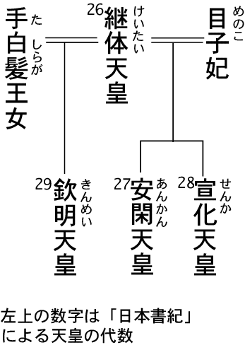

| 古代英雄七人の謎 | |
| 豊田有恒 | |
| (1999) | |
漫画 小説 一般書籍 RAW ZIP RAR 無料 ダウンロード http://13DL.NET
〈仕様について〉
電子書籍の閲覧では、デバイス・ビューアによって機能、表示に差が認められる場合があります。
〈おことわり〉
電子書籍版の内容は、原本の執筆・出版当時のまま収録しておりますが、 電子化にあたり、一部の画像・テキストが収録されていない場合があります。ご了承いただきたくお願いします。
〈ご注意〉
本書の全部または一部を著作権者ならびに東京書籍株式会社に無断で複製、転載、改ざんすること、また公衆送信を行なうことやホームページなどに掲載することを禁止します。このような行為は、著作権法違反により処罰の対象となります。
はじめに
日本の古代史には、多くの謎がある。有名な邪馬台国にしても、どこにあったかも判らないほどだから、謎そのものと言ってもいいだろう。だが、謎は謎として、古代も現代も、人々が生まれ、生き、愛し、そして死んでいった点では、まったく変わりがない。古代史の専門書を読んでいると、たしかに理解が深まるのだが、その時代の人が歩んできた人生そのものまでは、見えてこない。古代のヒーローの人生そのものを描きだすには、文献資料が乏しすぎるのである。
だが、いつの時代であっても、人々の営みは、子々孫々に受け継がれていったのである。古代人を、あたかも未開人のごとく扱うことも、やはり誤りだろう。最近では、縄文時代でさえ、スポットが当たるようになった。筆者は、これまで弥生時代までは、小説に書いたことがある。邪馬台国の女王卑弥呼に関連して、長編短編あわせて、いくつかの作品を上梓している。だが、縄文時代までは、手が回らなかった。実際、縄文時代には、固有名詞がないのだ。つまり、文献がなにも存在しないから、早い話が、主人公の名前ひとつを取っても、命名に困ることになる。だが、かれらが、飢えに苦しみ、食うや食わずの野蛮な生活をおくっていたという縄文観は、すでに遠い過去のものになった。青森県の三内丸山遺跡の発見で、縄文人の優れた文化が、知られるようになった。かれらは、天性の芸術家だった。また、木造建築のエクスパートでもあった。
古代の人々も、自由に生き、悩み、愛して、人生を過ごしていた。
この本では、七人の人物を取り上げてみた。研究書ではないから、実在の可能性のない伝説上のヤマトタケルも、俎上に上げることになった。あとで登場する実在の人物との調和に欠けると思われるかもしれないが、これも古代の謎のうちだということで、ご容赦ねがいたい。
文献が乏しいため、それぞれの人物の一生を描きだすには、困難がともなう。だが、これまでの解釈にない謎ときを、あえて試みた。現存する資料の行間を読んで、ここまでなら言えるという可能性を追究してみた。聖徳太子にしても、推古天皇にしても、これまでの理解では迫れなかった実像が見えてきた。自画自賛になるようだが、その実像、そして謎については、読んでいただくしかない。
それぞれの人物が、生身の人間として、どこまで活き活きと描かれているかを、感じ取っていただければ、作者としては望外の幸せである。
しばしば言われることだが、『日本書紀』と比べると、『古事記』は文学的だとされる。このことから、『古事記』のほうが、資料的な価値が劣るかのような誤解もある。『日本書紀』が客観的に見えるのは、「一書にいわく」というかたちで、異説の類も紹介しているからだろう。
また、『古事記』には偽書説もあり、また、多氏の家伝のような性質でもあり、信憑性に欠けるという批判もある。だが、叙事詩として見るかぎり、どうも『古事記』のほうが、本来の伝承を伝えているような気がする。
倭建命は、東征に向かう際に、尾張の国造の娘である美夜受比賣と知り合う。『日本書紀』のほうは、一月も滞在したというだけで、簡単に片づけてしまっている。
だが、『古事記』では、往路に出会ったものの、東征から戻ったら、媾合しようという約束だけを残して、セックスしないまま出征していく。
青年武人の心境は、現代風に解釈しても、判らないこともない。生還を期しがたい任務である。ここで、彼女と結ばれるわけには、いかなかったのだろう。
これは、特攻隊に出撃した人々のあいだにもあった男女の葛藤である。死地へおもむく勇士は、残る恋人とセックスしたいのは山々だが、彼女を無垢のまま残したいという配慮を加える。
だが、彼女にしてみれば、もう二度と逢えないかもしれないのだから、一度だけ抱いてほしいという心境だったのだろう。
小説家の創作意欲をくすぐるエピソードである。
もしかしたら、キスしただけで、別れたのかもしれない。
遠征に成功して、倭建命は、尾張へ戻ってくる。『古事記』は、婚という漢字を媾合の意味で使っているが、期という字を、契ると訓んでいる。現在の意味とは異なり、期るという訓読をしていても、これはセックスするという意味ではなく、単にセックスの約束をしただけなのだ。
さっそく酒宴になる。これは、ふたりだけの戦勝パーティーだったのだろう。だが、美夜受比賣のドレスの裾に、血がついている。彼女はメンスになっていたのだ。
初めて、『古事記』のこの条を読んだときには、びっくりした。月経という字を使っている。露骨な描写なのだが、古代的なおおらかさというものだろう。
倭建命は、歌を詠んだ。
ひさかたの天の香具山から、次の行までは、枕詞のような修飾で、たいした意味はないらしい。
ひさかたの天の香具山を、鋭い鎌のような形で渡っていく白鳥のように、か細く弱い、おまえの腕を枕にしようと、わたしは努めるのだが、また、共に寝ようとも思うのだが、おまえが着ているドレスの裾には、月が立ってしまったではないか。
ざっと、現代語訳しておいたのだが、心情的には、現代でもありそうなシチュエーションだろう。
判りやすく説明すれば、こういうことだろう。東北支社へ出張して、とうてい困難だと思われていた重大な取引を、まとめて戻ってきた若いサラリーマンを、考えてもらいたい。本社のある奈良へ戻るまえに、途中で以前に勤務していた名古屋支社へ立ち寄った。そこには、かつての恋人がいる。ふたりだけで、お祝のパーティーをやり、これからというとき、彼女がメンスだと判った。
やけに卑近な例えをして恐縮だが、こういうふうに考えれば、現代の若者とも接点ができるだろう。
この歌に対して、美夜受比賣は、返歌をしている。
この場合の大君は、倭建命を指しているのだろう。
下手な口語訳で、恐縮だが、だいたい、こんな意味だろう。
古代的なおおらかさというものだろう。
『古事記』に、メンスの歌の応酬が記録されているとは、それまで知らなかった。
活き活きとした描写なのだ。
『日本書紀』が記録するように、一月も滞在したのかどうかは、『古事記』では、はっきりしない。御合したというから、美夜受比賣のメンスが終わってから、媾合したということなのだろう。
このあと、英雄は、破滅へと進んでいく。息吹山の神を退治しようと、草薙剣も持たずに、出掛けていくのだ。
「このくらいの山の神なら、素手でも退治してみせる」
倭建命は、そう豪語したという。
日本神話とギリシア神話が、よく似ていることは、多くの学者が指摘するとおりだろう。神々は、人間の増上慢な言動を嫌うものなのだ。
倭建命は、山で神に遭遇する。『日本書紀』では、大蛇となっているが、『古事記』では、白い猪になっている。だが、それが、神の正体であるとは思わずに、見過ごしてしまう。
とうとう、神を退治するどころか、自分が氷雨にあって、病に苦しむことになる。
私事だが、祥伝社から「ヤマトタケル・シリーズ」（既刊七巻）を刊行しているのだが、これを書こうと思い立った動機が、『古事記』を読んだからだった。もう二十年以上もまえのことである。
ギリシア神話と違って、日本神話には、英雄伝説が欠けていると言われる。だが、もともとの神話には、もっと色鮮やかな英雄伝説が語られていたにちがいない。
太安麻呂が古事記の序文に「削偽定実」と書いているように、編集段階で、原資料にあった多くのエピソードが、削られてしまったのだろう。
唯一の例外が、ヤマトタケルの物語である。ヤマトタケル伝説は、ギリシア悲劇にも匹敵する日本神話のモチーフである。これほど魅力的な登場人物は、ほかには存在しないと言っても、かまわないだろう。
記紀神話では、微妙にずれがあるが、ともあれ、ヤマトタケルの英雄性は、日本神話では際立っている。
古くからの映画ファンなら、東宝映画「日本誕生」を覚えているはずだ。三船敏郎がヤマトタケルを演じていたが、ミスキャストのきらいがないでもなかった。
また、ヤマトタケルが、徒歩で旅しているのも、考証的におかしい。ほかの絵画、映像などでも、徒歩のイメージらしい。
『日本書紀』では、「馬、頓轡て」と書いてある。ヤマトタケルは、馬に乗っていたのである。道が険しくて、馬がよく進めなかったという描写になっている。
また、すくなくとも『古事記』のヤマトタケルは、三船敏郎のような豪放磊落なイメージではない。もっと、華奢でニヒルなイメージがある。暗い運命の糸に操られて、悲劇へと突き進んでしまう人物として、描かれているのである。
英雄であるからして、たしかに強かったのだろうが、見るからに豪傑といったタイプではない。さもないと、女装してクマソタケルを討ったというエピソードが、生きてこなくなる。実際には、武芸に優れていたという設定だろうが、見た目には、華奢な美男子というほうが、ふさわしいだろう。
イメージキャストでいうと、今なら、さしずめ若いころの真田宏之か、京本政樹のほうが、原作（？）のイメージだろう。今の若手でいうと、武田真二など、ぴったりだろう。もしかしたら、坂東玉三郎でも、面白いかもしれない。
『日本書紀』のほうは、ヤマトタケルを、必要以上に英雄的に描いている。ここで、父の景行天皇の言葉が、気になる。
「（ヤマトタケルは）形は我が子だが、実は神人だと知った。これは、朕が才能に乏しく、また内乱が続くのを、天が哀れんで、天下統一のため、この国家が断絶せぬように、なされた御業である」
これは、親馬鹿を通り越して、あぶない台詞である。
ギリシア神話には、この種のパターンで、オリュンポスの神々を冒瀆したエピソードが、たくさん紹介されている。美女アラクネは、神々より美しいと高言して、神罰をくだされ、醜い蜘蛛に変えられてしまった。美女アンドロメダは、母親が海の精より美しいと高言したため、海魔の生贄にされかけ、王子ペルセウスに救われる。
親馬鹿が高じて、景行天皇は我が子ヤマトタケルを、神人と呼んでしまったのだろうか！
いや、そうではなく、疎遠であった我が子を、神々の怒りに触れさせるため、わざと仕組んだことではないだろうか？ もしかしたら、ヤマトタケルの苦難の生涯は、父親が意図的に呟いてしまった、神々を冒瀆する言葉に対する苦役なのかもしれない。
日本神話では、オリュンポスと違って、神々の世界である高天原は、存在感が希薄である。だが、もともとの神話伝承には、高天原という汎神界が、より詳しく描かれていたのだろう。
高天原の神々は、父親の景行天皇の増上慢な言葉に怒り、王子ヤマトタケルに罰を与えたのかもしれない。それによって、ヤマトタケルの生涯は、英雄ヘラクレスの十二の試練のような、苦役を課されることになったのだろう。
ヤマトタケルは、双子なのである。この双子が誕生したとき、父親の景行天皇は、碓に飛び乗って、大喜びした。そのため、双子の皇子は、大碓の皇子、小碓の皇子と、命名されたと記録されている。
古代には、双子を忌む慣習があった。双子の一方を殺さないと、不吉なことになるというモチーフは、多くの神話、伝説で語られている。
絶えず外征に出されて、生命の危険を犯している小碓の皇子＝ヤマトタケルは、いつも貧乏籤を引かされていることになる。
ヤマトタケル伝承は、『日本書紀』では、超人的な扱いになっている。
特に双子の兄の大碓の皇子に対する関係は、『古事記』とはまったく違う。『古事記』では、小碓の皇子＝ヤマトタケルが、兄の大碓の皇子を殺したことになっているが、『日本書紀』では、タケルの英雄性を際立たせるためか、いったん東征の人選にあたって、タケルが兄を推挙したため、大碓の皇子が逃げ隠れしてしまう――という運びになっている。
景行天皇は、
「そなたが欲しないことを、無理強いするつもりはない。まだ敵と出会ったわけでもないのに、いまから恐れているようではのう」
と言って、大碓の皇子を美濃に封じる。
べつだん、大碓の皇子の卑怯な態度に、怒っているふうでもない。ここでも、兄の大碓の皇子には甘いという感じが、天皇の態度からうかがえるのだが、古事記では、兄殺しを正当化するためか、いつも不利な役割を務める悲しい存在として、ヤマトタケルを位置づけている。
兄殺しというのは、心理学的には、父親の代理イメージだろう。よもや、実の父の景行天皇を殺したことにするわけには行くまい。そこで、兄の大碓の皇子を殺したとする説話になったにちがいない。
小碓の皇子（ヤマトタケル）と、兄の大碓の皇子との関係は、聖書にでてくるカインとアベルの物語と、似ていなくもない。この場合、兄のカインが、弟のアベルを殺すという物語になっている。このモチーフは、心理学でも、カイン・コンプレックスとして、男の兄弟のあいだの感情のもつれを説明する際に、しばしば使われる。ヤマトタケルの場合は、兄と弟の関係が、逆になっている。
ヤマトタケルの悲劇性を例証するため、しばしば紹介されるエピソードがある。東征をまえにして、涙ながらに叔母の倭姫に訴えるシーンである。
「父の天皇は、この我に死ねと、お考えになっておられるのか！ 西の熊襲を撃って戻ってから、幾許もないというのに、ろくな兵力も与えずに、今度は東方十二道を平定しろというのは、父なる天皇は、この我に死ねと、仰せられているようなものだ」
ヤマトタケルは、父の景行天皇に対する気持ちを、おおよそ、こんなふうな恨み言にしたと『古事記』にある。
父親が、自分に死ねといっているのと同じだ――と、二度繰り返している。
ヤマトタケルが、ギリシア神話のエディプス（オイディプス）と、比較されるゆえんである。
精神分析でいう、男の子が父親に背く心理状態――オイディプス・コンプレックスの本家と、ヤマトタケルのあいだには、共通点が少なくない。『古事記』の記述を見るかぎり、父親の景行天皇との関係は、うまくいってない。明らかに典型的なオイディプス・コンプレックスである。
これを病跡学（Pathography）で分析すれば、すぐ分かるだろう。精神分析学者ユングは、フロイトの言うオイディプス・コンプレックスを、一歩すすめて、竜退治のモチーフに当てはめている。世界各地のフォークロアに出てくる竜退治というモチーフの竜は、実は父親の象徴である。父殺しというパターンだが、実際に父親を殺すかどうかはともかく、男の子にとっては、父親の存在が、自立する際には、目の前に立ちはだかる壁のようなものに映ることはまちがいない。それを乗り越えていかなければならないのだ。
ヤマトタケルにとって、父親の象徴である竜とは、兄の大碓の皇子であったり、熊襲の川上タケルであったりしたのだろう。
心理学で言う父親代行という存在である。男の子が実社会にでて、嫌な上司、高圧的な取引先などに出会い、反発する。彼は、それら年長者に対して、深層心理のなかで、抑圧者としての父親のイメージを投影しているのである。
もしかしたら、本来の伝承では、その殺意は父親の景行天皇に向けられていたのかもしれないのだ。
ギリシア神話のオイディプス王子は、神託どおり、偶然出会った実の父ライオス王を殺し、それと知らずに、実の母イオカステと結婚してしまう。のちに、その恐るべき真実を知り、オイディプスは、みずから我が目を剔りだして、盲目となって放浪した末に、のたれ死にする。
オイディプスとは、腫れた足という意味のギリシア語だという。ヤマトタケルも、金関丈夫氏が指摘しているように、これと似たエピソードを持っている。
ヤマトタケル説話の終焉に近いあたりで、病苦に鞭打ってかろうじて三重県にたどりつくという場面がある。ヤマトタケルの足は、三重に曲がっていたという。そのことが、三重県の地名の由来となる説明伝承なのだという。腫れた足と共通するエピソードだというわけである。
ヤマトタケルの場合、母親の稲日姫という存在が、希薄である。父と母の出会いについては、『播磨風土記』に、いくつかのエピソードが記されている。『播磨風土記』を見るかぎり、若き日の景行天皇が、わざわざ美女を求めて、播磨へおもむいて、妃を手にいれるという求婚譚になっている。
愛情によって、結ばれたはずの夫婦だが、ヤマトタケルが物心ついたころには、すっかり冷えきった関係にあったように描かれている。景行天皇には、多くの妃があった。
おそらく、元の伝承では、稲日姫の妃は、兄の大碓の皇子を溺愛していたというふうに、描かれていたのだろう。さもないと、ヤマトタケル伝承に、まったく母親が登場しないことを、説明できなくなる。
しかも、この稲日姫が、文献に登場しないわけではない。それどころか、『播磨風土記』では、多くのページを割いている。若き日の景行天皇が、播磨の国の美女、稲日姫を求めて、播磨へいって、求婚するというエピソードが、詳細に描かれている。
それほどの美女なら、ヤマトタケルにとっても、憧れの対象になるだろう。男の子は、母親に恋人のイメージを求めるものである。だが、その母親は、ヤマトタケル伝説には、まったく登場しないのである。
ヤマトタケルにとって、叔母の倭姫が、母親がわりになっている。これは、伝承にもしろ、説明しやすい。倭姫は、伊勢神宮の斎王女である。
これは、神妻という民俗学的なモチーフで、神さまと結婚したような存在である。
インカ帝国にも、太陽の処女ママキーヤという存在があった。つまり、倭姫は、神に仕える自分には、男とセックスしたりすることがタブーであるだけに、もちろん終生おのれの子をなすことはない。だからこそ、甥のヤマトタケルに降るような愛情を注いだのである。
東征は、さらに苦難にみちたものになる。焼津という地名説話のもとになったエピソードがある。悪人に火をつけられ、三種の神器の一つ天叢雲剣をふるって、周囲の草を刈り取って、危うく危機を脱する。このため神剣は、草薙剣と呼ばれるようになったという。
ヤマトタケルは、海神の怒りに触れて、弟橘姫を失う。このエピソードは、東京湾横断フェリーのコースで語られている。現在の東京都の周辺は、かつては、広大な湿原になっていたため、東西の交通ルートではなかった。そのため、三浦半島から房総半島へ渡るコースが、ふつうだった。あの僅かな距離で、船が遭難したため、最愛の妃が、犠牲にならなければならなかったのだ。
ヤマトタケルの東征伝説には、悲劇の色が濃くなっていく。各地に、彼が妃を偲んだという伝説が流布されている。群馬県の吾妻郡は、我が妻が訛ったものだという。
記紀それぞれに、記述が異なるが、ヤマトタケルは、東征から戻ってきて、尾張の美夜受比賣のもとに、逗留することになる。弟橘姫のほかにも、この美夜受比賣をはじめ、何人かの恋人がいる。英雄なんとかを好むというから、多くの愛人がいても、イメージダウンになることもないだろう。
『古事記』にある、このシーンは、冒頭に紹介したように、いかにも文学的に描かれている。
物語は、終焉に向かう。ヤマトタケルは、伊吹山へ出掛ける。神宝草薙剣は、美夜受比賣のもとに、置いてきてしまう。ここに、彼の慢心がある。
「こんな山の神など、素手でもやっつけられる！」
『古事記』では、ヤマトタケルは、こう言ったとされている。
途中で、雄牛ほどもある白い猪に出会う。『日本書紀』では、これが、大蛇ということになっている。
「この猪は、伊吹山の神の化身だ。いま殺さなくても、帰り道に殺せばよかろう」
ヤマトタケルは、こう言いはなった。暴言である。ますます、神々の怒りを買うような言葉である。
東征をやりとげて、自信過剰になっていたのだろうか！ いや、そうではあるまい。
話が前後するが、尾張へもどり、美夜受比賣のメンスが終わるのを待って、御合した――と書いてある。
つまりセックスしたのである。だが、かつての恋人とのセックスに溺れこもうとしても、思い出すのは、死んだ妻のことばかりだったのだろう。
ヤマトタケルは、自暴自棄になって、美夜受比賣との愛欲から抜け出すため、伊吹山へ登ったにちがいない。
谷川健一氏によれば、伊吹山は、もともとは鋳吹山という意味だったのだろうという。鋳吹くというのは、金属精錬を意味する。ついでながら、伊福部という苗字も、もともとは鋳吹部と書いたものだろうという。金属精錬に当たったテクノクラートの一族だったのだろう。
蛇足だが、映画「ゴジラ」の主題曲を作曲した伊福部昭氏がいる。すばらしい才能である。
金属精錬の聖地である伊吹山へ、剣を持たずに行くということは、剣霊の加護を受けられなくなるから、まさに自殺行為である。
伊吹山の神は、大氷雨を降らせて、ヤマトタケルを妨害する。やがて、ヤマトタケルは、病にかかる。
尾張の美夜受比賣のもとへ戻ろうとしなかったのは、やはり、この姫が、一時の浮気の相手でしかなかったからにちがいない。もし、美夜受比賣のもとへ帰っていれば、あるいは命が助かったかもしれない。
だが、ヤマトタケルは、最愛の弟橘姫を失い、自分の命にも、もはや執着しなくなっていたのであろう。ヤマトタケルは、故郷の大和をめざした。余命幾許もないことを、悟っていたのだろうか、あるいは、帰巣本能に操られてのことであろうか？
だが、ヤマトタケルには、鈴鹿山系を越えて、行旅を続ける体力は、残されていなかった。杖衝坂という地名が、四日市市にある。現在の国道一号線――東海道に沿っている。英雄ヤマトタケルが、杖をついて、ようやくたどり着いたという地名説話になっている。
やっとのことで、能煩野に辿りつく。
有名な、「大和は、国のまほろば」の歌は、ここで詠まれたとされる。
倭は、国のまほろば たたなづく 青垣 山隠あれる 倭しうるわし。命の全けむ人は、畳薦 平群の山の 熊白橿が葉を 宇受（髻のこと）に刺せ、その子。
ヤマトタケルは、さらに歌を詠んだ。
この歌を詠みかけて、ヤマトタケルは、危篤状態におちいった。『古事記』では、片歌と記している。未完成の歌という意味だろう。
愛する我が家の方角には、雲が立ちはじめている――歌の大意は、こんなところだろう。
ヤマトタケルは、遥か離れた能煩野から、死に臨んで、大和にある我が家を、彷彿として目に浮かべていたにちがいない。
続いて、ヤマトタケルは詠んだ。
死を前にして、意識が混濁しはじめていたのだろう。望郷の歌を中途半端にしたまま、今度は、草薙剣の行方を、気にかけている。
そして、ヤマトタケルは、薨去した。
神話の話だが、享年二十九歳だったと伝えられる。
日本武尊（『日本書紀』）、倭建命（『古事記』）という二つの表記であらわされるヤマトタケルは、ほとんど英雄神話を持たない日本神話のなかでは、一味違った性格を与えられた登場人物である。
いわゆる英雄時代が、日本神話に欠けている。これが、ギリシア神話なら、多くの神話作者がいて、既存の伝承に、自分のイマジネーションを加えて、さらに空想の翼を、広げていったのだが、日本では、官選の二つの史書――記紀によって、新しい神話の成長が、止まってしまった。つまり、統一見解のようなものが、できてしまったため、新たなイマジネーションの入りこむ余地が、なくなってしまったのである。都市国家が割拠していたギリシアとは、国情の相違があったことも確かだろう。
日本に英雄時代はなかったという定説に対する唯一の反証が、ヤマトタケルの存在である。ギリシア悲劇というように、英雄には悲劇的な要素が不可欠である。この要素が、唯一ヤマトタケルを例外として、日本神話には欠落している。スサノオノミコトのように、神話学でいうトリック・スターも、登場するのだから、あながち日本神話が、バラエティに乏しいということもないのだが、悲劇的な英雄伝説の要素が、ヤマトタケル以外には見当たらないのも事実である。
ヤマトタケルにとって、父親の景行天皇の存在は、まさにユンクがいう竜のようなものである。つまり、この父親を乗り越えなければ、自分を確立できない。
景行天皇は、すでに筑紫遠征をはたしている。ヤマトタケルも、筑紫遠征を行なうのだが、これでは、父親の後追いでしかない。彼自身の存在理由は、どこにもない。熊襲タケルを討ったといっても、卑劣なだまし討ちでしかない。
『日本書紀』のほうは、一見すると公平な記述になっていて、「一書にいわく」とことわって、異説の類も紹介しているのだが、全体をとおしていえば、公式見解の色彩がつよい。これに対して、『古事記』のほうが、より文学的で、人間くさいといえると思う。
これは、小説家のイマジネーションなのだが、本来の伝承は、記紀とは、違っていたのではないだろうか？
収集した原資料のうちから、朝廷に都合のわるい部分は、削除したり改竄してしまったらしい。
オイディプスの伝承も、ホメロス、ヘシオドスの時代には、まだ完成していなかった。やがて、ソフォクレス、エウリピデスなどの神話作者が、あれこれとイマジネーションを加えて、おおよそ現代に知られているような形にまとまったらしい。
醒めた説明をしてしまえば、英雄ヤマトタケルは、あくまで伝説でしかない。大和朝廷の統一の過程で、王子将軍の制度があったと考えられている。戦場に斃れた歴代の王子たちを、ひとつの人格として、説話化したものなのだろう。
また、天智天皇の皇子で、八歳で死んだ、口の不自由な建という人物を、モデルにしたともいわれる。もし、その皇子が、健常者で、長生きをしていたら――という仮定で、ひとりの英雄を誕生させたのだともする。
吟遊詩人のような人々が、古代日本にも存在していて、こういう英雄物語を流布させた可能性もあるだろう。
しかし、ここは、伝説にもしろ、ひとりの英雄がいたと信じたいところである。
望郷の王子ヤマトタケルは、ようやく能煩野に、たどりつく。伊勢の鈴鹿あたりである。
有名な「大和は、国のまほろば」の歌は、このときのこととして、『古事記』にのっている。
大和は 国のまほろば――の歌が登場するのは、まえにも紹介したように、この条なのである。もう一度、英雄の臨終の場面に戻ってみよう。
『古事記』は、演出効果を狙って、ここで一段落おいてから、そのあとを続ける。
命の全けむ人――という歌になる。
また歌いたまいき――と記しているから、「まほろば」の歌とは、別の歌としているのかもしれない。ここで、また一段落おいて、国しのびの歌――だというふうに注釈を加えてから、次の歌を紹介する。
ヤマトタケルは、病気のため、意識も失せかけていたのだろう。まえのフレーズと、繋がらなくなってしまう。
「また歌いたまいしく」とあるあと、『古事記』の記事を、拙い筆だが、現代語に訳出してみよう。
継体天皇とは、おかしな謚号である。
謚号というのは、贈り名のことである。生前に、そう呼ばれているわけではない。明治になるまで、日本の天皇は、元号と、謚号は、一致していなかった。
ひとりの天皇の治世のあいだに、天災などが起こったりすると、元号を変えたのである。安政、慶応という元号は存在するが、安政天皇や慶応天皇は、いなかった。明治になって、元号と天皇の謚号を、一致させることになったのである。
これを一世一元の法と呼んでいる。
だが、謚号というのは、天皇が崩御してからの贈り名である。したがって、生前に呼ぶのは、不吉なことでもあり、非礼なことでもある。そこで、現在の天皇は、今上天皇と、呼ぶことになっている。平成天皇などと、気軽に呼んではいけないのである。
神武天皇の場合、カムヤマトイワレヒコノミコトという、長ったらしい名が、本名である。これを和風の謚号といい、記紀にも採用されている。それに対して、神武天皇というのは、漢風の謚号である。こういう漢字二文字の天皇号は、のちになって、淡海三船によって、定められたものである。
継体天皇の場合、和風の謚号は、オホトノスメラミコトという。それにしても、体を継ぐとは、奇妙な謚号である。淡海三船は、壬申の乱で敗死した大友の皇子（弘文天皇）の曾孫にあたる。継体天皇の事蹟について、この時代までは、原資料のようなものが、残存していたのかもしれない。
万葉仮名で書かれている部分も混じる『古事記』と比較すると、『日本書紀』は、立派な漢文で書かれている。遣唐使などを通じて、漢文化が導入されている。編集スタッフの漢字の素養は、今日のわれわれの比ではない。
ここで、継体天皇の正体に触れるまえに、その一代まえの武烈天皇に、迫ってみたい。武烈天皇は、日本版ネロのような暴君として描かれている。妊婦の腹を裂いただの、罪人を流れに放りこんで槍で突かせただのと、酷いエピソードが書いてある。
いくらなんでも、皇室年代記とでも言うべき『日本書紀』に、書いてある記事にしては、皇室のデメリットばかり多すぎる。
そこで、武烈天皇＝架空説なども出ている。また、暴君として描かれている百済の末多王の記事が、誤って武烈紀に紛れこんだせいだ――などという苦しい解釈もある。
皇室の先祖なら、こんなに貶て描くはずがないというわけだ。皇国史観や身びいきで言うのではない。これが、当然だろう。
となると、継体天皇より、武烈天皇の正体が問題になる。
中国では、修史の義務というものがある。現代にいたるまで、二十四史といわれる史書が編纂されている。新しく興った王朝は、先王朝の歴史について、史書を編纂する義務を負うのである。
先王朝滅亡の直後では、いけない。先王朝を倒して新王朝を創設した立場から言えば、どうせ悪口しか書かないに決まっているからだ。だが、あまり遅れても資料が散逸してしまうから、やはりまずい。
もうひとつ、中国には、易姓革命という思想がある。王朝の興亡は天命によるとする。古代には、その点が、はっきり記されていたと考える。
伝説的な夏王朝は、禹に始まり、桀に終わる。次の殷（商ともいう）は、湯から始まり、紂で終わる。そして聖賢の時代とされる周王朝が始まる。
この場合、桀も紂も、暴君として描かれている。酒池肉林などというエピソードや、炮烙の刑――焼けただれた銅棒を囚人に渡らせる見せ物――などを、やってのけたとされる。桀紂とセットで呼ばれるような暴君の代名詞なのだ。
武烈天皇の事蹟も、この桀紂の属性を与えられた記述になっている。これは、なにを意味するのか？
記紀の編者は、漢文の素養にあふれていた。王朝の最期に暴君が出現するという故事を、踏まえていたのである。
してみると、いわゆる応神王朝、河内王朝ともいわれる王家は、この武烈天皇の代で滅亡したことになる。話が煩雑になることを承知でいえば、記紀の編者は、暴君伝説を二段階に分けて記述している。第一次は雄略天皇である。大悪天皇とすら呼んでいる。中国でいえば、夏の桀王に相当する。
たった一夜の媾合で、愛妃が妊娠したことを疑い、臣下にきいてみたりする。たった一夜で妊娠するということがあろうかと。すると、何回なさいましたかと家来に尋ねられて、七回やったと答えたりしている。
これは、雄略天皇のエピソードとしては、おとなしいほうだろう。もっと凄い逸話が、目白押しだから、ぜひ記紀を読んでもらいたい。
暴君の極め付きが、武烈天皇という設定になっている。中国の殷の紂王に該当する。
もし、こういう天皇が、皇室の直系の先祖だとすれば、こんなふうに記述するわけがない。
かの藤原不比等も編集には、タッチしているらしい。もし、それが事実でなければ、検閲を加えて発行停止処分にもできたはずなのに、皇室のイメージダウンのような暴君を、あえて堂々と記録している。つまり、当時の人々には、そこで王統が断絶しているという認識があったのだ。
それでは、なぜ、中途半端に、これら暴君も皇室の先祖であるかのごとく、記述したのかという疑問が出てくる。それは、万世一系というイデオロギーのせいなのだ。万世一系というイデオロギーは、中国文化に染まりきった古代日本が、固有のアイデンティティーを主張する拠り所だった。中国と違って、日本では、王朝は交替しないという、確固たる信念で、大和王家の正統性を、主張したかったのだ。
たとえば、中国では、禅譲、放伐という王朝交替のプロセスがある。平和裡に政権を譲りわたすか、武力で討伐するかという問題である。
中国では、古代の聖賢の時代には、禅譲だったが、周の武王が、殷の紂王を討ったような武力による放伐が、まかりとおることになる。
したがって、のちの時代には、実際には武力で放伐しても、前王朝の最期の皇帝から、禅譲されたように取り繕うのが、ふつうになった。有名な『三国志』の魏の曹操は、滅びかけた漢の皇帝を傀儡として、権力を握る。実際に皇位を譲られるのは、曹丕の代になってからだが、これも武力で政権の委譲を迫ったわけだから、強制的な禅譲というわけだろう。
日本では、禅譲、放伐という王朝交替の思想を、逆に使っている。
神武天皇のあと、綏靖天皇は、兄に皇位を狙われるが、これを討って即位したとされる。放伐である。
だが、仁徳天皇は、兄の一人に皇位を狙われるが、別の兄が、その兄を殺したため、皇位を譲るという立場をとる。だが、この兄も、ライバルを殺した功績を主張することなく、仁徳天皇こそ天皇に相応しいと、言いつづける。ここで麗しい兄弟愛が描かれるが、この兄は急死してしまい、ようやく仁徳天皇が即位する段取りになる。禅譲である。
中国では、禅譲、放伐という順序だったものが、日本では逆に採用されている。つまり、綏靖天皇の時代には、武力による放伐が、一般的だったものが、仁徳天皇の時代になって、ようやく平和裡の禅譲になったという、編集方針になった。
中国では、王朝の興亡という視点だが、万世一系というイデオロギーのため、兄弟の皇位争いというかたちで、矮小化されてしまった。
ただ、古代のほうが、道徳的に優れていたとする中国思想を、日本的に改良して、日本では、古代には野蛮な放伐が、まかり通っていたが、しだいに道徳が向上した結果、禅譲になったとしたかったのだ。
だが、それでは、禅譲、放伐思想の描き方としては、不十分だろう。そこで、武烈天皇のくだりで、王朝断絶という場面を描いてみせたのである。武烈天皇に相当する大和の大王が、いたのだろう。その大王は、かならずしも暴君ではなかったろう。だが、中国の天命思想によって、王朝の末尾に暴君を設定したにちがいない。
だが、継体天皇は、武烈天皇を放伐して、大和の大王になったとは、記してない。万世一系というイデオロギーのためである。
継体天皇は、越前から興った。
継体天皇の父は、早くに死んだらしい。そのとき、母親の振媛が口にした台詞が、意味ありげである。
「妾は、今や遠く桑梓（故郷のこと）を離れています。どうして和子を育てることができましょうか。そこで、妾は、高向へ戻って、和子をお育てするつもりです」
高向とは、越前の邑だと、註してある。
『新撰姓氏録』には、坂上系譜というものがある。そこに、百済の阿智使主の子孫として、三十ばかりの氏族の名をあげているが、そのなかに高向の村主という家系も載っている。
継体天皇の一族の出自は、高向という場所だったらしい。継体天皇の母親は、遠く故郷を離れていると言っている。だが、大和と越前とは、そんなに離れていると言えるだろうか？
桑梓は、故郷の意味だが、高向と対になったような文脈になっている。高向を韓国音で読んでみる。〈コヒャン〉となる。これは、ハングルのスペルでは、故郷と、まったく同じになる。暗号なのかもしれない。
継体天皇の即位のまえには、倭彦の王という人物に、大伴の金村（新しい大王擁立の中心となった大連）が、即位を持ちかけたというエピソードがある。倭彦は、仲哀天皇の五世の子孫とされる。だが、この倭彦は、金村の軍勢がやってくるのを見て、恐れおののいて逐電してしまったという。
そこで、継体天皇に、お鉢が回ってくる。この大王も、倭彦に負けず劣らず、大和王家の出自だとしても、血縁が薄い。応神天皇の五世の子孫と説明されている。
だいたい、情報の発達した現代でも、自分の五代まえの先祖を知っているという日本人は、まずいないだろう。族譜と呼ばれる家系図を、連綿と伝承している韓国人ならともかく、そういう家は、日本では、毎日新聞社の斜向かいに住んでいらっしゃるご一家以外には、滅多にないはずだ。
継体天皇は、いったんは固辞したが、金村に説得されたかたちで、大和の大王になった。ところが、その継体天皇が、実際に大和へ入るまで、二十年もかかってしまう。
樟葉の宮、筒城の宮など、山背（今の京都）のあたりに宮処を構えて、いっこうに大和には入らなかったと記録されている。
どう考えても、不自然な記述である。『日本書紀』の編者が、わざと不自然に書いたといっても、おかしくないくらいである。
継体天皇が、武烈天皇を討って、つまり放伐して、新王朝を樹立したと書いてあるわけでもない。
だが、王朝の末尾に常識では考えられないような暴君を設定して、その次に前王朝の五代もまえの子孫という新王をもってくるのは、いかにも作為的である。
武烈という暴君が、伏線になっている。樟葉の宮、筒城の宮など、山背の宮処は、継体天皇が、大和制圧のために進出した拠点なのだろう。
あえて、作家的な想像力を許してもらえれば、倭彦の王は、継体天皇と戦って敗走した、大和最期の大王である可能性も、なきにしもあらずだろう。
アステカ帝国でいえばクワウテモク王、インカ帝国でいえばトパク・アマール王子のような存在で、先王朝の最期の血筋だったのかもしれない。
継体天皇が、外来の征服者であった傍証として、手白髪の王女を娶っていることも、ひとつの根拠にはなる。継体天皇には、目子の妃という正妻がいる。だが、大和入りしてから、大和の王女を娶っている。
アレキサンダー大王は、ペルシャを征服したのち、ソグディアナの王オクシュアルテスの娘ロクサーヌを娶っている。前王家の姫と結婚することによって、前王家に連なる正統性を獲得したわけである。
継体天皇も、同じだったろう。
継体天皇が、越前から大和へ、二十年もかけて入ったのは、史実である。単に越前から大和へ入っただけなら、とても二十年もかかるわけがない。戦闘を重ねながら、大和中枢部へ侵攻したのであろう。ここから、一種の征服王だったと考える根拠が生じる。
だが、その本来の出自は、まだ明白ではない。新羅系の征服者、あるいは越前の豪族など、いろいろな説がある。
まえに紹介したが、その故郷は、越前の高向だというが、高向は、韓国語の音では、故郷と同じ発音になる。これを暗号と解釈すれば、新羅系の征服者と考えることも、あながち無理ではない。北陸には、新羅王子の天日槍の渡来伝説が、たくさんある。
しかも、応神天皇の五世の孫という記紀の記述を鵜呑みにすることはできまい。だが、継体、欽明という両朝では、『日本書紀』の記述のうち、朝鮮半島関連の記事が、三分の一以上を占めるようになる。やはり継体天皇の出自と関係があるだろう。
大阪府高槻市に、宮内庁で指定した継体天皇陵がある。いわゆる天皇陵というものは、発掘するどころか、立ち入ることも、禁止されている。
考古学の発展のためには、発掘調査をしてみたら、面白いだろう。
ただ、いろいろ難しい事情もある。
関西にある大学――例えば京都大学、同志社大学などの学者には、伝統的に天皇陵発掘賛成の人が多い。なぜなら、発掘調査を行なうに当たっては、現地主体という不文律がある。自分たちの手で、みごと天皇陵の謎を解明したいと思うのは、考古学者としては当然のことだろう。
関西にある天皇陵を、東京大学が発掘するということは、通常ありえない。そうなると、東京大学の出番が、なくなってしまう。東大の学者としては、面白くない成り行きである。
そのため、東大系の学者は、たいてい天皇陵の発掘反対である。東京近辺にある天皇陵といえば、明治以降の天皇を祭った多摩御陵だが、もちろん古代のものではないし、発掘は許されないし、仮りに発掘したところで、なんの意味もないだろう。
いくらなんでも、つい先年うめたばかりの昭和天皇陵を発掘するわけにもいくまい。
つまり、古代の天皇陵を発掘することになれば、当然、京大、同志社大などの研究者が主体になる。東大側としては、関西の学者ばかり手柄を立てることになっては、面白くないから、反対にまわるわけだ。
もっとも、あからさまに、そういうわけにもいかないから、もっともらしい理屈はつけてある。天皇陵というものは、天皇家の私的な墳墓である。それを暴くことは、道徳的にも許されないという理由もある。また、やみくもに発掘しても保存できないから、時期尚早だという理由もある。
また、野次馬的な意見だが、こういうのも面白い。もし発掘して、朝鮮と関わりのある遺物が、大量に出土してしまったら、説明に困るから、発掘させないのだという。これなど、うがちすぎているような気もする。
そういった事情を、考慮しながら、以下の文を読んでほしいのだが、高槻市にある継体天皇陵が、実は、間違っているのではないかという説は、以前からあった。
だいたい、天皇陵というものは、『古事記』『日本書紀』に、おおよその場所が記録されているだけだ。幕末になって、国粋思想が盛り上がったため、ようやく関心が持たれるようになった。だが、明治政府にも、なにかの根拠があるわけではない。しかし、皇室の先祖筋にあたる天皇の墓を、指定しないままでは、国民の結束のためにも、不利が生じてくるだろう。そこで、それぞれの天皇陵を指定したのだ。
継体天皇は、六世紀のはじめに、即位したらしい。隣りの韓国の『百済新撰』という文献は、『日本書紀』に引用されている部分しか、現存しないのだが、大和の王、王子などが、あいついで死んだと書いてある。
継体天皇というのは、まえの王朝を滅ぼして、王位についた人物らしい。前にも書いたとおりである。
ともあれ、継体天皇は、即位した。繰り返すが、越前から興って、大和へ入るまでには、二十年もかかったとされる。しかも、応神天皇の五世の孫だという。
情報化された現代でも、自分の五代前の先祖の名が判る人は、珍しいだろう。
ぼくなど、祖父の名も知らない。
つまり、継体天皇は、旧大和王朝とは、なんの血縁もない人物だったのだろう。
この継体天皇の陵墓が、現在の指定地ではないという疑問が出てきた。西暦五三〇年ころ崩御した天皇の陵墓にしては、古墳の築造法からみて、年代様式が違うようだというわけである。
継体天皇陵の近くに、今城塚という前方後円墳がある。ここは、いまでは荒れはてていて、誰でも自由に入れる。明治政府は、天皇陵を指定する際には、皇室と関わりのありそうな古墳は、陵墓参考地として、たいてい押さえてしまった。だが、この今城塚は、そのときの指定から漏れたのだ。
どうやら、この今城塚のほうが、ほんものの継体天皇陵だろうという説が、もっぱら支持を集めている。
継体天皇のあとは、安閑天皇、宣化天皇という兄弟が、皇位を相続する。その母親は、天皇が越前にいたころの妃だった目子という女だ。だが、このふたりの天皇の在位は、比較的みじかいものだった。
安閑天皇は、たった二年しか在位していない。ところが、僅かな在位期間にもかかわらず、安閑紀の記事は、けっこう分量が多い。
朝鮮半島関係の記事のほか、内政に関する記事がいくつかある。
ここも重要だろう。
千葉県の伊甚の国造に、真珠を献上させようとする。ところが、いつまで経っても、献上しないので、都へ連行させる。伊甚の国造は、宮中で脱走して、皇后の部屋へ隠れてしまった。それとは知らずに、部屋へ戻ってきた皇后が卒倒する騒ぎになる。
とうとう、国造は処罰され、領土を召し上げられるという結果になった。
実は、私事だが、私立の武蔵高校の出身で、千葉県の夷隅郡の鵜原というところに、寮があった。海水浴のためである。
そこから家へ手紙を書いたとき、夷隅なんて変な地名だなと、高校時代に感じた記憶がある。夷隅とは、『日本書紀』の伊甚が、訛ったものだったのだ。
また、武蔵の国造の笠原直使主と、同族の小杵が、国造の地位を争ったことがある。
このとき、上毛野君小熊は、小杵に味方をして、使主を殺そうとした。あやうく逃れた使主は、都へ行って、ことの次第を訴え出た。
その結果、小杵は殺されたという。
当時の群馬県の上毛野君が、いかに巨大な権力を持っていたかを示す記事だろう。
判りやすく言えば、群馬県の王様が、かってに自分に都合のいい人物を、東京都知事に任命してしまったようなものだ。
それで思いだしたのだが、つい数年前にも似たような事件が起こっている。現在、連立した某与党の党首になっている岩手県選出の代議士が、老齢を理由に東京都知事の首をすげ替えようとして、失敗した。
対立候補として担いだのは、人気アナウンサーだった。これには、東京都民が猛反発した。なぜ、岩手県の代議士が、東京都知事を決めるのだというわけだ。結局、老齢の知事は、もう一期つとめて、例の知事の無策都政に代わることになった。
歴史は、繰り返すというわけだろう。
話が横道にそれてしまった。
安閑天皇は、七十歳で崩御する。在位二年だから、六十八歳で即位したことになる。記述に無理があるだろう。
安閑の次の宣化天皇は、いちおう四年のあいだ在位したことになっているが、その治世には半島関係の記事ばかり出ている。これまた、七十三歳で崩御したという。してみると、六十九歳で即位したことになる。これまた不自然だ。
継体天皇の後継者を図解してみよう。

腹違いの欽明天皇の治世になる。この天皇の母親は、手白髪の王女といって、継体天皇が滅ぼしたと考えられる大和王朝の出なのだ。自分が、大和とは縁もゆかりもない人間だからこそ、旧王家の姫と結婚して、大和を統治するため、有利にしようと、はかったのだろう。
学者のなかには、先妻の子の安閑、宣化と、後妻の子の欽明とのあいだで、お家騒動、あるいは内乱になったのではないかと、想像する説を立てる人もいる。
実際、その後の皇統は、欽明の子女へと継承されていく。敏達、用明、崇峻、推古など歴代天皇は、みな欽明天皇の子で、それぞれ兄弟と妹という関係になる。
つまり、安閑、宣化の子孫は、歴史から消えてしまうのだ。
新王朝の創始者である継体天皇の王統は、欽明天皇へと、受け継がれていく。
継体天皇陵が、現在指定されている古墳ではなく、高槻市の今城塚にちがいないと、まえに書いた。ところが、さらに息子の欽明天皇の陵墓にも、疑問が出ている。
現在、飛鳥にある欽明天皇陵とされる古墳は、これまた、明治期に指定されたものだが、父親の継体天皇陵と同じく、指定が間違っているという疑惑が発生したのだ。
現在の欽明天皇陵の近くに、見瀬丸山古墳という巨大な前方後円墳がある。宮内庁も、ここでは抜け目なく、この古墳の後円部だけは、陵墓参考地に指定しておいた。
そのため、本物の継体天皇陵らしい今城塚と異なり、勝手に入りこんだりするわけにはいかない。
ところが、ある人が、後円部の穴から、玄室の内部へ侵入して、写真を撮ってきてしまった。
巨大な石室があって、ふたつの石棺が置かれていることも、はっきりした。
石棺が、二個あるということは、ここが欽明天皇陵だという証明のようなものだ。つまり文献と一致するからだ。
日本最初の女帝となる推古天皇は、母親の堅鹽媛の墓を改葬する。このとき、五千人が誄を行なったという。誄とは、追悼の言葉のことだ。五千人というから大規模な行事だったのだろう。
あとで、この日本最初の女帝について、一章を設けてある。その章（四章）を参考にしてもらいたいが、ここでも簡単に触れておく。
推古女帝は、蘇我氏の出である母親の堅鹽媛と、一身同体のような関係だったらしい。父親の欽明天皇とは、あまり巧くいかなかったらしい。
なにしろ、天皇には多くの妃がいて、多くの子女をもうけている。娘としては、父親を尊敬できなかったのだろう。ここからは、想像になるが、父親の女道楽について、母親から、いつも愚痴られていた――くらいのことはあったにちがいない。
見瀬丸山古墳の玄室の写真が、マスコミに出てしまったため、さしもの宮内庁も、限定的ながらも、玄室を専門家に公開しないわけにはいかなくなった。
その結果、ふたつの棺桶のあいだに、奇妙な事実が浮かんできた。手前にある石棺のほうが、奥に置かれている石棺よりも、はるかに古いものだと判ったのだ。
死亡した年代から見て、古いほうが、欽明天皇の石棺だろう。新しいほうが、妃の堅鹽媛の石棺にちがいない。
推古女帝は、改葬にあたって、父親の柩を、入口のほうへ引きずりだし、母親の柩を奥へ収めたのだ。
つまり、見瀬丸山古墳は、欽明天皇陵というより、女帝の母の堅鹽媛陵というべきなのだ。欽明天皇の柩は、もともと、この墓の主だったのに、入口へ引っ張りだされて、いわば居候のような形にされてしまったのだ。
ぼくは、タージ・マハルを訪れたときのことを思い出した。
インドのムガール帝国のシャー・ジャハーン帝は、妃ムムターズ・マハルのために、壮大な墓を建てた。
それが、タージ・マハルである。
だが、帝は、息子のジャハン・ギルに裏切られて、アクラ城に幽閉される。この城から、ジャムナ河をはさんでタージ・マハルが見える。哀れな帝は、愛妃の墓を眺めながら、幽閉されたまま生涯を終えた。
だが、帝の墓はない。それを哀れんだ王女が、最愛の妃の墓であるタージ・マハルの墓所の入口へ、王の柩を置いた。
ぼくも見学したのだが、いかにも不自然な位置に、もうひとつの柩が置いてある。
その意味では、見瀬丸山古墳――つまり本物の欽明天皇陵、いや堅鹽媛陵は、タージ・マハルと似ていると言えるだろう。
それにしても、継体、欽明という父子二代の天皇の陵墓が、誤って指定されていたというのは、いったい何故なのだろうか？ もしかしたら、なにか大きな秘密が隠されているのかもしれない。
聖徳太子には、エスパー伝説がある。つまり、超能力者だというわけだ。
太子は、自分の死期を予言した。これは、事実に近いらしい。太子の死の二か月まえに母親の間人の大妃が、前日に愛妃の膳手の菩岐々美が、死亡している。
当時は、寿墓と言って、生前に墓を造らせる習慣があった。そこで、太子は、自分の死期を予知して、墓の工事を急がせたのだという。このあたりも歴史の謎で、聖徳太子暗殺説がでる根拠になっている。
これは、ＳＦ用語でいう予知能力（Precognition）だ。
太子伝説のうち、いっぺんに十人の訴えを聞いたというエピソードが、もっともポピュラーなものだろう。これには、豊田有恒説を紹介しておこう。ぼくの解釈では、百済語、高句麗語など、語学に堪能だったことから、こういう伝説が生まれたのだということになる。
太子の仏教の師匠は、高句麗から来た恵慈法師である。また、百済の恵聡法師からも、仏教を学んでいる。
ぼくは、あるとき、言語学の権威だという学者に、訊いたことがある。
「いったい、聖徳太子は、何語で仏教の授業を受けたのでしょうか？」
すると、相手の大先生は、うっと言ったきり、絶句した。ぼくのほうは、意地悪をするつもりはなかった。小説家の興味で、なにげなく訊いてみただけだった。だが、これが難問になった。
恵慈法師や恵聡法師が、日本語に堪能だったか、あるいは、聖徳太子が、百済語、高句麗語に堪能だったか、どちらかと考えないと、授業など不可能だろう。日常的なことなら、手真似でも通じるが、仏教の教義という形而上学の授業である。言葉ができなければ、理解できない内容になる。
ぼくは、たぶん聖徳太子が、百済語、高句麗語などを、勉強したのだろうと解釈している。
ただし、もし伝説どおりだとすれば、ＳＦ用語でいう精神感応（Telepathy）ということになる。
聖徳太子には、さらにＳＦ的な伝説がある。ＳＦ用語でいう生まれ変わり（Reincarnation）である。
太子が、天台宗の第二の開祖といわれる南嶽禅師慧思の生まれ変わりだというのだ。
中国の慧思禅師は、西暦五一四年に生まれ、五七七年に入寂していることが、はっきりしている。
聖徳太子は、五七四年生まれだから、生まれ変わりにしては、年代が合わない。禅師が死んだとき、太子は三歳になっていた。三年間だけ、禅師の生霊が、とり憑いたことにしないと、勘定が合わない計算になる。
聖徳太子は、時代とともに、しだいに聖人扱いが、はなはだしくなってくる。これまたＳＦ用語の疑似イヴェント（Pseudoevent）である。
本来は、社会学者のダニエル・Ｊ・ブーアスティンが言いだした言葉で、マスメディアが、ある出来事の報道を誇大に続けるうちに、真相が見失われてしまう現象だ。
天台宗の開祖最澄は、太子廟に参詣して、太子が慧思禅師の生まれ変わりだと、信じてしまった。華厳宗では、聖武天皇を聖徳太子の生まれ変わりと考えた。さらに、真言宗では、空海（弘法大師）を、聖徳太子の生まれ変わりと、解釈するようになった。
聖徳太子は、疑似イヴェント化してしまうのだ。
さらに、聖徳太子には、もっと神秘的な伝説さえも伝えられている。
聖徳太子は、日本のノストラダムスのような存在でもあるのだ。
今年は、一九九九年。ノストラダムスの大予言によると、「アンゴルモアの恐怖の大王が降りてくる」ことになっている。今年の七月には、はたして大予言が当たるかどうか、はっきりしてしまう。
そのとき、あれこれ大予言を解釈した人たちが、どういう顔をして、どういう弁解をするか、今から楽しみだ。
話が脱線したが、聖徳太子にも、「未来記」というものがあるという。太子の「御記文」とか、「石の記文」などと表記されている場合もある。
『明月記』の嘉禄三年（西暦一二二七年）四月十二日の条には、「春より伝えきくところの太子の石の御記文を、今日はじめて見る。末代、土を掘るごとに、御記文、出現す。河内の国、太子の御墓のあたりに、堂を造立するため石を曳き、碼碯石を曳き出しおわりぬ」と、ある。
聖人に未来を予言する能力があることは、古代や中世には、誰もが信じていたことである。
聖徳太子は、自分の死期を予知したばかりでなく、未来の歴史も予言しているというわけである。
聖徳太子ゆかりの寺院は、もともと『日本書紀』には、四つしか記録されていないが、現在は、おおよそ百二十ばかりある。つまり、聖徳太子にあやかったほうが、営業政策上、有利だという判断が働いて、時の住職などが、太子が建立したというような寺伝を、でっちあげたわけである。
ただ、こういう行為が、詐欺のようなものだったとは、決めつけられない。宗教上の信念から、自分でも、そうだと思いこんでしまったケースが、大部分だろう。
しかし、名誉欲、出世欲で、でっちあげたケースもあることはあった。
天喜二年（西暦一〇五四年）九月二十日、法隆寺の僧忠禅は、太子の墓のある方向に塔を建てようとした。これは、現存する十三重塔だとも、言われる。ともあれ土を掘ったところ、筥に似たかたちの石が見つかった。長さ一尺五寸（四十五センチ）、広さ五寸（十五センチ）というサイズだったという。
それには、後世の歴史が書かれていたというが、どうやら偽物だったらしい。
この忠禅というお坊さんは、磯長の太子廟に忍びこんだこともある。信仰心のなせるわざ――というにしては、あまりにも露骨な行為である。
忠禅が忍び込んだ際、太子の遺骸を損傷したりしなかったか確認するため、康仁という僧侶が、太子の墓に入ったという記録もあるのだが、このあたり記録が混乱していて、年代的に合わないともいう。
ともかく、忠禅のでっちあげは、ばれたらしい。しかし、熱心な信仰心のあまり、太子のお告げを聞いたと信じた和尚さんが、太子の啓示として、石の文を埋めるケースも少なくなかった。
啓示、顕示は、英語ではrevilationというが、モーゼの十戒のように、信仰の世界では珍しくない。
しかも、埋めた石文を、後世の人が掘りだした場合は、ほんとうに聖徳太子が書いたものだと、すぐさま信じこんでしまうにちがいない。
実際は、太子よりずっと後の人が、埋めたものだから、太子の時代より後の歴史が書かれていても、なんの不思議もない。
興国三年（一三二四年）三月二十八日、北畠親房は、知人へ送った書状にも、「聖徳太子の御記文のごときものは、御運の開かるべき条にて、なお今年の凶徒滅亡、あに疑うところ無からんや」と、書いている。
『未来記』を読んだうえで、すっかり勇気づけられ、戦場におもむいたわけである。今年中に、凶徒――つまり北朝方の足利が滅亡すると、希望的な憶測を持ったわけだ。
『太平記』には、楠木正成が、四天王寺で未来記を読んで、鎌倉幕府打倒の自信を付けたと書いてある。
ここでは、正成が読んだという『未来記』の一文を紹介しておこう。
人王の九十五代に当たり、天下は一乱す。しこうして、主は不安なり。このとき、東魚、来たりて、四海を呑む。日は西天に没す。三百七十余ケ日、西鳥、東魚を食らい、その後、海内は帰一す。三年、獮猴のごとき者、天下をかすめ、三十余年の大凶変は、一に帰す。
まさにノストラダムスの四行詩のようなもので、なんとでも解釈できる。
人王九十五代は、後醍醐天皇。東魚、来たりて、四海を呑む――のくだりは、鎌倉幕府の執権北条高時のこと。西鳥、東魚を食らい――の部分は、鎌倉幕府を滅亡させる人物の出現。そして、獮猴のごとき者――とは、足利尊氏のことだろうと、ふつう解釈されている。
しかし、足利尊氏は、肖像画を見ても、猿には似ていない。猿といって、とっさに思い出す歴史上の人物は、ふつう豊臣秀吉だろう。
これ以上には、踏みこまないでおこう。
数々の太子伝説のうち、ＳＦ的なものは、特に面白い。いや、面白すぎるというべきだろう。奇想天外なところが魅力的だから、フィクションの題材としては、これほど面白いものもないだろう。だが、ＵＦＯみたいなもので、まったく存在しないとは言わないまでも、多くは眉唾なのだろう。
たぶん本当のことではないだろう。なにかの史実を反映している部分はあるかもしれないが、ぼくが、なまじＳＦ作家だから、のめりこめなくなる。
こうした太子伝説のうち、もうすこし信憑性のありそうなポピュラーな伝説もある。
黒駒の太子という伝承である。法隆寺に、木造馬上太子像というものがある。江戸時代にできたものだというから、新しいものである。ただ、伝説では、二十七歳の太子が、黒駒に乗って、富士山へ登ったということになっている。
いわゆる河内飛鳥の太子町にある叡福寺は、もともと太子の菩提寺である。現在では、神仏分離の建前から、太子廟と、叡福寺とは、別になっているが、もともとは区別はなかったのだろう。この叡福寺にも、馬上太子図像がある。髪を美豆良に結った太子の騎馬像は、若いころを描いたものにちがいない。
現在の叡福寺の伽藍は、豊臣秀頼によって、慶長十四年（一六〇九年）に寄進されたものだから、これまた新しい。秀吉の死後、徳川家康は、豊臣家に神社仏閣の修復を勧めた。豊太閤の菩提を弔うためという口実に、迷信ぶかい淀君は、すぐさま飛びついてしまった。
家康としては、豊臣家の財宝を使い果たさせる目的だったのである。
こうした経緯で、叡福寺も、修復された。しばしば、豊臣の財宝が、小説や映画、テレビの題材になるのだが、大阪の陣のころには、もう残っていなかったらしい。家康の計略が図に当たったわけだ。
話が横道にそれた。
太子は、十六歳のとき、物部守屋討伐に初陣しているから、このときのシーンを描いた絵画がある。ここでは、黒駒ではなく、栗毛の駒ということになっている。
太子の騎馬伝説は、「古今目録抄裏書」から始まるのだという。
この騎馬伝説を敷衍したものに、太子＝武人説がある。成城大学の上原和教授が唱えた説だ。一般には、聖徳太子というと、学者のイメージがある。もちろん、それも間違いではないが、ずっと後の太子像である。
通説では、太子の十六歳の初陣は、蘇我馬子によって、大和王家のシンボルとして、祭り上げられたものだとする。だが、上原説では、実際に将軍として、活躍したにちがいないと理解する。ここが、太子の武人としての原点だったことになる。
その後、推古女帝のもとで、摂政となってから、太子の外交は、隋との対等国交をはじめ、強気の政策に終始する。
特に新羅に対しては、強硬論どころではない。戦争を想定しての外交である。実際、弟の來米の王子を将軍として二万五千の大軍を、九州まで派遣し、戦争の一歩手前までいっている。
だが、來米の王子が、開戦をまえにして病没したため、結果的に戦争は回避される。
続いて、別な弟の當麻の王子を将軍に任命するが、その妃が九州で死去したため、とうとう遠征を断念する。
仏教にのめりこむようになるのは、その後のことである。
現代日本の政治家も、聖徳太子の姿勢を学んでもらいたい。確かに平和は尊い。だが、平和、平和と叫べば、平和になるわけではない。残念ながら、国際社会では、いまだに力の論理が、ものを言う場面も少なくない。
北韓＝北朝鮮（朝鮮民主主義人民共和国）には、力の論理しか通用しない。先方は、日本も攻撃の対象とすると宣言しているのに、日本の政治家は、いまだに遺憾などと、呑気なことを言っている。
蛇足を承知でいえば、韓国語で「遺憾スロプタ」という。電車に乗り遅れても、「遺憾スロプタ」。軽い意味になってしまう。ほんとうに「遺憾に存じます」というときは、韓国では「遺憾スロプタ」とは言わない。「未安ハゲ、センガク・ハゴ・イッスムニダ」と言うだろう。
日本では、遺憾は、重々しい意味のつもりだろうが、韓国でも北朝鮮でも、もっと軽い意味になる。大浦洞ミサイルが飛んでくるというときに、やたらに遺憾などと言わないほうがいい。馬鹿にされるだけだ。
ほんとうに実行するかどうかは別としてもこっちも、万一ミサイルが日本領土に落ちた場合は、福岡県の新田原基地からＦ15戦闘機を発進させ、清津にあるミサイル基地を、徹底的に破壊する――くらいのことは宣言しておかないと、抑止力にならないのだ。
ぼくは、聖徳太子が、ほんとうに新羅と戦争をしようとしたとは、解釈していない。むしろ、日本と険悪な関係にあった新羅が、同盟国の百済へ攻めこむことを、牽制しようとしたのだと思う。
現在、北朝鮮は、韓国を併合しようと狙っている。ここで、日本が、なんのシグナルも発しないのは、きわめて危険なことである。
話が、先走った。
聖徳太子の後半生は、『日本書紀』に詳しく書かれている。また、太子関係の文献は、後世のものもふくめれば、膨大な量にのぼる。だが、太子の前半生が、はっきりしない。暴走族、超能力者という解釈さえ、生まれる余地があるのは、太子の前半生が、謎に包まれているからだ。
太子の一生を支配するような大事件がある。叔父の崇峻天皇の暗殺である。
崇峻天皇の暗殺を通して、太子の謎を追っていくとしよう。
崇峻天皇弑逆から下ること、五十三年後、西暦六四五年、別の一つの暗殺事件が発生した。
五十三年をへだてた二つの暗殺事件に、関係があるとは、これまで誰も考えなかったろう。
「三韓が、調を進る」日に、第二の暗殺は実行されたという。
この記事、日本史の教科書でも、大々的に扱われている大化の改新である。
中大兄皇子が、蘇我入鹿を暗殺したことから、蘇我氏が滅亡し、新しい政治がはじまったとされている。
ただ、ここで、文字遣いに、奇妙な齟齬がある。
『日本書紀』の編者は、今日の我々よりはるかに豊富な漢字の語彙を持っていたろう。だが、文字遣いが、どうにもおかしいのである。
調とは、租庸調と呼ばれる古代の税のひとつで、布などを物納することである。
現在の調布という地名の語源は、つまり、布を調として、納税したという故事にちなんだものだ。
だが、史実かどうかはともかく、相手は三韓――新羅、百済、高句麗という外国である。この時代、百済は、日本と友好的だったが、高句麗は、日本から遠すぎるし、新羅は敵対的だった。そろって、貢ぎ物を持ってくるわけがない。
それは、ともかく、調という用字は、変である。仮に外国が、貢ぎ物を持ってきたのだとすれば、貢という字をあてるはずだ。また、たてまつる――という字も、進ではなく、奉という字が適当だろう。
「三韓が、貢を奉る」と書くはずなのである。
漢文のエクスパートである『日本書紀』の編者が、こんな単純な誤りをおかすはずはない。
実は、崇峻天皇暗殺も、東国が調を進るときに、行なわれたとある。
この場合は、国内のことだから進調と書いても、おかしいことはない。
「三韓進調」の暗殺とは、繰り返すが、大化の改新のことである。中大兄皇子（のちの天智天皇）が、蘇我入鹿を暗殺したクーデターをさしている。
本来なら「三韓奉貢」と書くべきところを、「三韓進調」とわざわざ誤記している。
第一の暗殺事件――崇峻天皇弑逆事件のほうは、「進東国之調」と表記してある。読みくだせば、「東国の調を進む」ということになる。之がおくってあるため、「三韓進調」とは、漢文としての構文が異なっているものの、同じ構成とみてよい。
なぜ、こんな表記になったのだろう。これは、『日本書紀』の編者が、伏線として手掛かりを残して置いてくれたためだろう。
天智天皇による蘇我入鹿暗殺を正当化するためには、それより遡ること五十三年まえ、蘇我馬子が、崇峻天皇を、暗殺したことにしてしまわなければならなかったのである。
『日本書紀』から忠実に暗殺事件を訳出してみよう。
五年（西暦五九二年）の冬十月四日（旧暦である）、猪を献上する者があった。天皇は、猪を指さしながら仰せられた。『この猪の首を斬るように、朕が嫌ましく思っている人を、斬ってしまいたい』と、仰せられて、武器を集めて、いつもとは違う様子でおられた。十日、馬子は、天皇が仰せられたことを聞きつけ、自分を嫌っておられるに違いないと考え、一味徒党を集めて、天皇暗殺の計画を練った。この月、大法興寺の仏堂と歩廊を建てた。
これが、暗殺の動機だとされる。
推理小説の用語に「ダイイング・メッセージ」というものがある。死にかけた被害者が、息を引き取る寸前に犯人の手掛かりを言い残すことである。
崇峻天皇は、息を引き取る間際に、そう言ったわけではないが、それ以後は、ほかに記事がないから、事実上これが、天皇のダイイング・メッセージにあたる。
「朕が嫌しく思っている人」と言っただけで、蘇我馬子とは、一言も口にしていない。
実際の暗殺の記述は、きわめて簡単である。
十一月三日、馬子の宿禰は群臣を詐って、『今日、東国から調が、進れる』といって、ただちに東漢直駒に、天皇を殺させた。
犯行の手口の記録はない。あまりにも簡単すぎるのだ。
この事件を小説にした際、犯行の手口の記録がないので困った。小説では短剣で刺殺するという方法で描いたのだが、不謹慎な表現になるが、毒殺のほうが、現代的だったかもしれない。
ある本によれば、（犯人の）東漢直駒は、東漢直磐井の子だという。その日のうちに、天皇（の亡骸）を、倉橋の岡の陵に葬った。ある本によれば、大伴の嬪である小手子が、寵愛が衰えたのを恨んで、馬子の宿禰のもとへ人を遣わして、『最近、猪を献上した者がいました。天皇は、この猪の首を斬るように、いつか朕が嫌ましく思う人物を、斬ってしまいたいものだと、仰せられました』と伝えた。馬子の宿禰は、びっくりして、ただちに早馬の使いを九州の将軍たちのもとへ送り、『内乱があっても、決して外征のことを、おろそかにしてはなるまい』と、言ってやった。この月、東漢直駒は、蘇我の娘で、嬪でもある河上の娘を盗み出し、密かに妻にしてしまった。河上の娘は、馬子の娘である。馬子の宿禰は、このとき河上の娘が駒に盗まれたとは知らず、死んだと思っていた。駒は、嬪を犯したことが露見して、馬子によって殺された。
『崇峻紀』は、この記事をもって終わりになる。
人物がややこしいので、順を追って説明しよう。
『日本書紀』は、蘇我馬子＝黒幕説をとっているから、記述が混乱してくる。もし、崇峻天皇のダイイング・メッセージが、馬子を指しているとすれば、早馬の使いを九州の将軍たちのもとへ送り、「内乱があっても、決して外征のことを、おろそかにしてはなるまい」などと、悠長なことを言っているはずがない。
馬子が、自分の命を狙われていると思ったとすれば、九州のことなど、考える余裕もないだろう。
馬子が、びっくりしたと書いてはあるが、それは自分とは関わりのないことだと知っていたにちがいない。
だからこそ、内乱になっては困るから、九州へ使いを送ったのだ。
当時、新羅とことを構えるため、筑紫には大軍が派遣されて、船出を待っているような状態だった。
馬子にしても、自分が殺されるかも知れないとしたら、九州の大軍に使いを送ることより、自分の身の安全をまっさきに考えるはずだ。
馬子が天皇暗殺に関わったとする記事は、繰り返すが、次の二項目だけで、やけにあっさりしている。
「十日、馬子は、天皇が仰せられたことを聞きつけ、自分を嫌っておられるに違いないと考え、一味徒党を集めて、天皇暗殺の計画を練った」
「十一月三日、馬子の宿禰は群臣を詐って、『今日、東国から調が、進れる』といって、ただちに東漢直駒に、天皇を殺させた」
『日本書紀』は、馬子＝黒幕説を、イデオロギーとしているから、こういう記述になるが、矛盾だらけの記事になっている。
大伴の小手子は、崇峻紀の初めに、子女、妃などを一括して説明してある条に、紹介されているから、崇峻の妃であることは間違いない。
問題は、「蘇我の娘で、嬪でもある河上の娘」である。嬪とは、貴人の妻をさす言葉である。これまでの『日本書紀』の注釈などでは、この「河上の嬪」を、勝手に崇峻の妃と説明して、済ませてしまっている。
だが、崇峻天皇の子女、妃を紹介した条には、大伴の小手子の名はあるが、「河上の嬪」の名は記載されていない。
また、もし、「河上の嬪」が、崇峻の妃なら、記載しないわけがない。最大の有力者である蘇我馬子の娘である。大伴の小手子より先に、紹介するはずだろう。
では、いったい「河上の嬪」とは、誰の嬪だったのか？ 「嬪」とあるから、天皇の妃というふうに短絡したのが、定説なのだろうが、「嬪」とは、妃の次の位であるから、高位の貴人の女であれば、かならずしも天皇の相手の女とは限らない。
鎌倉時代にできた『聖誉抄』という文献には、「河上の刀自子」として、聖徳太子の妃の名が記録されている。刀自子の妃は、蘇我馬子の娘で、聖徳太子の妃だ。これは、『日本書紀』にも載っている史実だ。
刀自子とは、現代語訳すれば「お婆ちゃん子」という意味になる。もちろん、古代の文献は、聖徳太子の妃の刀自子の母親まで、記録してくれるほど親切ではない。ここは、想像だが、「お婆ちゃん子」で育った女性が、すべてではないにしても、ある意味で、歪んだ意識を持っていたという可能性も否定できない。
蘇我氏の邸宅は、飛鳥川の川上にあった。古代の人は、いくつもの名前を持っていた。聖徳太子にしても、厩戸の王子、豊聡耳の王子など、いくつかの名で知られている。「河上の嬪」も、ニックネームのようなものだったのだろう。
資料の記述を整理しよう。
『日本書紀』にある「刀自子の妃」が、『聖誉抄』という文献では、「河上の刀自子」と書かれている。
『日本書紀』の「河上の嬪」という謎のレディーと合致することになる。
これは、大変なことである。
『聖誉抄』の記事を信じれば、崇峻天皇を暗殺した犯人――東漢直駒は、聖徳太子の妃を奪って妻にして、そのため蘇我馬子に殺されたということになるのだ。
もし、馬子が弑逆の黒幕なら、暗殺実行犯の東漢直駒を、口封じのために殺したとすれば、都合のいい説明になる。
だが、馬子が駒を殺した理由は、崇峻暗殺とは、まったく関係がない。娘の「河上の嬪」を奪ったからだとされている。
刀自子の妃は、聖徳太子の第一夫人である。嫡子の山背大兄王の生母である。だが、この刀自子の妃の存在は、太子の一生において、きわめて希薄なものでしかない。
のちに太子と母親の間人の大妃とともに、磯長の太子廟に葬られるのは、第二夫人の膳手菩岐々美という愛妃である。
菩岐々美では、ヒロインの名にふさわしくない。
まえに小説に書いたときには、たまたま当時ファンだったから、中山美穂ちゃんの美穂という名にした。まったく根拠のない命名ではない。太子伝私記に「膳手三穂」と書かれていることを知って、美穂に変えたのである。
この愛妃――膳手菩岐々美、つまり三穂ちゃんは、繰り返すが、太子や母后とともに、磯長の叡福寺に葬られている。「三骨一廟」と呼ばれる埋葬形式は、たいへん異例のものである。
だが、まえに紹介したように、法隆寺の僧侶の忠禅、康仁などが、墓室へ入って確認している。
それにしても、三穂ちゃんは、可哀相な人である。死後の世界でも、亭主はともかく、お姑さんと同居しているわけだ。
また、法隆寺の天寿国繍帳に名を残すのは、第三夫人の橘 大郎女である。これまた太子の愛妃の一人である。
このふたりの妃に対しては、「王后」という尊称が用いられている。
もし、刀自子の妃が、のちのちまで太子との関係を保っていた、あるいは、もっとはっきり言ってしまえば生存していたとすれば、他の二人の妃より、ずっと上位に来るはずなのである。蘇我馬子の娘で、太子の第一夫人である。しかも、嫡子の生母でもある。
後世にできた太子伝では、刀自子の妃とのあいだに、ほかにも子供が生まれているような記述もあるのだが、『日本書紀』では、山背大兄王ひとりだけである。しかも、刀自子の妃は、その後は、まったく歴史に登場しないのである。
『聖誉抄』の記事を信ずれば、刀自子の妃は、『日本書紀』の「河上の嬪」と同一人物ということになる。刀自子の妃は、暗殺者の駒によって妻にされたともある。父親の馬子自身も、「河上の嬪」が死んだと思ったくらいだから、その時点、あるいは遠からぬ後に、死亡したと考えるべきだろう。
崇峻天皇暗殺の記事なのに、馬子の家庭的な事情ばかり書いてあるというのは、どうにも理解しがたい。『日本書紀』は、馬子＝犯人の黒幕という立場で書かれているのだが、細部では辻褄が合わなくなってしまっている。
つまり、蘇我馬子は、娘夫婦の幸福を守るために、娘の浮気相手を殺したことになる。だが、のちのち刀自子の妃は、歴史から消えてしまった。馬子自身も死んだと思ったくらいだから、暗殺者と恋の逃避行を演じたあげくに一緒に死んだか、あるいは駒が殺されてから後追い自殺をとげたか、記録はなにも存在しないが、刀自子の妃は、まもなく死んだと解釈すべきである。
そうなると、崇峻天皇暗殺の真相は、振出に戻ってしまう。
東漢直駒は、暗殺の実行者で、聖徳太子の妻と密通していた。だが、駒が、天皇を殺しても、なんのメリットもない。暗殺を命令した黒幕がいたはずである。
詳しくは、ぼくが書いた著作を読んでもらうしかないのだが、幕末の国学者、儒者は、聖徳太子を暗殺の共犯、あるいは黒幕と見ている。幕末という時代は、イデオロギー音痴の日本人が、珍しくイデオロギーを先鋭化させた時期だった。聖徳太子は、神 道という日本精神を放棄して、仏教という異国の宗教を導入した裏切り者のように、見えてしまったからである。
だが、これは、後世の解釈だろう。
東漢直駒をそそのかして、天皇殺害を教唆した黒幕が、他にいるはずなのだ。
だが、その黒幕を暴くまえに、聖徳太子の立場になってみよう。
目の前で叔父の崇峻天皇が、暗殺される。幕末の儒者の太子非難の根拠なのだが、暗殺を傍観したということで、十八歳の少年が共犯扱いされるのは、ちょっと気の毒である。
太子の妻の刀自子の妃は、権力者の馬子の娘である。今でいう政略結婚だろう。もしかしたら、刀自子の妃のほうが年長だったろう。その妻は、夫と赤ん坊を振り捨てて、暗殺者と逃避行に走り、死んで（殺されて、あるいは自殺して）しまった。
聖徳太子の精神的な打撃は、いかばかりか、計り知れない。
太子は、叔母の炊屋姫（のちの推古女帝）に、相談に行ったかもしれない。
炊屋姫は、正しくは豊御食の炊屋姫という。現代語訳すれば、「料理の得意なお嬢さん」という意味だ。
飛鳥時代の食生活は、けっこうリッチだった。のちに禁欲的になるのだが、この当時はまだ牛肉、豚肉なども食べていた。バター、チーズ、ヨーグルトなども、メニューに載っていた。むしろ洋風の料理だった。
現代も飛鳥鍋という郷土料理があるが、聖徳太子の時代の料理を再現したもので、牛乳の鍋料理なのだ。飛鳥鍋は、観光目的で作られたものだが、実際、聖徳太子も、これに似た料理を食べていたことになる。
もしかしたら、炊屋姫は、甥の聖徳太子に、美味しい手料理をご馳走したことがあるかもしれない。
だが、炊屋姫は、蘇我馬子と男女の関係にあった。父方の親しい関係の叔母と、自分を裏切って暗殺者とともに死んだ刀自子の妃の父――岳父の蘇我馬子とが、男と女の関係にある。これを知った太子の苦悩は、さらに増大したろう。
馬子、炊屋姫の密通説は、ぼくの独断ではない。れっきとした歴史学者でも、認めている人が少なくない。
聖徳太子の家庭には、もうひとつ問題があった。母親の間人の大妃のことである。
太子の母親は、父の用明天皇の崩御からのち、いつしか異母兄の多米の王子と、男女の間柄になっていたのである。
しばしば万葉的なおおらかさなどと表現される。古代にはセックスのタブーは、多くはなかった。
だが、近親相姦は、重罪だった。同母の兄妹の関係は、木梨軽王子の例のように、重罪と考えられていた。ただし、母親が違えば、兄妹でも結婚していた。
聖徳太子のケースでは、腹違いの兄と、産みの母とが、関係していたのである。この二人は、近い血縁関係ではない。その意味では近親相姦のタブーには該当しない。
のちに正式に結婚して、佐保の女王という女の子まで、なしている。この佐保の女王は、聖徳太子から見れば、母親の生んだ子だから妹にもあたるが、異母兄の子だから姪にも相当するという複雑な間柄である。
多米の王子は、用明天皇の先妻の子である。太子の実母の間人の大妃とは、血縁がない。だが、飛鳥の人々からみれば、スキャンダルには違いなかったろう。
男優位の時代だったから、大王には、多くの妃があり、多くの子女が生まれている。大王が、義理の娘と結ばれるケースはあったろう。
卑俗な表現をすれば、母子丼という。
現代も、しばしば、セクシャル・ハラスメントのケーススタディーになっている。母親の再婚相手――つまり義父にレイプされた女性が、性的な心的外傷を負ってしまうケースである。
だが、いくら性的におおらかだった古代でも、その逆は少なかったはずである。
太子の年齢からみて、母の間人の大妃のほうが、異母兄の多米の王子より、はるかに年長だったにちがいない。
女のほうが、はるか年上という関係は、小柳るみ子、フランソワーズ・モレシャンなど、現代のタレントの例でも、世間の好奇の目にさらされる。
まして、飛鳥時代には、近親相姦のタブーに抵触するわけではないにしても、異例のことだったのは間違いないところだろう。
おそらく、間人の大妃は、閉経まぎわで、まるで女としての最期の力を絞り出すようにして、佐保の女王を出産したのだろう。
古代の人名では、出生地を名乗ることが少なくなかった。この場合、佐保という地名が、ヒントになる。佐保は、今の奈良ドリームランドの近くだが、平城京が造営される遥か以前である。今日の平城京の京域は、都のある飛鳥から見ると、後背地でしかない。
ここは想像だが、間人の大妃は、なさぬ仲の義理の息子とのあいだに、子を宿してしまい、飛鳥にいづらくなったため、佐保へ移りすんで、娘を出産したにちがいない。あるいは、飛鳥から放逐されたという可能性も少なくない。
ともあれ母と兄のスキャンダルが、繊細な聖徳太子の心を傷つけたことは、まちがいない。
ここで、崇峻弑逆の黒幕の正体に、移ろう。
崇峻天皇は、誰によって、擁立されたのか？ 即位に先立って、物部守屋と蘇我馬子との対立があった。それぞれ排仏、崇仏というイデオロギーを掲げて、とうとう戦争になった。
この時、崇仏の蘇我派の王族、群臣をとりまとめたのは、敏達天皇の未亡人の炊屋姫だった。
『日本書紀』には「姿色端麗」と描かれている。日本史上でも、トップクラスの美人である。だが、同時に、「進止軌制」とも描写されている。行動に計画性があるという意味だろう。つまり、才色兼備の人だった。
崇峻天皇を擁立したのは、炊屋姫――のちの推古天皇だと『日本書紀』に書いてある。今日的に見ても、かなり判りやすいシチュエーションだろう。
しばしば政界では、なんとか下ろしということが起こる。
古くは、三木武夫首相が、椎名悦三郎氏によって、総理に立てられた。だが、その三木氏が、椎名氏の思いどおりにならなくなったとき、もっとも引きずり下ろそうとしたのは、当の椎名氏だった。キングメーカーの黒幕にとっては、自分が擁立したキングが、コントロール不能になったとき、憎悪も人一倍になる。十年ほど前のことだが、海部下ろしも、同様のダイナミズムのもとで起こった。
この場合、大和王家の最大の実力者である炊屋姫と、崇峻天皇とのあいだに、なんらかの齟齬が起こったのかも知れない。崇峻が、我が子である蜂子の王子に、皇位を譲ろうと思いはじめたという可能性もある。炊屋姫としては、我が子の竹田の王子を、次なる皇位に即けようと考えていたのだろう。
現代の政界と異なり、古代には、なんとか降ろしを行なおうと思ったら、殺すしかなかったのである。
ついでながら、この蜂子の王子が、のちにどうなったのか、正史である『日本書紀』には、記録がない
民間伝承のことを稗史というのだが、思いがけないところで、この王子が登場する。出羽羽黒山には、開祖として、この蜂子の王子の名が、伝承されている。
これは、後の話になるが、政争に破れた王子は、当時まだ異境であった陸奥の出羽へ流れついたのかもしれない。
推理小説の定石に、犯行によって最大の利益を受ける人物が、もっとも怪しいという公理がある。
崇峻暗殺のあとは、推古天皇が、我が国最初の女帝として即位してしまうのである。もちろん、息子の竹田の王子へのつなぎのためで、こうした口実で、女帝が立つという習慣も、このときに始まる。
後に持統天皇では、我が子の草壁の皇子へのつなぎという正統性が認められる。だが、元明天皇のように、皇太子妃だった女帝も現れ、やがては、元正天皇のように皇后でも皇太子妃でもなく、ただ甥の聖武天皇が成人するまでのつなぎになるための女帝すら登場してしまう。
古代に輩出する多くの女帝の最初が、炊屋姫＝推古天皇である。
ここからは、いささか小説的になる。
炊屋姫にとって、我が子の竹田の王子の最大のライバルは、聖徳太子である。もちろん、まだ太子ではないが、用明天皇の長男で、人々の信望も厚い。
次の大王候補は、厩戸の王子＝聖徳太子をおいて他にないくらいだ。絶対に有利なはずの聖徳太子を蹴落として、我が子を大王にするのは、大変なことである。そこで、まず、崇峻天皇を暗殺させて、疑いを聖徳太子に向けさせたのではないだろうか？
『日本書紀』が、黒幕として記述している蘇我馬子には、崇峻を殺す動機がまったくない。
なぜなら崇峻天皇は、炊屋姫が擁立した大王で、蘇我の血を引いている大切な手駒である。殺してしまっては元も子もない。
いちばん動機があるのが、聖徳太子である。崇峻が死ねば、次の大王は、血筋、人望、才能からいって、聖徳太子しかいないと言っても過言ではない。また、蘇我馬子の娘刀自子と結婚しているから、蘇我氏の受けも悪くない。聖徳太子以外には、有力な大王の候補がいないくらいなのだ。
実際、幕末の儒者たちは、ほとんど聖徳太子＝黒幕説を採用している。
と、言ったのは、幕末の大阪の町人儒者の中井履軒。「弑逆王子の建てた寺」とは、今も大阪の人々から愛されている四天王寺のことである。聖徳太子は、まるで犯人扱いになっている。
と、言ったのは、江戸前期の陽明学者の熊澤蕃山。
現在のイメージとは、かけ離れた太子の評価だろう。ほとんど、ぼろくそに言われている。
だが、太子は天皇にならなかった。もし、太子が天皇になったのなら、犯行の黒幕という説も成立するが、そうではない。
次に天皇になったのは、繰り返すが炊屋姫＝推古女帝である。この謎は、多くの歴史家を悩ませた。だが、納得のいく有力な説明は、存在しない。
聖徳太子が、なぜ天皇になれなかった、あるいはならなかったのか？
その解答は、これまで書いてきたことにある。
今風に説明してみよう。ここに十八歳の青年がいる。父親は王様だった。政略結婚で結ばれたおそらく年上の妻は、宰相の娘である。だが、その妻は、外国人と不倫を働いている。かれの父親の王様は、かれが十四歳のとき死亡した。今は、叔父が、王位についている。母親は、後妻で、かれを長男として、四人の男の子を産んだ。だが、先妻の子である腹違いの兄が、かれの産みの母と、関係を持っていて、母親は妊娠している。かれの叔母は、王家の有力者だが、不倫を働いている妻の父――かれの岳父の宰相と、男女の関係になっている。現王の叔父が暗殺される。犯人は妻の愛人で、しかも叔母に唆された結果である。
複雑すぎて判りにくいだろうが、聖徳太子は、こういう欠損家庭の子なのである。
聖徳太子が、なぜ天皇になれなかったかという、当初の疑問にもどる。多くの論者が、太子の家庭環境に、まったく着目していない。ここに、穴がある。
太子が、天皇になれなかったのは、到底なれるような状態でなかったためと解釈すべきではないだろうか。
王家の嫡男であるから、物質的には豊かでも、これだけ劣悪な家庭環境にいては、精神の平衡を保つことは難しい。
太子は、ノイローゼになっていた。現代なら、さしずめ、ぐれて非行にはしるような家庭環境である。
もしかしたら、黒駒の太子という伝説は、一部の真実を伝えているかもしれない。心の傷を、乗馬によって、癒したということも、ありえないことではない。こうなると、太子＝暴走族説に戻ってしまうか。
もっと、穏当な解釈も可能だろう。学究的で真面目な青年である。それだけに心の痛手が深くなる。
『伊豫風土記』に、聖徳太子の滞在を伝える記録がある。法興六年（五九六年）という年号もある。推古天皇の四年にあたる。崇峻暗殺から四年が経っている。
太子は、病気平癒を記念して、伊豫の道後温泉に、ひとつの石碑を建立したという。その碑文のなかに、こういう一節がある。
紙数も乏しくなった。ＰＲめいて恐縮だが、詳しくは、拙著『聖徳太子の悲劇』（祥伝社刊）を読んでもらうしかないが、太子自身が、道後温泉で病気療養をしたという記録である。
『伊豫風土記』の記事は、だいたい学会では黙殺されている。あの偉大な聖徳太子が、崇峻～推古という天皇交代の重大な時期に、伊豫の道後温泉にいたはずがない――という予断のせいである。この記事を説明する学会の定説を読んだときは、小説家の領分を犯されたかのような感想を抱いた。
その定説を、かいつまんで紹介してみよう。
なぜ、聖徳太子の伊豫滞在の記事が、書かれたかというと、新羅へ派遣する大軍が九州に送られたとき、太子の弟の來米の王子が、伊豫へやってきた、そのことで、あたかも聖徳太子自身が伊豫へ来たかのように、後世に誤り伝えられたというのである。
これは、学説ではなく、創作である。なんの根拠もなく兄と弟を間違えたというのは、乱暴な論理だろう。学者が、下手な小説を書いてしまったことになる。
太子は、少なくとも四年のあいだ、伊豫の道後温泉で、療養していたと、『伊豫風土記』に書いてある。このことを否定する根拠のほうが、乏しいことになる。
ところが、『伊豫風土記』にある記事は、碑文に書かれていたとされている。現在「湯の岡の碑文」と名づけられているが、現物は存在しない。『風土記』に引用されているだけである。
そこで、現在、松山市の南海放送では、最新のハイテクを駆使して、地中探査のプロを招いて、碑文を探している。道後温泉の岡に埋まっているはずだと、考えられるからである。もし発見されたら、まちがいなく国宝級だろう。
太子は、崇峻天皇暗殺という悲劇を乗り越えて、病気平癒ののち、飛鳥の政界へ復帰する。
もはや叔母の女帝との確執は、遠い昔の話になった。なぜなら、女帝が執念を燃やして後継者にと望んだ竹田の王子は、すでに薨去していたからである。女帝は、甥の聖徳太子との関係を修復した。我が子がいない今、もはや太子を遠ざける理由もなかったからである。
今日われわれが知っている聖徳太子のイメージは、この後のことなのだろう。
ところで、聖徳太子の即位は、ついに実現しなかった。和解した推古女帝は、聖徳太子を後継者に定めた。だが、その聖徳太子のほうが、女帝より先に死んでしまったからである。
ここで、太子一族のその後を、小説風に紹介しよう。
小説風に描いたほうが、その悲劇性が、浮き彫りになるからだ。
●３章 番外編●
優柔不断の王子――小説・山背の大兄の王
山背の大兄の王が、歴史の檜舞台で、初めてなんらかの役割を果たしたのは、あたかも推古天皇の死のときであった。
七十五歳の女帝は、いまや死の床にあった。尽きかけた命の灯を、かろうじて点しながら、女帝は、後事を人々に託そうとしていた。しかしながら、臨終のきわで、女帝が、いったい誰を後継者として指名するか、大和の人々は、さほどの関心を抱いてはいなかった。
なぜなら、推古天皇が、みずから、この国はじめての女帝の地位についた、いわば執念の対象は、もはや失われていた。女帝の嫡子――竹田の皇子は、すでに鬼籍にはいっていたからである。早い話が、女帝にとって、誰が、天つ日嗣に登っても、もはや関心事ではなかったのである。
山背の大兄の王の誤算は、ここに端を発した。
一族の長である大叔母の裁定に、希望を託したかったのである。
しかし、女帝は、みずからの死後のことに、ほとんど興味を持たなかった。それどころか、自分の死後、大和に、ある種の動乱が、起こることを、予見してすらいた。それでいて、死の床にある女帝は、来たるべき動乱を、阻止しようなどとは、露ほどにも考えていなかった。なぜなら、最愛の我が子――竹田の皇子は、すでに、この世の人ではなかったからである。
山背の大兄の王は、次なる日嗣は、自分になると、思い込んでいた。
彼は、死んだ父のことをおもいだしていた。厩戸の皇子――推古天皇の摂政をつとめた人で、仏教の擁護者として、大和に名声をうたわれた。のちになって、聖徳太子と呼ばれるほどに、聖化される、偉大な人物である。
山背の大兄の王は、この父に反発していた。父は、人々の信望を得ていたが、政治家というより、むしろ学者だった。
山背は、一座を見やった。女帝の褥をはさんで、向こうに、おとなしそうな中年の男がいる。あまり風采のあがらない男は、父の従兄弟で、田村の皇子という。彼のライヴァルの、天皇候補だが、才覚からいっても、この男に負けないだけの自信はある。
枕辺には、栗下の女王が、侍べっていた。女帝の看護役だが、この老女は、王家の血筋ではあっても、次なる候補ではない。
ほかには、侍女たちが控えているだけである。
彼は、田村の皇子より遅れて参内した。すでに、田村の皇子に対する遺言は、言いわたした後のようである。彼は、それを聞いていないが、もし女帝が、彼への遺言を授けるとすれば、当然、田村の皇子の耳にも入ってしまう。山背は、やや焦りはじめた。そのあいだにも、女帝の命が尽き、彼は、なんの遺言も受けられなくなってしまうかもしれないという不安が、山背の心をよぎった。
「炊屋姫さまは、山背の大兄の王に、臨終の勅命を、おつたえになられまする」
栗下の女王が、告げた。
山背は、身の縮む思いがした。彼が参内したとき、女帝は、それに気づかなかったほどだった。はたして、女帝が、今も、正気を保っているかどうか、はっきりしない。
しわぶきの声が、起こった。栗下の女王が、老女帝を、抱えおこした。
「山背の大兄の王よ」
呼びかけられて、彼は、耳を峙てた。女帝の声は、許呂呂いでいた。許呂呂ぐ――とは、声がぜいぜい言って、聞きとりにくいことである。女帝は、続けた。
「汝は、心幼いところがある。......決して......皇位を願っていても、......騒ぎだてしてはならぬぞ。......かならず......人々から、......推戴されるのを、待つように......するが......よい」
女帝は、喘ぎながら告げてから、栗下の女王の腕のなかへ、崩れこんだ。侍女たちが、いっせいに立ちあがる。一座に慟哭の声が上がる。
豊御食の炊屋姫――推古天皇は、ここに崩御ましましたのである。
山背の大兄の王は、女帝の崩御によって、自分の出番がまわってきたと、考えた。もし、皇位にのぼることになれば、終生ついに天皇になれなかった父――厩戸の皇子をしのぐことができるとも、思うのだった。
このころ、大和の重臣たちは、女帝の遺詔をめぐって、侃々諤々の議論を行なっていた。山背の大兄は、耳にしていなかったが、田村の皇子に対する遺言は、こうであった。
「皇位につき、日嗣にのぼり、万機を司どり、人民を養うことは、責任を伴うものじゃ。重大なことじゃぞ。汝は、身をつつしみ、このことを察して、軽々しく（皇位をのぞんでいるなどと）口にしてはならぬぞ」
遺詔の内容は、山背に与えたものと、あまり変わりはない。我が子に夭逝された女帝は、二人のうちどちらが、即位することになろうと、もめごとにならぬようにとだけ、言いのこそうとしたらしい。
困ったのは、重臣たちである。いったい、どちらを指名したのか、さっぱり分からない遺言である。
蘇我の蝦夷の大臣が、いわば座長格となり、あれこれ評定が繰り返されたが、いっこうに決定しそうもない。女帝崩御から、半年が経った。これは、まさしく異常事態である。
蝦夷は、自分が独断専行しているという印象を、与えたくなかったのであろう、阿倍の麿と計って、人々の意見をもとめた。
「天皇の遺命に従うだけです。いまさら議論の余地は、ないではありませぬか？」
大伴の鯨が、言う。
「どういうつもりなのか、詳しく説明してみるがよい」
阿倍の麿が、きいた。女帝の遺言の真意がわからないからこそ、みな困っている。
「炊屋姫さまは、田村の皇子さまに、言い残されました。天下を統治するということは、重大な任務である、おさおさ怠るでないと。この言葉から判断すれば、皇位は決まったも同然です。異論をはさむ余地は、ありますまい」
半年の空位のあいだに、遺言のニュアンスが、微妙に変わって伝えられている。
当然、反対論も出る。
巨勢の大麿、佐伯の東人、紀の塩手など、有力な豪族の当主が、山背の即位を主張した。
結局、ここでも、まだ結論には至らない。流れ解散ということになる。
山背の大兄の王は、次なる天皇は、自分しかいないと、自負していた。
彼は、母のことを考えていた。
刀自子の妃は、蘇我の馬子の娘であった。しかしながら、彼を産んでから、まもなく死んだ。したがって、彼は、母――刀自子の妃の顔すらも知らなかった。
『日本書紀』に、河上の嬪という蘇我の馬子の娘が、崇竣天皇を暗殺した犯人――東漢直の駒と、密通したというエピソードがある。この河上の嬪を、普通は崇竣天皇の妃と解釈しているが、本文に記載がない。蘇我の馬子の娘である。書かないわけがないはずだが、その名がない。いったい、河上の嬪とは、誰の嬪なのか、定説がない。『聖誉抄』に、聖徳太子の妃として、河上の刀自子の名をあげている。
河上の嬪とは、聖徳太子の妃――つまり刀自子の妃のことだったのである。
天皇暗殺犯と、恋の道行をして、非業の死を遂げた母を、山背は、なかば慕い、なかば恨んでいた。
偉大な父は、男として母の背徳死を乗り越え、仏教の擁護者として、朝廷で重きをなしたのだが、ついに皇位に即くことはなかった。
もしかしたら、母を暗殺犯の東漢直の駒のもとへ、走らせたのは、父の学究的すぎる性格のせいであったかもしれない。もし、そうだとすれば、間接的に、父が、母を死に追いやったといえる。
乳飲み子のとき、非業の死を遂げた母と別れた山背は、侍女の手によって、育てられた。父は、偉大すぎた。寺院の監督、隋、唐の使節の応接など、日常は、多忙をきわめていて、母を失った我が子に、かかわりあっている暇はなかった。
山背の大兄の王は、来し方を考えながら、新たな期待に胸をはずませていた。いまや、彼自身が、天皇の日嗣の位に登る機会をあたえられたのである。
皇子は、興奮して、寝つかれないほどであった。
「舂米の妃よ、ここへ来るがよい。いよいよ、この我が、御位に登る日が近づいた。汝にとっても、父なる厩戸の皇子の悲願が、かなえられる日になるであろう」
山背は、舂米の妃の手を取って、引き寄せた。妃は、恥じらいを示しながらも、夫の皇子のなすがままになっていた。皇子は、妃の口を吸った。
まだ、夜には、間がある。皇子は、妃の裳裾を、掻きひらいた。妃は、低く呻いた。それから、いやいやをするかのように、首を振った。しかし、その拒否の身振りが、虚ろなものであることは、皇子には、すっかり分かっていた。
舂米の妃は、山背の異母妹である。母は、膳手の三穂といって、厩戸の皇子の第二妃である。大和の有力な豪族―膳手の加多夫を、父としている。
母を異にする兄弟姉妹の結婚など、珍しくなかった時代のことである。二人の結婚も、どこからも異論のでる余地がなかった。
「汝を愛あしう、思うておる。このたびのこと、二人で祝おうではないか。なぜなら、我ら二人の父の悲願が、実現するからじゃ」
山背は、上機嫌で喋りまくり、舂米の妃を抱きしめた。胸乳をはだけ、唇を這わせてくる。
妃は、心が高まるのを、押さえることができなかった。しかし、それでいて、不安でもあった。
夫の皇子が、独善的な性格であることが、よく分かっている。また、屈折した育ち方をしたため、山背の皇子が、依頼心が強く、決断力に乏しい点も、夫婦として過ごしてきた年月のあいだに、理解していた。
夫は、媾合をもとめてきた。それを拒否するつもりもなかった。妃は、夫の皇子を心から愛してはいた。
しかし、今は、それどころではない。女帝の崩御と、天つ日嗣は、降って湧いたような事件であった。もし、後嗣として、候補に名をあげられなければ、これまでと同じように、幸せに暮らせる。
「皇子さま、妾は、皇子さまに天皇などになってほしいとは――」
妃が、言いかけた言葉を、山背は、きちんと聞いてはいなかった。妃の唇は、夫の口で、またしてもふさがれてしまった。あとは、言葉が不要になる。
山背の皇子と舂米の妃は、媾合に、溺れこんでいった。
このころ、天皇空位は、大和の豪族のあいだに、由々しき対立をもたらしはじめていた。
政権を握っているのは、蘇我氏の一党である。既に、当主は、馬子の子の蝦夷に代替わりしている。蝦夷は、ことなかれの凡庸な人物であるが、その子の入鹿は、隔世遺伝のように、祖父馬子の果断な性格を受け継いでいた。
蘇我の蝦夷は、なるべく多くの人々の意見を聞いて、次の天皇を決めようとしていた。その点は、蘇我氏に好意的でない『日本書紀』でも、きちんと記述されている。
ここに、一人の人物が登場する。蘇我一族の長老格の境部の摩理勢である。馬子の弟であるから、蝦夷から見ると、叔父にあたる。蝦夷は、この叔父をたてて、次の天皇の人選について、意見を求めた。境部の摩理勢は、山背の大兄の王を推した。
これは、いわば、選挙管理委員会をもうけて、ノミネーションを行なったようなものである。
女帝の遺詔によって、田村の皇子の名もあがっている。
この時、境部の摩理勢が、山背の大兄の王を推しているという、いわば、内輪の議論を、山背本人に通報する者がでた。
山背は、父ゆかりの斑鳩の宮にいたが、これを聞いて、小躍りして喜んだ。さっそく三国の王、桜井の和慈古の二人を呼び、蘇我の蝦夷の大臣のもとへ送り、伝言させた。
「聞くところでは、叔父うえは、田村の皇子を、天皇にしようとしているという。この我は、居ても立っても、なんとしても納得がいかぬ。どうか、叔父うえの真意を明かしてほしいものだ」
蝦夷の大臣は、山背の伝言を聞き、仰天した。妹の刀自子の妃が産んだ子である。かねがね、憎からず思っていた。次の天皇に立てたいとも、考えていたほどである。
ところが、山背の伝言は、まるで詰問するかのようである。蝦夷は、田村の皇子の擁立に、かたむいていたわけではない。
蝦夷は、大臣として、公正にふるまっていた。この間の事情については、蘇我氏に対して、とても好意的とは思えない『日本書紀』ですら、正確に記述している。
まだ田村の皇子に決定したわけでもないのに、詰問口調で非難されては、蝦夷の立場がない。
せっかく山背を支持しようと思っていたにもかかわらず、かえって非難されてしまい、蝦夷の大臣は、どう答えればいいか、判らなくなってしまった。
蝦夷の大臣は、選挙管理委員として、明らかに、不快感を表明した。阿倍の臣、中臣の連、紀の臣、河辺の臣、高向の臣、采女の臣、大伴の連、巨勢の臣など、大和の有力な豪族たちを集めて、山背が言いよこしたことを発表してから、今後のことを指示した。
「汝ら、重臣たちが、みなそろって斑鳩へ詣でて、山背の王に伝えてほしい。べつだん、自分が独断専行して、天皇を決めようとしているのではない。炊屋姫（推古天皇）さまの遺言を臣下一同に告げただけじゃ。ただ、皆の者が、田村の皇子が、位を嗣ぐべきだと言っているのも、また事実じゃ。このうえ、異論をなすべきでないと、臣下一同も言っておる。儂だけが、そう言っているわけではない。ただし、儂にも、個人的な意見がないでもない。それは、お目に掛かった折りに、明かそうと思うた」
大臣は、人々に心のうちを告げた。
蝦夷の大臣は、叔父の境部の摩理勢も推していることでもあり、山背を天皇に擁立する心づもりであった。ひとまず、田村派の人々の意見も聞きとってから、手順を踏んで、真意を明かそうと考えていた。
しかし、山背には、その腹芸が読めなかったし、時期を待てなかった。
山背は、大臣の言葉を伝えにきた臣下一同にむかって、大演説をぶってしまう。ひとまず人々が聞いた女帝の遺言を、確かめてから、それは自分が聞いているものと違うと言いだした。
山背の大兄の王の演説は、『日本書紀』刊行本のページで数えても、ほぼ二ページ以上におよんでいる。能弁である。女帝の意が、自分にあったと、主張しつづける。
彼は、女帝の遺誡を、破りつつあることに、まだ気付いていなかった。女帝は、言いのこした。もし、人々から推戴されるようなら――と。しかし、彼は、自分勝手に動きはじめてしまった。
推古女帝は、並の女ではなかった。「姿色端麗、進止軌制」とあるように、単に美人であったばかりでなく、行動に計画性のある人であった。
蘇我の馬子と物部の守屋の対立と戦乱をかいくぐって、本邦最初の女帝となった炊屋姫には、人を観る眼があった。甥である聖徳太子の子に当たる山背の心幼い性格を、すっかり見抜いていたのである。
ただ、その才能が、ライバルの田村の王子より優っていることも、女帝には、すっかり判っていた。
蝦夷の言葉は、蘇我氏に好意的でない『日本書紀』でも、苦渋にみちたものになっている。いわく。「どちらの皇子を軽んじ、どちらの皇子を重んじればよいか、わからない」と言い、「昔は賢い臣下がたくさんいたが、いま人材のとぼしい時代に、自分のような者が、臣下の束ねをする立場にあたっている。先帝の遺命に違わぬようにしなければならぬ。けっして私心でしていることではない」とも言っている。
蝦夷は、一族の長老である境部の摩理勢に、ふたたび、尋ねた。
「儂の言うべきことは、すでに伝えたとおりじゃ。かさねて言うまでもない」
長老は、怒りを新たにしたかのように、退出したとある。
山背が、女帝の遺誡を破って、妙な動きにでたことで、蘇我氏のあいだにも、対立の種をまいてしまった。
蘇我氏を二分する対立は、一触即発という有り様になった。ここで、ちょっとした事件がおこった。
先代の島の大臣――蘇我の馬子の墓をつくる事業が、進行していた。いわゆる桃源墓で、現在の石舞台古墳が、その廃墟だという。
なにかの行き違いがあったにちがいない。摩理勢の臣は、この墳墓の作業小屋を壊してしまった。兄の蘇我の馬子とのあいだに、なにか不愉快な記憶があったのかもしれない。
ともあれ、このことで、さしも温厚な蝦夷の大臣も、激怒した。
これに、天つ日嗣の問題が、からんできたから、ことは、こじれてくる。摩理勢の臣は、山背の王を推している。そのため、もともと、どちらを推すともきめかねていた、――それどころか山背寄りですらあった大臣が、かえって、反山背に廻ることになってしまったのである。
しかし、山背は、この逆転が、読めていなかった。ここまで、ことがこじれている。こうなったら、自分の手で皇位を戦いとるか、あるいは、いっさいの政争のそとにいて、まったく中立をたもつか、身を処す方法は、ひとつしかない。
だが、大兄の王は、中途半端に自分を天皇にしてほしいという態度で、臣下一同に働きかけはじめた。臣下のなかには、能力的にみて、山背を買う人々も少なくなかった。
しかし、もし、ここで、山背支持を表明すれば、蘇我の宗家の当主で、現に大臣の職にある蝦夷を、敵に回すことになる。誰も、表立って山背を支持するとは、口にださなくなった。
蘇我氏を二分する政争が、起こった。蝦夷は、境部の摩理勢を譴責する使者をたてた。しかし、摩理勢は、従わずに斑鳩の宮へ逃げ、泊瀬の王を頼った。この王は、山背の異母弟である。さっそく、大臣から、使者が来る。なぜ、摩理勢を匿うのかと、詰問してきた。
「摩理勢は、先帝の寵臣である。どうして、叔父うえに逆らったりしようか。どうか、彼を咎め立てたりしないでほしい」
山背は、答えた。
甘いのである。もし、摩理勢を庇いだてすれば、一味と見なされる。そこが、判っていない。
しかも、山背の大兄の王は、当の摩理勢には、こう話している。
「汝が、先帝の縁を頼りに来てくれたことを、嬉しくは思うが、しかし、汝の一党のために、天下が乱れようとしている。先帝が崩御されたとき、皇子たちに語った。もろもろの悪をなすでないぞ、もろもろの善を行なうようにするがよい。我は、この言葉を座右の銘としている。私情をさしはさめば、忍びないことだが、叔父（蝦夷）に背くわけにも行かぬ。どうか、改心してほしいものだ」
山背の大兄は、きれいごとしか、口にしない。問題から、逃げてしまっている。
摩理勢は、あてにした山背から、突き放されて、こう言ったと『日本書紀』にある。
「このうえ生きていこうと、いったい誰を頼みにしたらよかろうか！」
蘇我氏の長老の山背への怒りが、こめられている。
このころ、肝心の仲介役の泊瀬の王が、急死してしまう。蝦夷の討伐軍が至ると、摩理勢は、門のところで、胡座をかいて、従容と死を迎えた。
蘇我氏の長老――境部の摩理勢は、ここに滅びた。
摩理勢が支持した山背の大兄の王擁立のことは、当然のごとく沙汰やみになった。
山背の大兄の王の立場は、表面上は変わりなかった。しかし、蝦夷との関係は、明らかに悪化した。
田村の皇子の即位が実現した。舒明天皇である。西暦六二九年のことであった。
さしあたり、山背の地位に変化はなかった。だが、一族の長老を滅ぼした蘇我氏のなかで、一人の人物が、急速に台頭してきた。蘇我の入鹿である。やがて、山背の終生のライヴァルとなる。
入鹿は、温厚な父の蝦夷とは、明らかに異なる性格であった。祖父の馬子に似ているという人もいる。豪気果断な性格は、隔世遺伝といえるかもしれない。
『日本書紀』ですら、こんなエピソードを載せている。入鹿の政治が厳しかったので、盗人でさえ恐れ、道に物が落ちていても、誰ひとり拾おうとしなかったという。
もちろん、そうなるのは、入鹿が、政治の実権をにぎってからのことだが、この男の資質を示している。厳罰主義のような行政は、中国の法家の思想に学んだものらしい。
入鹿は、鞍作の太郎と呼ばれていた。自分で鞍をつくってしまうくらいの器用な人物だったらしい。
もともと、蘇我氏そのものが、朝鮮半島の百済からの渡来人である。百済には、八大姓という貴族がいた。彼らは、複姓という二字の姓を持っていた。蘇我氏は、木羅氏の出である。日本へ渡来してきて、大和王家の中枢に食い込んだ。女子を大王の妃に嫁がせ、いわゆる外戚として、政治の実権を握るのである。
後に、藤原氏が、摂関政治を行ない、朝廷を支配することになるが、この方法を編み出したのは、蘇我氏が最初であった。
山背は、入鹿に対して、べつだん、なんの警戒心も抱いていなかった。境部の摩理勢の死のことは、もはや、忘れられかけていた。
彼には、どうしても理解できなかった。彼よりも、数段おとるはずの田村の皇子が、なぜ日嗣に登ったのか？ なんとしてもわからなかった。
ときおり、不満とも、愚痴ともつかずに、訪れた臣下に、そうした疑問を口にすることもあった。
しかし、彼の言動は、逐一、入鹿のもとへ報告されていた。
父の厩戸の王子（聖徳太子）の名声は、今も人々の記憶に残っている。山背は、その声望に乗っている自分の立場に、いっこうに不安をおぼえなかった。
かつての対立候補であった田村の皇子が、いまや天皇となっている。凡庸な人物だが、策略家でないから、山背の地位が、保全されている。蘇我氏からみると、なまじ中途半端な能力がないだけ、この舒明天皇のほうが、御しやすい。
舒明天皇は、百済文化にかぶれていた。実際、先進国の百済の文化は、島国である日本に大きな影響を及ぼしているのだが、天皇は、すっかり百済に心酔してしまった。百済大寺を、百済川のほとりに建て、都は百済の宮においた。
結局、舒明天皇は、在位十二年で、百済の宮において、崩御した。天皇の葬儀は、百済の大殯と呼ばれた。自分の葬式すらも、百済式にやらせなければ、気が済まなかったのである。
山背は、今度こそ、自分に皇位がめぐってくることを期待した。しかし、自分から、動くこともなかった。蘇我の蝦夷、入鹿の権力基盤は、かたまりつつある。その体制に逆らってまで、山背を推そうとする臣下は、もはや、一人もいなかったからである。
山背は、舂米の妃とのあいだに、多くの子をなしていた。難波の王、麻呂古の王、弓削の王、佐佐の女王、三島の女王、甲賀の女王、尾張の王など、七人の子宝に恵まれ、父ゆかりの上宮王家は、安泰になったかにみえた。
山背は、もはや、かつての青年時代のように、生臭い権力欲とは、無縁になっているかのようであった。
しかし、大和の王家のなかで、父――聖徳太子の名声を頼んで、重きをなそうとする野心を捨てたわけではなかった。
そうこうするうちに、次なる天つ日嗣が、決定した。舒明天皇の妃であった天豊財重日足姫――のちの皇極天皇である。
蘇我氏にとっては、扱いやすい人事になった。新たな女帝は、敏達天皇の曾孫にあたる。どんな家でも、曾孫ともなれば、縁がうすくなってくる。
しかも、この女帝は、舒明天皇と結婚する前に、高向の王という謎の人物と結婚して、漢の皇子という息子まで、もうけていた。女帝は、帝位についたから、歴史上の重要人物になった。だが、もともと、曾祖父が天皇だったというだけの下級皇族でしかなかったのである。
ここに、女帝を擁立した蘇我氏の深謀遠慮がある。王家の血筋の薄い女である。四代目ともなれば、ふつうなら、臣籍に降下していても、おかしくない。
しかし、舒明天皇の妃であった実績がある。推古天皇のひそみにならえば、人々を納得させる人選ではある。
山背の大兄は、女帝の即位に、異論を唱えなかった。父の信望を背景として、この女帝を、操りながら、大和王家の中枢にあって、実権をにぎろうと考えていたからである。
この十三年のあいだに、大兄の王も、いささか大人になっている。かつてのように、権力欲をむきだしにしない処世術も、心得るようになっていた。
しかし、あいかわらず、優柔不断なままである。かつて、蘇我氏の内紛も辞さずに、命懸けで自分を支持してくれた境部の摩理勢を、見殺しにした時と同じく、自分で泥をかぶろうとしない性格は、今も改まっていなかった。
蘇我の入鹿は、法治国家をめざして、国作りを推進していく。山背は、旧来の氏族社会から、一歩も抜けだせないまま、既得権にしがみつくような日常を、おくっていた。
百済との交流は、さかんになっていた。百済王家の内紛があり、王族のうちから日本へ亡命する者もでた。
蘇我氏は、もともと、百済の渡来人である。
山背の立場は、確かに微妙になっていた。蘇我氏の擁立した女帝のもとで、彼が、どう振るまうべきか、難しい問題であった。
彼は、大和王家の重鎮として、女帝を操ろうとした。いつしか、彼も、父の年齢に達していた。偉大な父――厩戸の王子が、炊屋姫の摂政として、政治を行った先例にならおうとしたのである。
若いころ、母を死に追いやったとして、あれほど嫌っていた父に、彼は、追いつこうと考えた。
しかし、彼は、自分の資質が、父に遠く及ばないことに、気付いてはいなかった。しかも、彼が選んだ道は、もっとも危険なものであった。
なぜなら、蘇我の入鹿も、その同じ道を、選択していたからである。
百済系の渡来人である蘇我氏は、この国に根をおろし、すでに数代を経ている。百済の木羅氏が、いつ日本へ渡来したのか、正確に証明する資料はないが、蘇我の満智の時代だったらしい。百済側に木満致という人名がある。たぶん同一人物にちがいない。
入鹿は、本国百済との貿易を掌握することによって、権力を確定的なものにしたいという構想を持っていた。
蘇我氏は、領土も領民も、持っていないのである。『日本書紀』の記述をみても、それが判る。明らかに大和土着の豪族とは、異なっている。だからこそ、権力の中枢でしか、生きられないのである。ここが、蘇我氏の弱点ともいえる。
山背の大兄の王は、この点で、蘇我氏と競合する道を歩みはじめた。父の声望だけで、これまでの人生を生きてきた山背は、その道が、危険な衝突コースであることに、いささかも気付いていなかった。
さしあたり、対立は表面化しなかったが、悲劇の予兆は、すでに、あちこちで、現れはじめていた。八月に氷雨が降った。十月に地震がおこった。十一月、十二月には、まるで春のような天気になり、雷がなるという暖冬になった。新たな女帝の即位の一年は、先帝の追悼行事に明け暮れしているうちに、あわただしく過ぎていった。
蘇我氏の動きは、急であった。葛城の地に、祖廟を建てた。これが、蘇我氏なりの先祖の祭りの事業であったかどうか、『書紀』のほかに文献が現存しないため、よく判らない。その廟のまえで、ヤツラの舞をしたという記事が、戦前は問題になった。ヤツラの舞とは、天子だけに許されたダンスなのだそうである。
つまり、蘇我氏が、大和王家に取ってかわろうとする大逆の証明と、定義されたのである。
こう考えては、どうだろうか。朝鮮系の人々は、祖先を大切にする。また、歌や踊りも大好きである。
蘇我氏のあいだには、父祖の文化が伝承されていた。祭りといい、踊りといい、もともとの大和文化とは、異なる点も少なくなかった。蘇我氏の行事が、大和土着の人々には、異様に見えたのであろう。
また、蘇我父子は、二つの墓の工事にとりかかった。寿墓といって、生前から墓を造ることを、縁起の良いものとするのは、大陸の習慣である。
しかし、蘇我氏には、労役に使える領民がいない。そこで、百八十の部曲の民を動員した。そのなかには、上宮王家にゆかりの壬生の民も、含まれていた。当然、聖徳太子の子孫たちは、怒りはじめた。
抗議を発したのは、大娘の姫王であった。本来、一族の総領である山背の大兄の王が、代表して抗議すべき場合であろう。
「蘇我氏は、国政を専断して、数々の無礼をはたらいている。天に二つの太陽がないのと同じく、国にふたりの国王がいてよいはずがない。なにゆえに、我らの部民を、勝手に私用に使おうとするのであろうか」
姫王の抗議は、かなり、きつい口調であったと、『書紀』にある。このため、蘇我氏の恨みを買うことになったとのある。
この間の事情について、『書紀』は、なにも説明していない。山背が、蘇我氏への抗議を行なわなかったことに、ふれずにいる。山背は、ここでも問題から、逃げてしまっている。
『書紀』に記される大娘の姫王という人物は、実はほかのところでは、登場しない。聖徳太子の子女たちは、多くの文献にでているが、この人物は、ほかに記載がない。
大娘の姫王とは、固有名詞ではなく、普通名詞なのである。聖徳太子の第一妃の刀自子は、早く世を去っている。しかも、山背しか子がいない。
大娘の姫王を、長女と解釈すれば、第二妃である膳手の三穂の産んだ長女としか考えられない。つまり、いま現在、山背の大兄の妃となっている異母妹の、舂米の女王を、指しているとみるべきである。
あまりに、夫の王が、煮えきらないので、上宮一族――聖徳太子の子孫を代表して、抗議を買ってでたわけであろう。
「これは、上宮王家の将来を賭けた、大事なのです。いま、ここで、蘇我一門と、対決しなければ、かならずや、禍根を残す事になりまするぞ」
舂米の妃は、言いつのった。心優しい夫を愛してきたからこそ、これまでは、さしでた言葉を吐くこともなかった。しかし、ことは、重大である。
「そのように、狂れ心地になるでない。鞍造の入鹿は、我らと同じく、蘇我の血を引く者じゃ。お互い、無用な対立をなすでない」
山背は、妃を言いくるめようとした。彼は、久しぶりに、妃の手を取った。媾合を求めて、妃を黙らせようとした。
しかし、妃は、王の手を振りもぎって、居丈高に、わめきはじめた。
「子らの命運を、王に委ねねば、なりませぬ。良く、お考えになって、くださりまするように」
妃は、声を荒らげて、出ていった。
山背の大兄は、このような妃を、これまで見たことがなかった。
山背の大兄の王は、ことここに至っても、現実を見すえることができなかった。彼が、相手にしようとしている男は、彼の理解を越えていた。
かつて、温厚で人のいい田村の皇子（舒明天皇）は、自分が選ばれて即位した後も、いったんライヴァルとなった山背を、抹殺することなく、それなりの待遇を与えてくれた。山背は、入鹿を信じた――というより、たかを括っていた。
悲劇は、急転直下に、進んでいた。
先帝の喪で、明け暮れした年が、改まった。しかし、気象異変は、まだ続いていた。春正月には、五色の雲が、天を覆ったかとおもうと、青い霧が大地をなめつくし、十日には、正月とは思えないくらいの強風が吹きあれた。
二月に桃の花が、咲きはじめ、異常気象は終わったかに見えた。しかし、時ならぬ、雹が降り、風、雷、みぞれなどが、起こった。あまりのことに、朝廷では、巫覡を集めて、神託を聞こうとした。しかし、あまりにも多くの巫覡が、集まってきて、先を争って、神託を語ろうとしたので、いっこうに聞くことができなかった。
天候の不順は、四月になっても、改まらなかった。寒風が吹き、雹が降り、あまりの寒さに、綿入れを三枚かさね着しなければならなかったと、『日本書紀』は記している。
五月には、月蝕が、起こった。また、茨田の池の水が、腐って濁り、蛆のような奇妙な生物が、異常繁殖した。
人々は、不吉な前兆に怯えた。
山背は、つとめて、蘇我氏との対立を避けようと努めた。しかし、それは、徒労でしかなかった。
すでに、山背の存在そのものが、蝦夷、入鹿の父子にとって、目障りなものに、変わりはじめていたからである。
その年の十月、皇極天皇（のちに再び即位する斉明天皇）は、臣下たちを集め、授位を命じた。しかし、蝦夷の大臣は、参内しなかった。それどころか、自分の子の入鹿に、紫の冠を授け、私的に大臣に任命してしまった。
蘇我の入鹿は、聖徳太子の子孫の一族を捨て、古人の大兄の皇子を、つぎの皇嗣にと、決定した。上宮の王たち――と、複数で記録されている。もはや、山背であれ、誰であれ、この一族からは、次の天皇を出すまいと、決意したわけである。
ことここに至っても、山背の大兄は、こちらから、対応を示そうとはしない。いまだに、たかを括っているのである。
将軍の三輪の文屋は、ひそかに山背の大兄に、蘇我氏打倒のため立ち上がるようにと、決断を促した。しかし、山背は、起とうとしなかった。
十一月になると、入鹿は、ついに行動を起こした。彼の立場からすれば、山背も当然なんらかの手を打ってくるにちがいないから、こちらから先手を打つ必要があったのである。入鹿がクーデターを決行する直接の動機は、記録されていない。しかし、かなり、切迫していたことは、まちがいない。父の蝦夷の裁可を得ていない。
入鹿は、巨勢の徳太と、土師の娑婆の二人を、山背のもとに派遣した。もちろん、山背一人でなく、上宮王家ゆかりの人々を、すべて抹殺するためである。
山背の大兄の王は、父ゆかりの斑鳩の地にいた。厩戸の王子（聖徳太子）も、飛鳥の地をはなれ、斑鳩にいることが多かった。なかば、斑鳩に割拠したかのようであった。以後、この地は、一族の本貫のようになっていた。
入鹿軍の奇襲は、成功しなかった。戦場では、おもいがけない英雄が生まれるものである。山背の従者の三成という者が、数十人の舎人を率いて奮戦した。土師の娑婆は、矢に当たって戦死し、攻撃してきた入鹿軍は、あえなく撃退された。軍中の人々は、三成の活躍を絶賛した。いわく。
「良く、一人をもって、千人にあたる」と。
上宮ゆかりの軍人たちは、これを機会に挙兵をすすめた。入鹿のほうから、攻撃してきたのである。応戦して、撃退したのは、いわば正当防衛のようなものである。
入鹿の暴挙を訴えれば、大和の人々のなかにも、ともに戦おうという義兵が、出るはずである。
「まず、入鹿とよく話し合ってからでないと......」
山背の大兄は、この期におよんでも、まだ煮え切らない態度を、捨てていない。日本人お得意の「談合＝話し合い」至上主義は、このあたりから始まるのかもしれない。
相手が、自分を殺そうとしているのに、まだ話し合いなどと言っている。
しかも、奮戦して、入鹿軍の将軍のひとり土師の娑婆を討ち取った、部下の三成に対しては、軍功を賞する言葉もない。
最高指揮官に、戦う気がないのだから、ここに留まるわけにはいかなくなった。いったん撃退した巨勢の徳太が、援軍をひきつれて、斑鳩の宮へふたたび攻めよせてくることは、まちがいない。
「そうじゃ、馬の骨があったな。あれを、中へ並べて、宮殿に火をかけるがよい。入鹿は、我らが、焼け死んだとおもって、諦めるにちがいなかろうぞ」
山背の大兄は、妙なことを言いだした。斑鳩の宮にあった馬の骨とは、いったい、どういう由来のものか、記録にない。聖徳太子は、乗馬が趣味で、黒駒を愛用していたというから、もしかしたら、父の愛馬の骨が、どこかに保管してあったのかもしれない。
上宮王家の当主の命令である。部下たちは、逆らうわけにはいきかねる。内殿に、馬の骨を放りこみ、火をかけた。聖徳太子ゆかりの斑鳩の宮は、みるみるうちに炎上する。
舂米の女王は、紅蓮の炎をあげて、燃え上がる宮殿を見つめながら、ひどく涙した。
妃は、まだ幼い末っ子の尾張の王を、だきかかえながら、宮を去りかねている。
山背の一行は、妃や、子弟や、臣下たちを引きつれて、生駒山をめざした。このとき、上宮の当主が、なにを考えていたのか、さっぱりわからない。
蘇我の入鹿が、自分を殺そうとして、先に手を出した。しかも、敵の攻撃を勇敢な部下の働きで、みごとに撃退することができたのである。
これは、蘇我氏を倒す願ってもない機会である。だからこそ、多くの人々が、ついてきた。生駒山へ行くことによって、なにかの勝算が、あるとみたからである。ただちに飛鳥へ伝令をつかわし、人々の決起を訴えるべきだった。推古天皇の崩御のとき、巨勢、佐伯、紀氏など、大和土着の豪族の多くは、山背支持を、表明していたのである。
その際には、彼が、女帝の遺言に背いて、妙な動きにでて、とうとう、ぶちこわしにしてしまった。しかし、いま、ここで、大和の豪族に呼びかければ、呼応する者も、少なくなかろう。
しかし、山背は、なんの決断もくださなかった。生駒山に逃げこんでいれば、やがて時が解決するとしか、考えなかったのである。
山背の大兄の策は、いったんは成功したかに見えた。援軍を引きつれて、再度の襲撃をこころみた巨勢の徳太は、炎上した斑鳩の宮の焼け跡に、例の馬の骨を見つけて、いったん兵を引いた。
山背の大兄の王の一行は、生駒山中で、四、五日を過ごした。この間、大和の人々に、檄を飛ばすような動きは、いっさい行なわなかった。
生駒山に隠れているあいだに、入鹿の怒りが、収まるのを待つつもりであった。しかし、その間にも、食料が欠乏してくる。従う人々も、動揺しはじめた。
彼らの主の性格に、致命的な欠陥があることに、気付きはじめた。山背は、入鹿とことを構えたくないあまり、すっかり臆病になっている。
しかし、こちらから、恭順の意を表したところで、命を助けてくれるような入鹿でないことは、一同よく判っている。
ついに、三輪の文屋が、家来たちを代表して、進言した。
「どうか、深草の屯倉へ、ひとまず落ちのびて、そこから馬で東国へおもむき、壬生を足掛かりに挙兵して、捲土重来をはかってくださりまするように。そうすれば、かならず勝てまする」
壬生は、聖徳太子以来の一族の部民である。各地の壬生から、徴兵すれば、かなりの兵力ができあがる。三輪の文屋のいうことは、理に適っている。
「汝がいうように、勝てるにはちがいなかろう。だが、我は、ここ十年は、人民を使役するまいと誓ったのじゃ。我ひとりのために万民を苦しめてよい道理は、あるまい。この我のために、父母を失ったなどと、後世の人に言われたくない。仮に戦いに勝とうと、真の勇者ではない。我が身を捨てて、国の団結を守るのが、真の勇者だ」
山背の大兄は、いかにも悟りすましたように答えた。
この部分、『日本書紀』の直訳だが、口語訳しながら、じれったくなるほどの優柔不断さである。
舂米の妃は、せめて七人の子らだけでも守るようにと、大兄の王に訴えた。せめて自分は死んでもいい。だが、この子らの命だけは、なんとしても、守ってやらねばなるまい。
しかし、妃の訴えも、山背の王には、通用しなかった。
蘇我の入鹿は、古人の大兄の王を、次の天皇にしようとしている。ということは、上宮王家ゆかりの人々は、抹殺されることを意味している。
妃も、臣下たちも、懸命に訴えたが、山背は、なんとしても、この理屈が判らない。無益な抵抗をやめれば、蘇我の入鹿と和解できると信じている。
人民を戦乱にまきこみたくないなどと、きれいごとばかり、口にしている。
このころ、入鹿の陣営でも、いったん打ちきった捜索を再開していた。山背の一行を見かけたという通報があったからである。
糧食が尽きて、山背は、生駒山を降りて、斑鳩寺に姿を現した。今日の法隆寺である。
入鹿の軍勢は、寺を完全に包囲した。
これに先だって、入鹿は、高向の国押に、山背を逮捕するように命令したが、きっぱり拒否されている。高向氏は、蘇我氏と同じく百済系の渡来人である。本来なら、蘇我氏に無条件で協力するところだが、この任務にかぎっては、拒絶している。
また、古人の大兄の王も、入鹿みずから山背をとらえに行くことに、難色を示している。
つまり、入鹿側と目される人々でも、その強引なやりくちに、批判的な者も少なくなかったのである。
歴史に「もしも」は、禁句だというが、もしこのとき、山背の大兄が、決起して、檄をとばしていれば、反入鹿勢力を動員できたところである。
しかし、山背の大兄は、そうした決断に欠けていた。
斑鳩寺は、入鹿軍の重囲のなかにあり、もはや、蟻の這いでる隙間もなくなっていた。せっぱつまった山背の大兄は、三輪の文屋にむかって、再び、あのきれいごとの台詞を語った。
「もし、我が、兵を起こして、入鹿を討てば、勝つことはまちがいなかろう。しかし、我一人のために、天下万民を苦しめていいものであろうか。ならば、我が身を、入鹿に与えてもよい」
山背の大兄の王は、自分の言葉に酔ってすらいた。父から聞かされた仏教の説話が、思い出された。捨身飼虎という。釈迦が前世で、我が身を飢えた虎に与えたという説話である。
そばで、舂米の妃が悲鳴をあげている。入鹿軍の兵士たちが、包囲の輪をちぢめてきている。
妃は、年少の尾張の王を、ひしと抱きしめている。我が子に、死が迫りつつある。妃の母性本能は、ほかの六人の子らも、同じ運命にさらされていることを、理解していた。優しい人柄の夫に、異常な性格上の欠陥があることを、はっきり悟った。
この男は、父――聖徳太子の影のようにしか生きられなかったのである。
「なぜ、なぜです？ なぜ、子供たちを逃がさなかったの？ 皆、殺される」
妃は、絶叫した。生駒山で、せめて子供たちだけでも、どこかへ落ちのびさせていなかったことを、後悔していた。
山背は、堂々としているかのようにみえた。彼は、父――聖徳太子の子として、そう振る舞わねばならなかったのである。天皇暗殺犯と逃避行を演じて死んだ母――刀自子の妃に対するあてつけのように、みずからの生に、まったく執着していない。
山背は、舂米の妃のまえで、四男の甲賀の王の首に手をかけた。
父を信頼しきっている息子の眼に、恐怖の色は浮かばなかったが、山背は、力任せにその首を締めた。
甲賀の王が、絶命すると、妃の手から末っ子の尾張の王の小さな体をもぎとった。妃は、喉が裂けるような悲鳴をあげた。
こうして、上宮王家は滅びた。山背の大兄の王は、妃や子弟とともに、縊死した。
ここに、聖徳太子の子孫は、ことごとく断絶した。
『日本書紀』は、あまりに非条理な悲劇を、なんとか美化しようとする作為を、働かせている。
山背の大兄の王の一族の死とともに、天から五色の旗が降りてきて、妙なる楽の調べが聞こえてきて、寺をつつんだので、人々が感動したというようなエピソードを、なくもがなに記録している。
子孫断絶の悲運にあった聖徳太子に対して、一族が昇天したという説話を、創作しなければ、やりきれないところだったからにちがいない。
推古天皇は、日本史上はじめての女帝である。なぜ、この時期に、女帝が初登場したのかについては、いまのところ定説はない。
多くの学者が論攷をくわえているが、説得力のある推論は、いかにも乏しい。騎馬民族特有の女権の大きさに、注目した説は、確かに説得力がある。
モンゴルでいう監国皇后に相当するらしい。モンゴルでは、大汗（皇帝）が崩御すると、その皇后が、次の大汗を選ぶため、クリルダイという会議を主催し、その選挙管理委員長のような役割をする。それが、監国皇后だ。
多くの説で一致する点がある。息子の竹田の皇子に皇位を継承させるため、自分がつなぎのため即位したというのである。だが、これも、女帝の登場を説明する直接の説明にはなりにくい。
息子あるいは甥などを即位させるためのつなぎとしての女帝が、いったん制度化されてからは、なんとでも説明がつく。
たとえば、元正天皇などは、先帝の未亡人でも、あるいは皇太子妃でもないが、未婚のまま甥の聖武天皇へのつなぎの役割をはたした。当人にとっては、女としての幸せを犠牲にしたことになる。とんだ貧乏籤だろう。
だが、最初の女帝には、なんらかの説明が必要だろう。ところが、きちんとした説明は、これまで存在しなかったのである。
推古天皇の治世は、ある意味で、巨大なパラダイム（Paradigm）転換の時期だった。遣隋使の派遣、讖緯説に基づく日本紀年の採用、十七条憲法の制定、日本という国号、天皇号の使用など、多くの改革が行なわれている。ところが、こうした歴史的な事実を記述するにあたって、ほとんどの史家が、推古天皇には比重をおいていないのである。
なぜなら、この時代には、女帝のほかに、善悪という価値基準でとらえた二大スーパースターが存在するからである。善のスーパースターは、厩戸の王子――聖徳太子である。
女帝の甥である聖徳太子は、時代がくだるごとに美化されていく。美化されるだけに止まらず、さらに聖化されていく。
太子は、女帝の摂政ということになっている。これについては、異論もあるのだが、前の章でも述べたことなので、ここでは繰り返さない。
『伊豫風土記』にある「神井に沐して、疹を廖す」という記事から、ぼくは、聖徳太子ノイローゼ説を、提唱した。
いずれにしても、推古女帝は、甥の聖徳太子に補佐されて、政治を行なったとされるのである。
また、この時代、もうひとり、強力なバイプレイヤーが、登場する。これは、単なるバイプレイヤーの域を越えている。悪のスーパースター扱いになっている。蘇我の馬子である。
女帝とは、叔父と姪という関係になるが、これには、さらに拡大した解釈もある。つまり、女帝と馬子は、男女の関係だったというのである。
この推論は、『日本書紀』の文脈からみて、かなり蓋然性が高いといえるだろう。老獪な政治家の馬子が、女帝を操りながら、蘇我氏の権勢を拡大していったとされる。
思い込み、予断のせいだろう。女帝のほうが、積極的に馬子を利用したとは、誰も解釈しないのだ。
ここでも、たいていの説が、今度は馬子によって補佐されたと、かんたんに片づけてしまうのである。
聖徳太子によってか、馬子によってか、ともかく女帝は補佐されただけということになってしまう。これは、女帝の黒幕が、太子であったか、馬子であったかという、比重の問題でもある。
太子あるいは馬子のどちらが、女帝に影響力をより多く行使したかという、いわば綱引きのような推論に落ちついてしまうのである。
太子、馬子、女帝の三者の比重を、どう見るかによって、結論が変わってきてしまう。これに、イデオロギーが、からんでくると、さらに、ややこしくなる。
遣隋使の派遣は、太子ではなく、馬子が行なったことだとする説もある。これは、進歩的文化人タレントとして、ひところ人気のあったある大学教授の説だが、皇室から聖徳太子というスーパースターが出てしまっては、自分の営業上まずいという判断が働いたせいらしい。
なるべく、太子の事蹟を、低く評価したかったわけである。
また、戦前からの逆賊史観では、崇峻天皇暗殺の黒幕として、蘇我の馬子は、悪の権化のように扱われている。大逆事件の走りというわけで、幸徳秋水の大先輩というわけである。
いずれにしても、正義の味方としての太子、悪の権化としての馬子という、両巨頭のまえで、推古女帝は、影が薄くなってくる。
だが、はたして、推古天皇は、太子、あるいは馬子の傀儡だったのだろうか？
『日本書紀』を、丹念に読みこむと、判ってくる。
ここで、なぜ女帝が立ったかという、初めの疑問へ立ち戻るべきだろう。女帝という制度は、中国にもない。則天武后は、女性には財産の相続権すらない中国で、男性の優位を保つための多くのバリヤーをかいくぐって、皇帝になってしまった女である。
古代中国の学者は、頭がよかった。儒教という男尊女卑の教えを考案した。もともと、平均寿命を見てもわかるとおり、どんな生物でも、雌のほうが、雄より強靱なのだ。女性に権力を与えないことは、か弱い男性の自衛手段だったのだ。
ところが、それだけ強力な防衛手段を講じても、男性を押し退けて、権力を握る女性が出てくる。
中国には、則天武后ばかりでなく、政治を壟断した女性は、ほかにも沢山いる。呂后、韋后を初めとして、清末には西大后という大物も登場する。だが、正式に皇帝になったのは、則天武后だけである。
日本で、なぜ異例の女帝が、初めて登場したかという史実を、説明する解答は、ひとつしかない。則天武后の例でもわかるように、制度的に存在しえない女帝というものが、出現したという事実は、その当人に並はずれた資質があったためと、解釈することが、もっとも自然だろう。
韓国でも、同時代に女帝が、登場するようになる。これを騎馬民族のしきたり（モーリーズMores）によるものと説明することが、妥当かどうかはさておいても、「三国史記」における善徳女王は、いかにも有能な王として、描かれている。
つまり、異例の女帝という存在は、当人の能力を無視しては、ありえないのである。
推古女帝＝炊屋姫は、敏達天皇の後妻である。夫の天皇とは、かなり年齢が開いていたらしい。未亡人になったとき、三十三、四歳である。『日本書紀』は、推古天皇を「姿色端麗」と描写している。
シャロン・ストーンも高島礼子も、二十代には、ぱっとしなかった。推古女帝も、そうだったのだろう。そそるようなセクシーな美人――しかも、先帝の未亡人として、人々のあいだに登場した。
推古天皇は、七十六歳で崩御するから、どうしても晩年のイメージで捉えられがちだが、誰だって、はじめから、お婆さんだったわけではない。日本史上まれに見るくらいの美人だったのだ。
推古女帝が、どれほどセクシーな美人だったかについて、『日本書紀』は、これ以上ふさわしい例はないくらいのエピソードを、載せている。
敏達天皇の喪に服している炊屋姫のもとに、横恋慕した穴穂部の王子が、乱入してレイプしようとしたという話がある。三輪逆という家来が、押し止めたため、かろうじてことなきを得たという。
日本史上レイプされかけた天皇は、もちろん、推古女帝ひとりだけである。
未亡人の喪服姿は、不謹慎な表現だが、男のあこがれだという。フランス小咄にも、女がもっとも美しいのは、喪服姿のときだと言われ、半可通の男が、それじゃ、うちの女房にも喪服を着せようというギャグがある。
話が脱線したが、このエピソードは、のちの崇仏派、排仏派の対立の布石になっている。
穴穂部の王子は、挙兵する。
この粗暴な王子は、天下取りを広言しているが、挙兵の理由は、そのためではない。レイプの邪魔をした三輪逆を、殺すためである。
そのため、三輪逆が逃げ込んでいるかもしれないと考えたのだろう、池辺宮を包囲した。池辺宮は、用明天皇の宮処だ。大王のいる宮処を包囲したのだから、これは、どう見ても、謀叛、クーデターだろう。
ところが、物部の守屋とともに、挙兵した穴穂部の王子は、三輪逆を殺すための行動しか、行なわなかった。
この王子は、ストーカー状態で、三輪逆を殺すことしか関心がない。レイプの邪魔をされたことが、よほど悔しかったのだろう。それほど炊屋姫は、魅力的だった。
三輪逆は、海石榴市の宮に潜伏した。それを追って、ついには三輪逆を殺すのだが、なんとも、お粗末なクーデターに終わってしまう。
ここまでやるからには、用明天皇を弑して、自分の手で皇位を獲得するくらいの実行力がなければ、とうてい大王になれるはずがない。
やや、小説的になるが、これは、炊屋姫がしかけた罠ではないのだろうか。穴穂部の王子は、物部の守屋が天皇候補として担いだ人物だが、それにふさわしくない資質の持ち主だった。
蘇我の馬子は、大王家の外戚として、権勢を手にしている。おおかたの王族は、みな蘇我氏の血を引いている。
ライバルの穴穂部の王子でさえ、蘇我の血筋だ。したがって、穴穂部の王子は、蘇我の血筋であるにもかかわらず、物部の守屋に味方した人物ということになる。
ここから先は、小説家の妄言と思ってもらっても、かまわない。もしかしたらと、一応は弁解しておくが、あのレイプ騒ぎは、炊屋姫が仕掛けた罠だったのではないだろうか。炊屋姫は、穴穂部の王子が、自分に横恋慕していることを知っている。
だから、それらしい誘いに乗せて、この王子の人気を失墜させようと計画したとすれば、それなりに説明がつく。
ともかく、これによって、大和の王族のほとんどが、蘇我の馬子のほうへついてしまった。
だが、実際の兵力は、蘇我氏より、物部氏のほうが、優っていたらしい。蘇我氏には、百済系の木羅氏だとする渡来人説もあるくらいで、どういうわけか、自前の領土、領民を持っていなかったようだ。実力では、物部氏にはかなわない。
西暦五八七年六月、用明天皇の崩御のあと、蘇我の馬子は、炊屋姫を奉じて、奇襲攻撃に出る。
あとで詳しく述べるつもりだが、忠臣蔵のシーンを彷彿とさせる。逃げた吉良上野介の行方を求めて、四十七士がいらついているような場面である。
ようやく穴穂部の王子が捜し出され、斬られる。
さらに、奇襲部隊は、穴穂部の王子に加担した宅部の王子を、誅殺する。
これによって、物部の守屋は、手駒とする次期大王候補を、持たなくなってしまう。
その結果、大和の王族、豪族のほとんどが、とうとう炊屋姫と蘇我の馬子の側についてしまう。
物部の守屋は、あれほどの大豪族にしては、信じられないくらい、あっさり殺されてしまう。
仏教の採用の是非という、日本では、珍しい宗教イデオロギーによる内乱である。
さすがに、『日本書紀』の作者も、これほどの歴史的な大事件を締めくくるのに困った。盛り上がりに乏しいから、もう一工夫は必要だと考えたのだろう。
鳥取の万という弓の名人が、すでに物部の守屋が殺されてしまったにもかかわらず、忠義立てして奮戦するシーンに、かなりのページを割いている。
それでも充分でないと感じたのだろう、ついに戦死した鳥取の万の死骸のそばから、愛犬が離れようとしないまま餓死したという記事を載せている。
古代版の忠犬ハチ公のようなエピソードを加え、ドラマティックに盛り上げようとしたわけだろうが、肝心の戦争のほうは、あっさり終わってしまったのだ。
その八月、炊屋姫と群臣たちは、大王を決定した。群臣という表記は、『日本書紀』が好む表現だが、王族のなかから、炊屋姫の名だけ記録してある。
つまり、次の崇峻天皇を決定したのは、炊屋姫だということである。炊屋姫は、キングメーカーとして、飛鳥の宮廷に君臨していたのだ。
崇峻天皇は、日本史上、臣下によって暗殺された唯一の天皇である。
これについては、すでに前の章で詳しく触れてある。
『日本書紀』が、炊屋姫＝推古天皇の人となりを描写するキーワードは、「姿色端麗」のほかに、もうひとつある。「進止軌制」である。行動に計画性があるという意味だろう。
日本最初の女帝となった炊屋姫＝推古天皇は、単に美人だっただけではない。おそろしく頭の切れる人だったのだろう。
即位以後のエピソードで、推古天皇の専制的な描写は、あまりない。
これは、『日本書紀』の編集方針なのだろう。
推古天皇十五年（西暦六〇七年）、女帝は詔勅を下した、
だいたい、こういった意味だろう。
朕が聞くところでは、昔、皇室の先祖は、統治を行なうにあたって、天地を敬い恐れ、広く山川を祭り、宇宙と意思を通じようとしたものだ。それゆえ、陰陽は巧く調和して、自然が保全されていたのである。今、朕の治世になって、神祇を祭ることに、怠りがあって良いものであろうか！ ゆえに、群臣ともども、心をこめて神祇を拝むようにするがよい。
これは、摂政聖徳太子のもとで行き過ぎた仏教政策が行なわれていることに、引き締めの意味で、下した詔勅であろう。
この記事を重要視すれば、のちの聖徳太子の死を、女帝との確執に基づく暗殺と推測することも、蓋然性があるのだが、そこまで深読みする必要もないだろう。
推古天皇二十年（西暦六一二年）の記事をおおよそ訳出してみる。
二月二十日、皇大夫人の堅塩媛を、檜隈の大陵に改葬した。この日、軽の巷で、誄 を行なった。
誄とは、故人の遺徳を追悼することである。
第一に、安倍内臣鳥が、天皇の勅命をうけて誄を行ない、堅塩媛の霊に捧げ物を奉った。儀式用の器具、衣類など、一万五千点を奉納した。
そのあと、皇子たちが、つぎつぎに誄を行ない、第三に、中臣 宮 地 連烏摩侶が、蘇我の馬子の弔辞を代読し、第四に、馬子自身が、一族の人々を率いて、境部臣摩理勢（馬子の弟）を代表として、堅塩媛も蘇我氏の出であることなどを、誄させたのである。
世間の人々は、こう評したという。
「摩理勢と烏摩侶の弔辞はよかったが、鳥臣の弔辞は、感心できなかった」と。
長々と『日本書紀』を引用したのには、わけがある。
推古天皇の実母の堅塩媛は、欽明天皇の妃だが、同じ蘇我氏の出で、同母妹にあたる小姉君と、帝の寵愛を二分していた。つまり、皇統は、欽明天皇の子孫の兄弟姉妹に継承されるのだが、そのなかで、小姉君系統と、堅塩媛系統とに分かれる。堅塩媛は、七男六女を産む。小姉君は四男一女を産む。
多くの子女を産んだ寵妃が、権力を握ることになるのだが、宮廷での権力と、帝王の寵愛の度合いは、かならずしも一致しない。むしろ、か弱い男としては、権力の魅力を知りはじめた寵妃は、女としては疎ましいものに思えてくる。
少女時代の炊屋姫は、父親の寵愛が、母の堅塩媛から、叔母の小姉君に移っている状態を、なんども目撃したことだろう。
娘にとって、父親は、最初に意識する男性である。
女の子が、父親を慕い母親に背く心理を「エレクトラ・コンプレックス」という。ギリシア神話の王女エレクトラは、トロイ戦争の英雄アガメムノンの娘である。
しばしば欧米の映画、演劇の題材に取り上げられるのだが、ギリシア悲劇の十八番のひとつだろう。王女エレクトラは、父を殺害した母クリュタイムネストラと、母の愛人アイギストスを殺して、ついに父の仇を打つのである。
ヤマトタケルの章で説明したが、男の子が、父親憎悪に陥る心理――「オイディプス（ふつう英語読みしてイディプスという）・コンプレックス」と、この「エレクトラ・コンプレックス」とは、対になる故事である。病跡学という学問分野がある。人の精神史を過去に辿って、分析する手法である。
推古女帝には、病跡学でいえば、「エレクトラ・コンプレックス」が、ねじ曲がって作用しているような側面が、うかがえるのだ。
父親への憎悪と、母親が果たし得なかった権力へのあくなき願望が、美しい姫の心の底に、わだかまっていたにちがいない。
推古天皇は、この母――堅塩媛を改葬することによって、再評価させようとしたわけである。
欽明天皇陵が、現在比定されているそれではなく、見瀬丸山古墳であることは、もはや常識化されていることについては、前に触れた。
繰り返すが、見瀬丸山古墳の公開の結果、驚くべきことが判ってきた。
玄室には、ふたつの柩が置かれている。ひとつは、欽明天皇のものだと考えられる。そして、もう一つは、改葬された際にあとから入れられた堅塩媛のものに違いない。
前にインドのタージ・マハルの例を引いて、説明した。
一見すると、推古女帝が、女らしい優しい気遣いから、父と母を死後の世界で同居させようとした、心温まるエピソードのように見える。だが、この改葬には、一つの作為が加えられている。奥にある柩のほうが、どうやら新しく、入口に近いところにある柩のほうが、古いらしい。
これは、なにを意味するか？
女帝は、母親の遺骸を父の墓に合葬するにあたって、父の柩を入口のほうへ引きずりだしてしまい、母の柩を正面の奥に安置したのである。
炊屋姫は、いわゆる「エレクトラ・コンプレックス」の裏返しで、多くの妃を持っていた父に識閾下（サブリミナル Sublimina）の憎悪を抱いていたに違いない。だからこそ、母の堅塩媛を、父の欽明天皇より、高い場所に改葬したのである。
姫が、あの穴穂部の王子を嫌った心情も、よく判る。疎遠であり、自分を愛してくれなかった父親の抑圧者のイメージを、この王子に見たからにちがいない。
後妻となって、子女をもうけた敏達天皇との結婚生活も、あまり幸せなものではなかったのだろう。
彼女は、そうした錯綜した歪な心理をバネに、自分の権力を確立しようと、はかったのである。
なぜ、女帝が立ったかという始めの疑問に、立ち戻るとしよう。「進止軌制」と表現された傑出した才能を持った女性が、たまたま、この時期に出現したからと、答えるべきだろう。
蘇我の馬子と聖徳太子という善悪の二大スーパースターは、『日本書紀』の潤色だろう。このふたりの間で、炊屋姫＝推古女帝は、過小評価されているのである。だが、本邦最初の女帝となった人物が、単なるお飾りのような女性だったとは、とうてい考えられない。
『日本書紀』は、聖徳太子キャンペーンを行なうという編集方針を持っている。太子の薨去についての、恵慈法師の記事など、超自然的である。高句麗に戻っていたようだが、太子の死を知って、自分だけ生きていても仕方がないから、来年の二月五日に死ぬと言い、そのとおり死んだというのだ。
また、太子の子の山背の大兄の王は、人物的には大した器量でないようだが、その悲劇的な死の場面だけは、仏教説話のように、誇大に潤色されている。
また、皇室の正当性を描く立場から、蘇我の馬子には、極悪人という役割が与えられた。
そのため、女帝は、矮小化されてしまったのである。だが、その能力は、なみの男では太刀打ちできないような、優れたものだったにちがいない。だからこそ、本邦最初の女帝になったのである。
ここで、推古女帝に関わる事例を、ひとつだけ紹介したい。
一九八五年、奈良県の法隆寺のそばで、藤ノ木古墳が発掘された。その時点ですら、膨大な副葬品が、考古学会に一大センセーションを、巻き起こしたのである。
まず初めに、石棺の外から、馬具飾りなど多くの金銅製品からなる夥 しい副葬品が発見された。中央アジアにもつながる唐草模様の透かし彫りには、当時の人々からみれば、おそらく現在のパンダ以上に珍しいはずの、象や虎などの動物が描かれていた。
だが、発見は、それだけに止まらなかった。二年ちょっと後、ファイバースコープで、石棺の内部を撮影してみたところ、水のなかに夢幻の世界が広がっていた。副葬された金銅製品が、きらきらと輝き、さながらファンタジーのような映像が映し出されていたのである。美しい古代の映像と、それを実現させたハイテクとが、おおいに話題になったことを、覚えている人も少なくないはずだ。
賛否両論があったと伝えられるが、結局、石棺は、開けられることになり、さらに尽きない考古学的な興味を、われわれにも与えてくれた。
あのファイバースコープの映像ですら、限りない夢幻の美を甦らせてくれた。さらに、大きな期待を浴びながら、ついに開棺の作業が開始された。棺のなかには、水が溜まっていたが、その下に副葬品の数々が見えていた。
こうして、素晴らしい先人の遺産が、我々の眼に触れるようになった。
だが、埋葬された遺体は、ほとんど痕跡を残していなかった。水に漬かっていたことが、金属製品にとっては、良かったのだろうが、逆に被葬者の遺骸を判明できなくしてしまったのである。
しかし、いくつかのヒントは、残されている。埋葬された遺骸は、二体だという。これは、被葬者の性別がなんであれ、異常なことだろう。
聖徳太子の磯長の陵では、太子自身と、母后、愛妃を埋葬してある。三骨一廟と呼ばれるように、異例なことと考えられている。
また、飛鳥の天武・持統合葬陵も異例だろう。これは、見瀬丸山古墳の欽明天皇と堅塩姫の夫婦の場合と異なり、納得がいくだろう。持統天皇は、夫の天武天皇の片腕となって、行動を共にした。死後の世界でも、一緒にいたいはずである。
ただ、聖徳太子廟の場合でも、天武・持統合葬陵でも、同じ柩のなかに遺骸が入っていない点が救いといえるだろう。
同じ古墳に埋葬されているが、柩は別になっている。ダブルベッドではよく眠れないから、ツィンベッドにした。いや、そう例えるより、寝室は別にしたわけだろう。
その点でも、藤ノ木古墳は、異常な埋葬方式のようだ。
一つの棺に二体の遺骸が、収められている。遺体の性別は、はっきりはしないが、どちらも男性らしいと言われている。仮に男女だとしても、同じ棺に葬るとすれば、夫婦か親子か、ともかく、縁の深いふたりの遺骸だと、解釈すべきだろうが、それでも異例である。
もし、二体とも、男性だとすると、これは、記録にある一つのタブーに触れることになる。
『日本書紀』の神功皇后紀に、物語的におもしろい説話が出ている。皇后の軍勢が、紀州へ進撃したとき、突然、昼だというのに、あたりが真っ暗になってしまった。神託を聞いてみると、アズナイの罪を犯した者がいると出た。
さる場所を掘ってみると、そこに二人の男が合葬されていた。小竹の祝主と天野の祝主の二人だという。
祝主とは、神主さんのことである。
土地の者が答えるには、一方の祝主が死んでしまったため、もうひとりの祝主も自殺したのだという。そこで、おなじ墓に葬ったのだ答えた。これが、アズナイの罪なのである。
『日本書紀』では、はっきりとは説明してないのだが、ホモセクシュアル（同性愛）ということだろう。その証拠に、二人を別々に埋葬しなおすと、日蝕らしい暗闇は、元に戻ったという。
はじめ、藤ノ木古墳の被葬者は、『日本書紀』のタブーの記録からみて、男二人ということは、あるはずがないという意見が出たのは、このあたりを踏まえていたからであり、はじめのうちは、ぼくも、そうだと解釈していた。
だが、副葬品には、女性の持ち物のような品が、まったく皆無なのである。
思いなおしてみると、男二人という異例の埋葬法に、なんらかの意味があると考えたほうが、はるかに自然な推理だろう。
もちろん、神功皇后の神話時代とちがって、埋葬の時点――六世紀の末には、男同士の同性愛で日蝕が起こるなどと、信じる者もいなかったろう。
だが、セックスに関して言えば、いわゆる万葉的なおおらかな時代だったから、なんでもあり――というモラルだったのだろうが、ふたつだけタブーがあった。ハラカラタワケ――きょうだいにたわけること――つまり近親相姦が、ひとつ。この場合の兄弟は、同母の兄弟姉妹のことである。木梨の軽の皇子は、同母の妹と関係して、皇太子の地位を棒に振ったとされる。
母親が違えば兄と妹で関係しても構わなかったのだが、同母のきょうだいとの性的交渉は、ハラカラタワケの罪に抵触したわけだ。
もうひとつが、アズナイの罪。男の同性愛に対する罪である。他に用例がないから、女同士のレスビアンも含まれるかどうかまでは、はっきりしない。
藤ノ木古墳の異例な埋葬法は、そう考えれば、わざと男ふたりの遺骸を同一の石棺のなかに葬ったと解釈するしかない。
これには、懲罰の意味があるのではないだろうか？
藤ノ木古墳の年代比定は、おおよそ六世紀の最後の四半期ということになっている。聖徳太子の時代である。神功皇后の時代とちがって、神話が入りこむ余地がない。
崇峻天皇陵という説も、有力になった。しかし、もし一人が崇峻天皇だとすれば、もう一人の被葬者は、誰だろうかという疑問に突きあたる。
よもや、同性愛を犯したからといって、日蝕が起こると、人々が信じるような時代ではない。
日本が、男の同性愛に寛大どころか、積極的な国だと言われていたのは、戦国時代から徳川時代初期のことである。キリシタンの宣教師たちが、それをタブーとしたため、世界的に有名になってしまった。
もっとも、キリスト教が、それをタブーとしたのは、同性愛が多かったためでもある。禁欲的な修道院などでは、特に多発したから、神経質に禁止したわけだろう。
だが、古代から、同性愛がタブーでなかったということにはならない。
古代人のセックス観は、豊穰の恵みを祈願するという意味をもっていたから、男女の関係でないとまずいわけだ。
有名なオーストリアのビレンドルフのビーナスという土偶は、いかにも豊満なデフォルメされたデザインになっている。つまり、男女の生殖が、植物の豊作と結びつけて、考えられていたからである。
ところが、男同士では子が産まれないから、食物の豊穰を祈ることにならないのである。
したがって、同一石棺の内部に男二人を埋葬するというのは、きわめて異例なことだろう。もう一歩踏みこんで解釈すれば、なんらかの懲罰の意味が込められていると、想像することも許されるだろう。
藤ノ木古墳の近くでは、中どころの古墳としては、牧野古墳がある。この古墳は、おおよそ彦人の大兄（敏達天皇の第一子）の墓ではないかと言われている。
彦人の大兄は、もちろん天皇になったわけではないが、舒明天皇、皇極天皇など、この王子の子孫であり、したがって天智天皇も、その子孫ということになる。
本人は、ぱっとしない存在だが、その子孫が皇統を伝えることになるから、重要なのである。
ただし、牧野古墳は、盗掘されていて、被葬者の手掛かりになる遺物は残されていないのだ。
タイムトラベルＳＦの定石に、歴史のキーパースンを殺すと、その後の歴史がどうなるかというテーマがある。この彦人の大兄などは、さしずめ、いい題材だろう。当人は、さして重要な人物ではないが、その子孫が歴史上きわめて重要な役割を果たす。
もし時間犯罪者が、タイムマシンで過去へ潜入して、彦人の大兄の王子を殺したとすれば、それ以降の歴史は、まったく変わってしまうことになる。
さて、藤ノ木古墳だが、考古学者森浩一氏も指摘しておられるが、この古墳には、さらに異例なことがある。陵堂と呼ばれる墓守の建物が、遅くても江戸時代以降は存在したのだという。
これは、天皇陵ですら、ありえないことである。だいたい、天皇陵でも、きちんと祭りが行なわれていたのは、せいぜい平安時代くらいまでだろう。その後は、祭りが行なわれないどころか、場所さえわからなくなり、明治になって、指定しなおしたといういきさつがある。継体天皇陵、欽明天皇陵などは、現在指定されている古墳でないことが、かえって学会の常識になっている。
藤ノ木古墳が未盗掘だったことは、幸いだった――というふうに、未盗掘という言葉が、ふつう使われているが、これには、注釈が必要である。
この場合は、エジプトの「王家の谷」のように、そこに陵墓があることすら知られていなかったため、墓盗人の魔手をまぬかれたという意味ではない。
藤ノ木古墳の玄室には、多くの人々が歴代にわたって、出入りを繰り返している。馬具類が、柩の向こう側にあったのも、偶然ではないらしい。あとから、そこへ片づけたようである。土器類は、明らかに整理したあとがある。
もし、不心得者がいたとして、盗む気になれば、盗めたのである。この点、同じ未盗掘といっても、エジプトの「王家の谷」とは、まったく事情が異なる。
陵堂にいた墓守が、代々にわたって、この古墳を保守点検して維持してきたことになる。これも、この古墳の異例ずくめの特徴のひとつだろう。
そのため崇峻天皇陵に擬せられることが多い。陵堂という建物の性格を、なんらかの魂鎮めのものだと解釈すれば、暗殺された崇峻天皇の陵墓である可能性も否定できない。
年代的にも、可能性はある。
だが、崇峻天皇は、暗殺という異例の死に方をしたため、その日のうちに桜井市の倉橋に葬られた。現在、そこにある陵墓が、崇峻天皇陵に指定されている。
はるか離れた斑鳩に、崇峻天皇陵があったとする根拠には欠けるだろう。
ここで、六世紀の最後の四半世紀という考古学上の比定年代を考えてみよう。西暦五七五年から六〇〇年のあいだの二十五年という年代に、絞りこまれているのである。この条件に該当しそうな人物を探してみよう。
ちょっとした豪族くらいでは、あれほどの豪華な副葬品の持ち主という条件には、該当しないだろう。
ひところ、膳手の巴提便が、被葬者候補に上げられた。聖徳太子の第二妃膳手の菩岐々美＝三穂の祖父である。
ついでだが、この巴提便は、日本人の虎退治の第一号である。もちろん、日本には虎は棲息していないから朝鮮半島においてのことだが、有名な加藤清正より千年ちかく昔の話である。
だが、絢爛豪華な副葬品からみても、藤ノ木古墳は、もうひとつ上のクラスの被葬者のものだろう。蘇我、物部の二大豪族か、あるいは、大王、王子クラスの人物を想定すべきだろう。
彦人の大兄は、藤の木古墳と築造様式の似ている牧野古墳の被葬者に擬せられている。没年不明だが、息子の舒明天皇の年齢から推定して、このころ薨去していても、おかしくない。この彦人の大兄が、藤の木古墳の被葬者であった可能性も、もちろん否定できないだろう。
だが、没年が判らないくらいだから、どういう死に方をしたのかも、はっきりしない。また、彦人の大兄だとするには、もうひとり別な男性と同じ柩に埋葬されたという条件に欠ける。
結論を言ってしまえば、もっとも蓋然性の高い候補者は、穴穂部の王子、宅部の王子の二人だろう。
功を誇るようだが、ぼくは、開棺調査から半年も経っていない一九八九年五月の『歴史と旅』誌上で、この説を開陳した。
他の文献すべてを当たったわけではないから、確実ではないが、おそらく、この説としては、日本最初だろうと思う。
これまで書いてきたように、『日本書紀』では、穴穂部の王子は、物部の守屋の手駒であるかのように記録されている。当時、国論は二分されていた。崇仏派の蘇我氏と、排仏派の物部氏との対立が、しだいに深まりつつあった。
蘇我氏は、どうやら百済系の渡来人だったらしい。後になっても、聖徳太子の壬生部の力を借りないと、土木工事ができなかったくらいだから、権力の大きさとは裏腹に、自前の領土、領民は少なかったようである。
一方、物部の守屋は、本来の在地豪族の長であるだけに、軍事力では勝っている。
敏達天皇の崩御のあと、穴穂部の王子は、ひとつの事件を引きおこす。
例のレイプ事件である。
穴穂部の王子は、喪服姿の炊屋姫を見て、むらむらとなったのである。炊屋姫――後の推古天皇は、日本史上でも十指に入る美女である。
『日本書紀』でも、「奸そうとした」と書いてあるから、強姦未遂事件である。
穴穂部の王子は、推古女帝の夫だった敏達天皇の葬式のとき、広言している。
（臣下たちが）、死んだ王の庭につかえていながら、生きている王につかえようとしないのは、どういうわけか！
生きている王――というのは、自分のことをさしている。次の大王になろうという宣言のつもりなのだろうが、自惚れのようなものだ。
しかも、それを、前の大王の葬式の場で、口にしてしまった。未亡人の炊屋姫が、どう思うかを思いやる気持ちなど、まったく持ちあわせていない。
もしかしたら、炊屋姫＝推古女帝の穴穂部の王子への嫌悪は、このときに始まったのかもしれない。
穴穂部の王子は、こうしたエピソードを見てもわかるが、野心家ながら粗暴で軽率な人物だったらしい。あまり頭もよくなかったのだ。
「進止軌制」と形容されている炊屋姫は、おそろしく頭の切れる女性である。粗暴な穴穂部の王子を軽蔑したのだろう。
排仏派の物部の守屋も、次の大王候補として、担いだ手駒が悪かったとも言える。
用明天皇即位が実現する。穴穂部の王子は、その次の大王位を狙う。だが、ここでも、この王子のあまり上等でない資質を示すエピソードが記録されている。用明天皇――聖徳太子の父帝は、仏教興隆を決意して、群臣にはかった。当然、物部の守屋は反対である。
どうして、国の神に背いてまで、他の神を崇めようとなされるのですか？ これまで、そのような前例はありません。
議論白熱というところへ、穴穂部の王子が、豊国の法師を同行して、参内してきた。豊国の法師とは、豊前、豊後あなどというが、現在の大分県あたりからやって来た僧侶ということなのだろう。
物部の守屋の怒るまいことか！
仏教反対論をぶち上げているところへ、同志のはずの穴穂部の王子が、僧侶を同行してやってきてしまっては、ぶち壊しである。
ここで、物部の守屋の側についた中臣の勝海という男がいる。中臣氏は、天児屋根の尊の子孫ということになっている。のちに、大化の改新の功労者として、鎌足が、藤原と改姓するのだが、本家の中臣氏は、もともとは身分の低い神祇官の家系にすぎない。
物部の守屋の暗殺計画が発覚したため、身の危険を感じた守屋は、今の大阪府にある別荘に引きこもってしまう。中臣の勝海は、炊屋姫の長男の竹田の王子と彦人の大兄の像を作って、呪詛したという。
そうこうするうちに、用明天皇は崩御する。いよいよ対決が表面化する。蘇我の馬子は、護衛つきで自宅に籠もっていたというから、形勢は不利だったのだろう。
馬子は、炊屋姫を奉じて、穴穂部の王子、宅部の王子の暗殺計画を実行する。佐伯 連丹經手、土師連磐村、的臣眞噛の三人の武人に、手勢を率いて、暗殺に向かわせる。
夜半、邸宅を急襲された穴穂部の王子は、肩を射抜かれて、櫓から転落した。そこで、奇襲部隊は、松明を掲げて捜索して、穴穂部の王子を見つけ出し、斬ったという。さらに、一行は、宅部の王子も襲い、これも殺してしまった。
奇襲作戦は、成功した。実際の蘇我、物部の対決は、これから一月後になる。物部の守屋としても、手を拱いていたわけではないのだろうが、兵力では優勢であっても、次なる大王候補とする手駒が、いなくなってしまった。
日本の天皇制というのは、妙なもので、歴史上、どんな権力者でも、天皇を殺して自分が天皇になりかわろうとはしなかった。もちろん、血で血をあらうようなエピソードには事欠かないが、どれも天皇家の内ゲバである。
したがって、保元・平治の乱、南北朝の対立など、ふたつの権力グループが、自分に都合のいい天皇や元天皇を、シンボルとして担ぐという図式になる。
蘇我の馬子のほうには、聖徳太子ほか、大和の王族すべてが、味方している。だが、物部の守屋のほうには、天皇候補とすべき手駒がなくなってしまった。軍事的には優勢でも、大儀名文が立たなくなってしまったのである。
ここから先の歴史は、この稿のテーマとははずれる。
そこで、藤ノ木古墳に戻る。
夥しい副葬品すべてにコメントするのは難しい。
金銅の巨大な沓が話題になった。これと似たものが、韓国の慶州の金冠塚、梁山の夫婦塚などで、発見されている。藤ノ木古墳では、どういうわけか三足あり、そのうち二足はわざわざ潰してある。
金銅冠は、なぜか被葬者の足元に置かれ、これも故意に潰してある。金銅冠は、日本では、京都府の伝・藤原鎌足墓などしか出土例がない。
ツタンカーメンの墓を例にあげれば、分かりやすいが、副葬品というものは、死者の死後の世界での用に供されるものであるから、生前に身につけていた所定の位置におかれるのが、普通である。
太刀も重要だろう。話題になった玉纏の太刀など、六振も副葬してあるのだ。
さらに謎の筒形銅製品も、いったい、なんの道具なのか、判らないままである。神話・民俗学者の大林太良氏が、砂時計型太鼓と形容されたのが、この形のイメージに近い。シベリア・シャーマンの呪術用の太鼓という用法も考えられるだろう。
副葬品が、謎だらけなのである。発掘関係者が、イカ太郎、イカ次郎というニックネームをつけた、イカのような形をした金属製品も、なんの目的に使われるものか、さっぱり判らない。
梅原猛氏の名著『閉ざされた十字架』でも、争点になった怨霊思想がある。聖徳太子抹殺説の決め手になるのだが、仏教思想としての怨霊は、七世紀前半では、ありえないという反論が出ている。
だが、仏教が定着する以前の神道にも、怨霊思想があった。怨霊という用語ではないが、いわゆる祟り神――という思想である。神道を信じていた古代人が、死穢を忌んだことは、現代人の想像の他である。大王が崩御すると、そのたびに都を移したのが、その証拠である。
古代の都とは、首都という意味ではない。宮処と書いてある例もある。つまり、大王の宮殿のある場所ということである。大王が死ぬと、その宮処は、死の穢れに満たされる。
そこで、都を移すのである。飛鳥時代の宮処が、あちこち移転しているのは、そのためである。中国にならって、王都という意味で、造営される都は、藤原京が最初だろう。
また、愛宕神社といえば、どこにでもある。
この神社は、産褥によって母を死なせた迦具土の神を祭っている。父のイザナギの神は、妻を失って半狂乱になり、生まれたばかりの赤ん坊の迦具土を、斬りすててしまった。この赤児神は愛宕神社に祭られている。現在は、良い漢字を宛てられているが、もともとは仇子神社と書いていた。
祟り神を宥めるための神社である。のちに神仏混淆によって、仏教の怨霊思想と習合してしまうため、神道の祟り神の発想は、分かりにくくなってしまった。
藤ノ木古墳を、穴穂部の王子、宅部の王子を祭った墳墓と解釈すると、その異例な埋葬法も理解できるのではないだろうか。
非業の最期を遂げた王子に、一方では懲罰をくだし、同時に祟りをなさぬように、礼を尽くして祭った墓なのであろう。
疎遠だった父親の柩を、わざわざ古墳の入口へ引きずり出し、最愛の母の柩を玄室の奥に埋葬し、一万五千人を動員して、あらためて一大イベントを行なったほどの推古女帝である。
かつて自分をレイプしようとした異母兄の穴穂部の王子、宅部の王子に対して、異例ずくめの埋葬を行なったとしても、納得できよう。
男ふたりを同じ柩に埋葬したのは、懲罰、あるいは復讐のためであろう。だが、それと同時に、女帝は、これら男どもに、親族としての礼を尽くしたのだろう。
推古天皇。これまで大王と呼ばれていた日本の支配者で、最初の女帝であるばかりでなく、初めて天皇という称号を用いた帝王である。
天は、韓国語で「ハヌル」という。『日本書紀』にも紹介されているが、百済の博士王仁が、「論語千字文」を日本へ伝えた。韓国では、漢字の学習に、今でも「千字文」が使われている。
デパートの店頭ワゴン販売でカセットテープ付きの「千字文」が売られている。
その「千字文」の最初の漢字が、天なのだ。音で「チョン」、訓で「ハヌル」と書いてあり、絵がついているケースもある。
韓国では、しばしば、「ハヌニム」という。直訳すれば「空様」という意味で、日本語で言えば「おてんとさま」に相当する。
天帝ともいうが、天は、至上の存在になっている。
推古天皇は、単に日本最初の女帝であるばかりではない。これまで、大王と呼ばれていた支配者に、新たなネーミングを与えた。
天というキーワードと、中国文化圏の皇帝という用語とを折衷して、日本最初の天皇になったのである。
大海人の皇子、つまり天武天皇は、忍者だった！
豊田有恒の奴、もともとがＳＦ作家だから、歴史物に転向したはいいが、とうとう頭に来たかと思う人がいるかもしれないが、もうちょっと我慢してもらいたい。
『日本書紀』に、ちゃんと書いてあるのだ。「天皇、天文遁甲をよくし......」とある。
天文は、今で言う占星術のようなものだろう。ヨーロッパでも、天文学と、占星術は、つい近代になるまで未分化だった。
ふつう英語で、なんとかロジーという場合、ジャパノロジー＝日本学のように、なんとか学と訳されることが多い。占星術――つまり星を論じる学問が、占星術で、天文学のほうは、星に名を付けるという意味でしかなかった。
『書紀』には、天武天皇が、天に祈って雨を止ませる場面がある。天気予報のようなことが、できたのだろう。
天文だけでも、どうみても天皇にふさわしい技術ではない。
さらに、問題は、遁甲のほうだろう。最近、鬼門遁甲の法といったような解説書もでているから、これまた占いの一種ということになりそうだが、実は違うらしい。鬼門遁甲というのは、案外あたらしいものだという。
ぼくが愛用しているボロボロの『日本書紀』は、朝日新聞社で刊行されたものだが、武田祐吉校註では、遁甲を「忍術のようなもの」と記している。
まえから、かねがね不思議に思っていたのだ。どうして、天皇ともあろう人の特技として、忍術が必要なのだろうか？
白戸三平の忍者劇画、山田風太郎の忍者小説の愛読者としては、忍者が特殊技能者であることはわかるのだが、決して地位の高い職業ではないと理解していたからだ。
ぼくが突然、気が変になって、天武天皇＝忍者説を、言いだしたわけではない。朝日版の『日本書紀』を読んだ人は、これまで何万人もいるにちがいないのだが、こんな妙なことに、こだわった人が、これまでいなかっただけなのだ。
長いあいだ、ずっと、ひっかかっていたことだ。
天武天皇という人物の素性について、なんとなく、おかしいと思いはじめた。天智天皇の弟ということになっているが、壬申の乱のあと、にわかにクローズアップされる。前半生が、まるきり分からない人物なのだ。
ここで、小林惠子氏の説に出会った。文字通り、目の鱗が落ちたような気がした。
大海人の皇子――のちの天武天皇は、斉明女帝の連れ子の漢の皇子と、同一人物なのだという。
あとで詳しく考証するつもりなのだが、天武天皇は、小林説に従えば、天智天皇の兄弟ではあるが、父が同じでないということになる。
『本朝皇胤紹運録』という本によれば、弟であるはずの天武天皇のほうが、兄であるはずの天智天皇より、四歳も年長ということになってしまうからだ。
小林説を採用すると、大海人の皇子（のちの天武天皇）は、中大兄（のちの天智天皇）の異父兄ということになる。中大兄の父は、もちろん舒明天皇だが、漢の皇子＝大海人（＝漢の皇子）の父は、高向王となっている。この人物、斉明女帝の先夫で、用明天皇の孫とされている。しかし、これに該当する人物が、見当たらない。
高向は、古代史の資料にしばしば登場する固有名詞だ。まえに、継体天皇の章で、韓国語の故郷と、まったく同じ発音になると書いた。
用明天皇は、聖徳太子のお父さんだから、その孫とすれば、太子の子か甥ということになる。太子関係の文献は、たくさんあるが、高向王はどこにも登場しない。
小林惠子氏は、高向の玄理と推定しているが、ぼくは、百済系の渡来人の高向の村主の一族ではないかと思う。
舒明天皇にしても、斉明天皇にしても、前に紹介した彦人の大兄の王子の子孫にあたる。
舒明天皇は、敏達天皇の孫、彦人の大兄の子である。つまり祖父が天皇だった。また、斉明天皇は、彦人の大兄の孫だから、曾祖父が天皇だったにすぎない。現在でも、これほど血縁が遠くなっては、皇族待遇ではなくなる。
本来なら、そろそろ臣籍に降下しているところだ。
ところが、夫婦そろって、あいついで天皇になってしまった。蘇我氏の都合で立てられたのである。
父親が天皇だったという有力な皇子を天皇にしたりすれば、蘇我氏としても、ロボットとして操るわけにはいかない。むしろ、皇室の血筋の薄い人物のほうが望ましかったのである。
のちに天皇になっているから、一種の権威が生じるが、その若き日を想像してみれば、一介の下級皇族でしかなかった。
斉明女帝は、宝の皇女という名だが、これも当時は宝の郎女くらいにしか呼ばれていなかったのだろう。この宝の郎女が、高向の村主と結ばれても、いっこうに問題にならなかったろう。
最初の夫である高向なにがしと、別れたのか、死別したのか、記録にはない。だが、宝の郎女は、のちにこれまた下級皇族の軽の皇子と子連れで再婚する。
その軽の皇子が、舒明天皇として即位したため、宝の皇女（斉明天皇）も、皇后になる。さらに、夫の死後、女帝となるから、先夫の子――大海人も、皇子待遇になるのだ。
話は前後するが、遁甲（忍術？）が、日本へ伝えられたのは、推古天皇十年（西暦六〇二年）である。百済の僧觀勒が、暦本、天文地理書、遁甲方術書を、我が国にもたらしたとある。書生にこれらの書物を学ばせたところ、みな巧くマスターしたとある。遁甲を学んだのは、大友の村主高聡という人だという。
『姓氏録』を見ると、高向の村主といっしょに、百済系の渡来人として、西大友の村主の名がある。これが、百済の僧觀勒から、遁甲の秘伝書を学んだという大友の村主高聡と、関係があるにちがいない。大海人の父の高向氏も、遁甲の心得があった可能性は少なくない。
遁甲と併記してある方術も、重要な意味を持っている。これは、不老不死の薬を探したり、仙人になる方法を修行したりする術である。
遁甲方術とセットになって記述されている。仙人になる法というと、超自然的な話になるが、茸や薬草を探したりする技術なども含まれる。今でいえば、アウトドアの知識といったものなのだろう。
しばしば、忍者は、アウトドアの天才でなければならないと、説明されている。
大海人は、小林説に従うかぎり、母親の曾祖父が天皇だったというだけの下級皇族である。ふつうなら、皇族としての待遇を打ち切られているところだ。
たまたま、母の再婚の相手――つまり義父が天皇になったから、皇子待遇を与えられただけなのだ。さらに、義父の死後、こんどは母親が天皇になる。
もちろん、蘇我氏の傀儡でしかない。母親の願いは、正嫡の男子である中大兄を、守ることにある。
なぜなら、両親ともに天皇であった息子を、次の天皇にすれば、ある種の正統性が生じてしまう。蘇我の入鹿は、切れ者だけに、すんなり中大兄の皇子を次の天皇にしてくれるほど甘くない。むしろ、中大兄は、有力な皇族であるからこそ、下手をすれば殺されかねない。
話は、大化の改新へとすすむのだが、ここに、大海人は、まったく登場しない。『日本書紀』の記述を、そっくり信じて、四歳年下の弟としよう。それでも、十六歳といえば、当時は大人のようなものだ。中大兄が、アンチ蘇我のクーデターに、踏み切るにあたって、弟の大海人に協力を求めないはずがない。ところが、何も書いてない。
記録が、後に消されたにちがいない。
天智天皇の説明のほうは、ひとまず置くとして、『日本書紀』から、大海人の皇子――のちの天武天皇の人となりを、引用してみよう。雄抜神武で、天文遁甲を能くした――とある。
雄抜神武のほうは、ふつう雄々しく武く――というふうに、訓みくだしている。武人だったとすれば、壬申の乱の勝者だったことの説明にもなる。
問題は、遁甲である。繰り返すが、『日本書紀』、武田祐吉氏の校註では、忍術となっている。
『日本書紀』の歴代天皇紀の最初には、その天皇の人となりを簡潔に記している。例えば、推古天皇なら「進止軌制」――行動に計画性があり、「姿色端麗」だった――とある。もちろん、悪口を書くわけがないが、その天皇の長所を取り上げている。推古天皇は、たいへん頭がよく、美人だったのである。
ところが、天武天皇の場合、雄抜神武は良いとしても、天文遁甲が引っ掛かる。忍術のような武術だとすれば、前にも述べたように、天皇に相応しい素養ではなかろう。
正史『日本書紀』に、天武天皇が、忍者だったと書いてあるわけである。
しかも、天武天皇――大海人の皇子は、壬申の乱のとき、『日本書紀』に突如登場する。その前半生は、なにも記録されていない。
ここらに謎がある。
天武天皇は、皇弟、皇太弟、皇太子など、いろいろな資格で、記述されている。
こうした称号は、すべて蘇我氏の滅亡ののちのことで、大海人の皇子の前半生には、その名すら記録されていないほどだ。
しかも、大海人＝漢の皇子だとすれば、父親の高向の王は、どこの馬の骨ともわからない人物である。
私見では、『常陸風土記』にある高向臣に当てたい。
高向臣は、惣領使として、孝徳天皇の御世に板東へ下向したという人物である。
惣領使は、不正の摘発、領土の検地などを行なったのである。のちの江戸時代には、関八州という役職があった。関東の八州を隠密に回りあるいて、不正を摘発する職務で、しばしば時代劇にも取り上げられている。古代の惣領使も同じだった。
不正を摘発される側は、もちろん警戒する。場合によっては、危害を加えることもあったろう。
もし、この高向臣に、遁甲＝忍術の心得があれば、適切な人選と言えるのではないだろうか？
推理に推理を重ねることは、屋上に屋を重ねることになりかねない。だが、大海人の皇子が、この高向臣の息子だと仮定すれば、遁甲の心得があっても、おかしくない理屈になるだろう。
漢の皇子＝大海人の皇子という説について、あれこれと論証し、話が先走った。もし、この説が正しければ、大海人の皇子は、皇子ではないことになる。父系から言えば、舒明天皇の子でないから、中大兄の皇子＝天智天皇とは、異父兄弟ということになる。
また、年齢のことも問題である。天智天皇は、享年四十五歳で崩御する。だが、天武天皇は、のちの『本朝皇胤紹運録』という文献によれば、六十五歳で崩御したとされるのだが、これによると、天智天皇より、四歳年長ということになってしまう。
ふつう、これは、五十六歳の誤記だと、あっさり片づけられてしまう。これだと、紀年どおり四歳年下ということになる。だが、六十五と五十六を書き間違えるだろうか？ 弟であるはずの大海人の皇子が、兄であるはずの中大兄の皇子より、四歳年長というのは、訳が判らない。
大海人の皇子は、天智天皇の娘を四人も妃としている。叔父、姪の結婚は、当時は珍しいものではないが、姪を四人も妃にしているというのは、まさに異例だろう。天智天皇は、その四人の娘を異父兄に与えることによって、なんとか我が子の大友の皇子の治世を安泰にしようと考えたのだろう。
天智天皇は、四十五歳で崩御する数日前、大海人の皇子に帝位を譲ると伝えた。
二十五年前、蘇我入鹿を討ちはたし、政治の実権を取り戻したころの勢いはない。天智天皇は、病いの床に伏せる日が多く、気弱になっていたにちがいない。
若き日々、古人大兄皇子や有馬皇子を、情け容赦なく死へと追いやったころとは、すっかり様変わりしている。
天智天皇が、兄の大海人の皇子に、譲位をほのめかしたのは、我が子の大友皇子の行く末が、案じられてならなかったからである。
天皇は、いったん兄に天皇の位を譲り、そののちに大友の皇子を即位させてほしいと、心底から願っていたのであろう。
だが、大海人の皇子は、譲位を伝えられ、固辞した。なぜなら、これを罠だと考えたからである。
これまで、中大兄の皇子は、多くの宿敵を殺してきた。いや、宿敵だけではない。王家の妨げになると判断した人物は、決して容赦しなかった。古人大兄は、吉野へ隠遁して、恭順の意を表明したが、それでも命を断たれた。有馬皇子は、謀叛を教唆するような策略に引っ掛かり、政治を批判しただけで、冤罪で殺された。
大海人の皇子は、こうした王家の裏側の汚い仕事を、もっぱら請け負ってきたにちがいない。いわば、闇の皇子とでも呼ぶべき存在なのである。
天智天皇は、心から兄に、位を譲ろうと思ったのである。兄は、これまで、母なる皇極天皇（のちに再び即位する斉明天皇）の意を受けて、父を異にする弟を天皇にするため、汚い仕事を代わって、引き受けてきたのである。
なぜなら、兄は、高向臣という一介の渡来人を父に持ち、もともとは皇子ですらもなかったからであろう。
天智天皇は、今こそ、長年にわたって日陰の身に甘んじて、己れを助けてくれた兄に、報いようと考えたのであろう。
だが、大海人の皇子は、出家して、大津の宮を後にした。天皇の病気平癒を祈願するためだという。
天皇は、その兄の好意を、すなおに受け取った。これまで表立ったところに出なかった兄である。いまさら譲位と言われても受けないと答えるのも、当然かと理解したからである。
だが、時人は、このことを、こう評したという。
虎に翼を付けて、野に放すようなものだ、と。
虎は、もちろん日本には棲息していないが、聖徳太子の妃であった膳手の三穂の祖父、膳手の巴提便が、かつて韓半島において日本人として最初の虎退治を行なってから、猛獣の王として、よく知られるようになった。
ただでさえ、すさまじい力を持つ虎に、さらに翼を付けて、野に放つという。
遁甲の術者である大海人の皇子が、どれほど人々から虎として恐れられていたかという証拠だろう。
母なる斉明天皇（重祚して皇極天皇）は、父を異にする中大兄、大海人の二人の皇子を、共に育てた。だが、天皇家に父系から連なるわけではない大海人には、天皇になる目はない。そこで、母は、中大兄の皇子を助ける役目を、大海人に課したのである。
話は大化の改新に戻るのだが、『日本書紀』の記述には、奇妙な矛盾がある。
大海人の皇子は、いわゆる大化の改新では、『日本書紀』の記録には登場しない。だが、槍を持って待機していたらしいことが、うかがえる。
結論が先になるが、どうやら入鹿を暗殺したのは、大海人の皇子らしいのである。
だが、のちに、『日本書紀』が成立したときに、あたかも中大兄の皇子が殺したかのように潤色してしまったのだ。
大化の改新について、『日本書紀』の記録を、正確にたどってみよう。
中大兄の皇子は、倉山田麻呂に命じた。
三韓の調を進る日、かならず卿に表を読みあげさせるであろう。
この記録が、六十五年前の崇峻天皇暗殺と同じ文脈で語られていることについて、その章で考察した。
倉山田麻呂は、蘇我氏の出だが、娘を中大兄の皇子に嫁がせている。そこで、三韓の上表文を読み上げる際、クーデターを決行しようと、打ち明けたのである。
当日、中大兄の皇子の母親の皇極天皇が、古人大兄の皇子とともに、おでましになった。中臣の鎌子――のちの藤原の鎌足は、蘇我の入鹿が、用心ぶかく昼夜ともに剣を手放さないことを知っていた。
そこで俳優に命じて、騙して剣を取り上げるように図った。
俳優というのは、この場合、道化師のようなものだったのだろう。この無名の道化師は、ある意味で大化の改新の最大の功労者とも言えよう。なにかの芸をやってのけたのだろう。
さすがの入鹿も、笑いだして、剣を解いたとある。
そのころ、中大兄の皇子は、皇居の十二の門を閉ざして、警護の兵士を恩賞で誘った。そして、自らは、宮殿の脇に身を隠し、長い槍を持って待機していた。
一方、海 犬養 連勝麻呂に命じて、箱に隠して二振りの剣を、運び入れて、佐伯 連子麻呂と葛城 稚犬養 連 網田に手渡して、入鹿を斬ることを命じる。また、中臣の鎌子も弓矢を手にして、待機する。
子麻呂たちは、恐怖のあまり、吐いてしまう始末。
倉山田麻呂は、上表文を読み上げるのだが、もう少しで終わりというのに、子麻呂たちが出てこないので、しだいに冷や汗をかきはじめ、声が上ずって手がふるえだす。
「なぜ、そのように、わなないでいるのじゃ？」
入鹿も不審そうに訊いた。
「天皇の近くに侍っているので、おそれおおくて、不覚にも汗が出ました」
倉山田の弁解は、わざとらしい。
中大兄は、子麻呂らが、入鹿の威を恐れて、ためらっているのを見て、不意に飛びだして、剣で入鹿の頭と肩に斬りつける。
ようやく子麻呂も、入鹿の足に剣をふるうが、いずれも致命傷ではない。
入鹿は、びっくりして、女帝のところに進み出て、訴える。
「臣は、罪を犯したわけではありませぬ。どうか、ことの真相を明らかにしてください」
女帝も驚いた――と、ある。『日本書紀』の記述から、中大兄の皇子は、母親にもクーデター計画を事前に通知してなかったことが判る。
「なぜ、こんなことをするのじゃ。訳がわからぬぞ！」
女帝は、我が子を詰問する。
「入鹿は、皇室を滅ぼして、天下を傾けようとしているのです。どうして、こんな奴と、皇位を引き換えにできましょうや！」
中大兄の皇子が大地にひれ伏して奉上すると、天皇は退出してしまった。
そこで、雨のなかで、入鹿にとどめを刺して、死骸に筵をかけたという。
唯一の目撃者の古人大兄の皇子は、宮殿を飛びだして、自分の館へ戻り、家人に「韓人が、入鹿を殺した。わたしの心は痛む」と告げて、門を閉ざしてしまった。
古人大兄の証言は、歴史家を悩ます難題である。いったい「韓人」とは、なんの意味なのだろうか？。
殺したのが、中大兄の皇子の一派だということは、古人大兄の皇子が自ら目撃している事実だ。ところが、「韓人」が、蘇我の入鹿を殺したと叫んでいる。
『日本書紀』の記録は、詳細なものである。いかにも暗殺の場面が、鮮明に描かれている。だが、矛盾が少なくない。
中大兄の皇子が、槍を持って待機していたと、書いてあるにもかかわらず、剣で入鹿を刺殺したとある。
道化師に入鹿の剣を取り上げさせるエピソードや、箱に入れて密かに二振りの剣を運びこませたエピソードなどを見るかぎり、武器の搬入は難しかったのだろう。中大兄の皇子は、剣を持っていなかったはずであるにもかかわらず、持っていたはずの長い槍ではなく、剣で入鹿を殺したのである。
これはいったい、どういうわけであろうか？
槍を持って待機していたのは、大海人の皇子ではなかったのだろうか？
そう考える根拠もある。古人大兄の謎の証言「韓人」である。ふつう「韓人」と訓読している。韓国の韓の字の和訓は、確かに「から」になる。
これは加羅国から来ている。新羅、百済に挟まれた国で、日本で任那と呼ばれている地方と、ほぼ一致している。
もしかしたら、任那は、倭人の故郷なのかもしれない。
イギリスのプランタジネット王朝は、フランスからやってきた。このことが、百年戦争の原因になっている。ノルマンディー地方を奪還しようとしたのである。
大和朝廷が、なんども任那奪還を計画しているのは、そこが、かれらの故郷だったからかもしれない。
加羅地方には、安羅という場所がある。韓国語では、Ｒの子音は、脱落しやすい。ＮやＹに置換されてしまうケースが少なくない。たとえば、廬という苗字は、「ノ」と発音される。また、竜は、北朝鮮では「リョン」と発音されるが、韓国では頭のＲ子音が落っこちて、「ヨン」という発音になる。
安羅は、安耶と表記されているケースも少なくない。東漢直という氏族がある。漢字の漢という字を「あや」と読んでいる。
綾という字も、もともとは安耶から渡来した人々の織物だったのだろう。
もし、入鹿暗殺の主犯が、大海人の皇子だとすれば、「韓人」という謎の証言の意味も、解けてくる。大海人の皇子は、小林説に準拠するなら、漢の皇子なのである。韓国の韓の字を、「あや」と読むことも可能なのである。
槍は、戦国時代にならないと使われない、古代では特殊な武器である。矛はあっても、古代には槍は使われていなかった。そのため、槍という漢字があっても、ふつうは「ほこ」と訓読しているほどである。
大化の改新の記事では、明らかに改竄されているようだが、実は、大海人の皇子が槍を、中大兄の皇子が剣を持って、待機していたのではないだろうか？
大海人の皇子と槍とのかかわりを思わせる記録が現存する。
大海人の皇子が愛した額田女王は、その美貌に目を付けられ、弟に奪われてしまった。そのいきさつは、万葉秀歌に残されている。
かれは、大津の宮の浜台で、酔っぱらったあげくに、槍を持って暴れ出したことがある。
これは、『藤氏家傳』にあるエピソードである。大海人の皇子としては、弟の中大兄の皇子に奪われた額田女王のことで、憤懣やるかたなかったのだろう。
このとき、天智天皇は、こともあろうに、大海人を殺してしまえと言ったという話が、『藤氏家傳』に出ている。藤原鎌足が取りなしたため、ことなきを得たという。
また、かれは、古人大兄の皇子を、手にかけたにちがいない。弟の妨げになる有力な皇族を除くためである。また有馬皇子も葬り去ったのだろう。
だが、それほどまでにして、陰から弟を支えた努力は、報われなかった。
さらに許せなかったのは、母の処遇である。老齢の母――斉明天皇を、百済救援という戦争のため、わざわざ遠い筑紫まで連れていったことである。
中大兄の皇子は、韓半島において、いったん滅亡した百済を再興するため、二万七千、数え方によっては四万二千という大軍を派遣することになった。
『日本書紀』の百済救援の記事では、前中後の三軍の将軍を、記録している。だが、こうしたケースでは、大将軍の名を明記するのが、『日本書紀』の書式である。
たとえば、筑紫の君磐井を討伐した際にも、物部の麁鹿火という大将軍の名を、はっきり記録している。
大将軍、今でいう総司令官は、戦争には不可欠である。三人の将軍が、勝手に命令を発する軍隊など、あり得ない。
ナポレオンの言葉だが、「二人の名将より、ひとりの凡将」という。命令系統が複数では、どんな名将でも戦いには勝てないのである。
『日本書紀』は、大将軍の名を、記録していない。だが、日本側にも、一本化した命令系統があったはずである。
ただでさえ、百済の新王扶餘豊、再興の功労者の鬼室福信、それに、日本側と、命令系統が混乱している。
日本側が、三人の将軍でことに当たったとは考えにくい。
実際は、大海人の皇子が、朝鮮派遣軍総司令官のような地位にあったのではなかろうか？ 事実、大海人の皇子が、弟の中大兄の皇子とともに、筑紫まで来ていることは、『日本書紀』にも書いてある。
朝鮮半島で戦った記録のある武将多 臣品治が、のちに温泉の番人に降等されて美濃にいたことも、傍証となるだろう。多臣品治は、壬申の乱では、大海人の皇子について活躍する。
敗北に終わった百済救援の戦争は、ようやく帰還した関係者に、さらなる悲劇をもたらしたにちがいない。
のちに大海人の皇子＝天武天皇が挙兵した際には、多臣品治は進んで身を投じている。
百済新王の妃の父親で、有力な将軍だった多臣品治は、敗戦の責任を取らされ、温泉の番人に成り下がっていたのである。大海人の皇子の命令があれば、ただちに蜂起したのも当然だろう。
近江朝において、敗戦の責任を負わされて、とかく冷遇されていた百済帰りの人々は、大海人の皇子のもとに結集しつつあったのである。
大海人の皇子は、母の死に衝撃を受けたときから、弟の中大兄の皇子のすることに、異心を抱きはじめたにちがいない。
母は、老齢の身ながら、筑紫へ連れていかれ、そこで死んだ。また、己れは、弟の野望のため、百済へおもむき大将軍として戦ったが、敗北し帰国してみれば、大津の宮では亡命百済人だけが、優遇されている。共に戦った部下たちは、冷遇されている。
いわば副官格だった多臣品治は、温泉の番人に成り下がっていたほどである。
大海人の皇子は、中大兄の皇子＝天智天皇を、どう見ていたのだろうか？
異母兄弟ではない、異父兄弟であるから、母を同じくして共に育った。母は、天皇家の血筋を父方から継承する弟を、なんとかして御位に即けようとした。そのため、大海人の皇子は、弟を助けて、ひたすら母の手駒のごとく、汚い仕事をすべて引き受けてきたはずである。
『日本書紀』によれば、天智天皇は、飛鳥の法興寺の読経も虚しく、その日のうちに病気のため崩御したことになっている。
だが、『扶桑略記』という文献に、奇妙な記述がある。
天智天皇は、山科へ遠乗りに出たという。だが、天皇は、それきり戻らず、現場へ行ってみると、天皇の靴が落ちていただけだという。
シンデレラ姫ではあるまいし、天皇ともあろう人が、靴だけを残して行方不明になったとは、妙な記述である。
『扶桑略記』の記事は、「帝の終わりは、詳かにすべからず」と締めくくっている。通常、帝の終わりを、明らかにすることはできないと、解釈する。だが、すべからずを、可能の用法ではなく、禁止の用法と解釈することもできよう。
天皇の最期については、詳らかにしてはならない――という意味にも取れる。
『扶桑略記』は、延暦寺の僧皐圓によって、平安時代に書かれたものである。延暦寺から、大津京、山科は、それほど遠い距離ではない。なにか、天智天皇の最期にまつわる文献が、寺伝として残されていたのだろうか？
『扶桑略記』の記事から、かなり可能性の高い推理ができる。
中大兄の皇子＝天智天皇は、兄の大海人の皇子＝天武天皇によって暗殺されたのではないだろうか？
天智天皇の陵墓は、この山科にある。これまた異例である。筑紫で病没した母帝の斉明天皇（皇極天皇が再び即位して斉明天皇となった）の亡骸は、わざわざ飛鳥まで運ばれて、あらためて埋葬されている。
火葬にされた天皇は、のちの持統天皇が最初である。どういう方法で運んだのか、説明されていないが、九州で崩御した斉明天皇の遺骸を、わざわざ飛鳥まで運んでいる。
大津京は、飛鳥時代の一時期、琵琶湖の湖岸に営まれた。これには、諸説あるが、百済の役で敗北した結果、新羅、唐の連合軍の侵攻に備えたものだという解釈が、定説化しつつある。
天智天皇だけを、のちの京都の地に埋葬したのには、なにか理由があるはずだろう。
おそらく殺害された現場に埋めたのにちがいない。非業の最期を遂げた人間の亡骸を、飛鳥へ運ぶわけにはいかなかった。当時の人々が、もっとも恐れたタブーは、死穢である。天智天皇を飛鳥に埋葬すれば、飛鳥の地も、死穢に汚染されると考えたのである。
そこで、山科の陵墓に埋葬した。
父帝の死後、近江の大津京では、大友の皇子が、日嗣に登った。これには、はたして即位したのかどうか、かなり疑問もある。
だが、遥か後、明治三年、時の明治天皇は、この大友の皇子をも、歴代天皇のひとりに数えることに定め、弘文天皇という謚号を贈った。
大海人の皇子が、吉野から伊賀越えして、尾張へ出て挙兵した歴史は、『日本書紀』の記すままだろう。
世に言う壬申の乱である。
養老四年（西暦七二〇年）、『日本書紀」が成立した年のことだ。一代の傑物藤原不比等は、六十二年の生涯を閉じた。
ともすれば誤解されがちなのだが、不比等は、父親の藤原鎌足の七光で出世したわけではない。鎌足は、中大兄の皇子とともに、大化の改新をなし遂げた人物として、歴史に名をとどめられる。
むしろ、近江朝と縁の深かった父親の存在は、不比等には、マイナスに作用したというべきだろう。
不比等は、田辺史の家で育てられた。そのため、当時よくあることだったが、養家の姓を名として、不比等と名付けられたのである。
壬申の乱のとき、不比等の養家の田辺小隅は、近江がたの別将として戦った。
この小隅のエピソードが面白い。鹿深の峠を越えたという。話が脱線するのだが、この鹿深という地名は、現在の甲賀のことである。一見、まったく違う発音のようだが、同じ地名である。
ぼくのような関東者は、甲賀と発音したがるのだが、現在でも、地元の甲賀町では、濁音でなく呼んでいる。
いわゆる旧仮名遣いのため、判りにくいのだが、きちんと音韻法則を踏まえれば、判らないこともない。韓国語では、甲寺という名刹は、「カプサ」という発音になる。甲賀は、「カプカ」になる。日本語では、古代のころ、Ｐ音が、Ｆ音に変わってしまったが、韓国語では、現在も、ピルリム（フィルム）、コピー（コーヒー）など、英語のＦ音でさえ、わざわざＰ音で表記される。
鹿深と甲賀は、同一の地名なのだ。
駄洒落を言わせてもらえば、鹿深＝甲賀だから、忍者の里である。カフカに変身はつきものだろう。
田辺小隅のエピソードに戻ろう。
近江――つまり大友の皇子のほうの軍勢は、大海人の皇子の側の田中臣足麻呂が守備している倉歴という場所を攻撃した。通説に従えば、三重県の柘植から、滋賀県の甲賀へ抜ける途中ということになる。
ともあれ、田辺小隅は、このあたりを奇襲したのである。足麻呂の軍勢は、総崩れになる。敵味方の顔が見分けられないので、田辺軍は、相手に呼びかけて、「金」と答えない者だけを殺している。
つまり、合言葉というわけだ。足麻呂だけは、このことに気づいて、敵から誰何されたとき、「金」と答えたので、あやうく難を免れたのである。
不比等の養家の田辺家は、いわゆる壬申の乱のとき、敵である近江方で戦った。
当時、不比等は、十三、四歳だった。そのため、反乱に加担したとは、認められなかったのだろう。
ただし、田辺家との縁は、不利に働いたろう。また、近江朝における父親の鎌足の名声も、むしろマイナスだったろう。
そのため、不比等の出世は、かならずしも早いものではなかったのだ。
もともと、藤原氏は、神祇官である中臣を姓としていた。だが、大化の改新の功労によって、中臣鎌子が、藤原の姓を名のるようになり、大織冠の位に登ったのだ。
不比等は、はじめ藤原の宗家を継がなかった。これも権謀術策のひとつだったのだろう。近江朝に縁の深かった藤原一族の代表となると、まずいという判断があったからにちがいない。
まず、従兄弟の藤原意美麻呂を、一族の長に立てたのだった。
のちに文武のとき、不比等は、相当な権力を握っていた。そのころ上奏して、今度は、意美麻呂を元の中臣の姓に戻してしまった。つまり、みずからの子孫にしか、藤原の姓を名乗らせないと、決意したわけだった。
不比等は、没した際、右大臣の位に登っていた。
不比等には、四人の男子があった。おそらく、家訓として、藤原氏の成り立ちについて、遺言されていたのだろう。それぞれに能力のある四兄弟は、新興藤原氏の将来のために結束することを誓ったにちがいない。
長男の武智麻呂は、父の死のとき、四十一歳だった。一族の束ねをするには、若いころからの病弱な体質が問題だったが、文人としての教養もあり、人望も備わっていた。世人は、夭逝した叔父の貞慧と似ていると噂したという。
次男の房前は、年子だった。切れ者で、兄より先に参議に昇進している。
三男の宇合は、次兄の房前より、十三歳も年少だった。このあいだに、女子が生まれているからだ。長女の宮子は、文武天皇の夫人になっている。また次女の長娥子は、長屋王の妻になっている。また、葛城王（橘 諸兄）の妻になった娘もいる。宇合は、その後で生まれたため、次兄とも年が離れている。
この宇合は、むしろ武人だった。遣唐副使に任命されて、唐土へも渡ったことがある。また、蝦夷という異民族が支配する陸奥にも遠征しているし、西海道節度使にも任命されている。
四男の麻呂は、宇合と年子である。だが、事蹟には、三人の兄と比べると、さしたるものはなかった。だが、麻呂――つまり、お坊ちゃんという幼少からの名が、そのまま通称になっている。のちに麻呂が死んだときは、多くの人々が悲しんだと記録される。能力的には疑問もあったが、誰からも愛される人柄だったのだろう。
不比等は、死んだが、その天下取りの布石は、着々と実行されることになる。
娘の宮子は、文武天皇の夫人。また、光明子は、その皇太子――のちの聖武天皇の皇后にまで登りつめる。また、長娥子が、長屋王の妻になっている。
娘を天皇家に嫁がせて、外戚として、権力を掌握するという方法は、かつて蘇我氏が案出したものだ。
のちのちまで、外戚として天皇の岳父として君臨するという手段は、藤原氏の専売特許のようになるが、不比等のころ、すでに行なわれていたのだ。
ここに、さきほどより、名前だけ登場する長屋王という人物がいる。長屋王は、天武天皇の孫にあたる。父は、高市皇子、壬申の乱の英雄だ。
天武天皇は、伊賀越えして勢力を挽回し、勝者になるのだが、のちに乱の論功行賞を行なうのは、父親に代わって、この高市皇子だった。
天武天皇の皇后だった持統天皇が、立つ。女帝は、みずから生んだ草壁の皇子を、皇太子に立てる。そのためには、邪魔者の大津の皇子に冤罪をきせて、葬ることさえ辞さなかった。
それほどまでにして、次期天皇にと願っていた草壁の皇子は、先に薨去してしまった。
高市皇子は、後の皇子の尊と呼ばれたという。皇子の尊とは、皇太子の大和言葉である。
先の皇太子は、草壁の皇子だった。そのため高市皇子には、後の――と断っている。
だが、その高市皇子も、夭逝してしまい、即位は実現しなかった。長屋王は、こうした偉大な祖父、父を持っていたのである。
先年、旧平城京の東一坊大路と二条大路のあいだに、デパート建設の工事中に、いわゆる長屋王邸の遺構が発見された。
だが、ここが、長屋王邸だったという確証はない。
皇統は、草壁の皇子の妃だった阿閉の皇女に継承された。皇太子妃の即位という異例な事態だった。元明天皇である。
持統天皇、元明天皇と、女帝が続く。草壁の皇子と元明天皇のあいだには、のちの文武天皇のほか、ふたりの皇女が生まれた。姉を氷高内親王――のちの元正女帝――といい、妹を吉備内親王といった。
いわゆる長屋王邸はこの二人の皇女の邸宅だったらしい。そこへ長屋王が転がりこんだのだろう。長屋王は、妹のほうの吉備内親王を妃とすることになる。
長屋王は、その一方で、不比等の娘の長娥子をも妻にしている。元明女帝の娘婿であり、不比等を岳父ともするという、有利な立場にあった。
また、父親の高市皇子の武名は高かったから、壬申の乱に従軍した武人たちの受けも悪くはなかったろう。
毛並みといい、地位といい、申し分のない人物だった。
だが、長屋王が、どのような政治を指向していたのか、いまひとつはっきりしない。武人であった父親への複合体があったことは、確かだろう。
『続日本紀』を読んでみても、武張ったことは、苦手だったようである。父親とは違う面で、己れを確認したかったのだろう。長屋王は、中国の文化に傾倒していった。
不比等が死亡したとき、長屋王は四十五歳で、正三位大納言の地位にあった。つまり、残された藤原四兄弟より、遥かに上位に位置していたのだ。
長屋王は、いわゆる長屋王邸のほかに、屋敷を持っていたらしい。作宝楼と呼ばれる邸宅だったが、ここは、さながら文人サロンのようなものだった。山荘のようなたたずまいで、入口の扉には蔦がからんでいたという。隠者を気取っていたらしいムードである。
作宝楼という名称も、奈良の佐保の地にあったことから、中国風に命名されたものだ。当時、日本では、六朝風の厭世思想が、ややタイムラグを伴って、伝わっている。こうした山荘で、世捨て人のような暮らしをすることが、トレンディーな生き方だと考えられていたのだろう。
長屋王は、明治風にいえばハイカラな人だった。自らも、詩作においては、長王と中国風に署名している。
長屋王の理想とする政治は、老荘思想に、儒教の混じったようなものだった。
権力の頂点にあったとき、長屋王は、詔勅を起草していた。どこまでが王自身の発案なのか判らないが、王の姿勢が反映されていると見ることができよう。
『続日本紀』の神亀二年（七二五年）の詔勅では、こう言う。
朕は、徳が乏しいにもかかわらず、皇位についたものの、戦々恐々として、夕刻になると心配でたまらなくなる。かくのごとく努力はしているのだが、いまだに天の意図を悟ることができぬ。天の星は異変を示し、大地が震える始末である。こうした災禍を考えると、すべての責任は、朕の不徳にあると言えよう。
こうした発想は、中国文化の教養からくるものだろう。
このとき、朝廷では、三千人を入道出家させている。
長屋王は、かならずしも仏教に反対ではなかったが、どちらかと言えば、老荘的、儒教的な趣味の持ち主だった。
しばしば自度僧の取り締まりを命令している。自度僧とは、自分で勝手に得度して、出家してしまう者をさす。
律令には、僧尼令というものがあり、勝手に出家することは許されない。もし、勝手に出家する者が増えると、地租や徭役などの労働力が不足し、律令制度の税制が崩壊してしまうからだ。
長屋王の仏教への態度を示す例として、ひとつのエピソードが伝わっている。元興寺へ聖武天皇が行幸したときのことだ。衆僧を供養するため、飲食が振る舞われた。
ひとりの僧侶が列を乱して、割りこんだのを見て、長屋王は、手にした象牙の笏で僧の頭を打った。僧は頭から血を出したという。
神亀四年（七二七年）二月二十一日、長屋王は、口頭で詔勅を述べた。口頭でというのは異例である。自分で起草しても、あくまで天皇の詔勅を代読するという形式をとるものだ。だが、この場合は、逆に天皇の名を借りて、自分の考えを布告していることになる。王は、天皇の徳を問題にして、例によって、努力を宣言したあと、言いすぎたと思ったのだろうか、こう続けた。
このところ天災が続くのは、帝の徳のせいばかりでない。腐敗した官僚のせいでもある。それぞれの官庁の長官には、部下の管理職を二種類に分けて、きちんと報告すべしと命じよう。明らかに公務に清く精進する者と、心ひそかに邪心をいだいて公務に精励しない者とである。この二種類の官吏を具体的に個人名をあげて、報告するようにせよ！
王としては、口頭で詔勅を述べたあと、ほんの思いつきのつもりで喋ったことなのだろう。だが、これは、とんでもない命令である。
どこかの国の官僚に聞かせてやりたい台詞だろう。
無邪気といえば無邪気だが、行政改革というものは、そんなことが可能なくらいなら、とっくに成功しているだろう。
官界は、パニックに陥る。
この時点で、長屋王は、全官僚を敵にまわしたことになる。火達磨になって、行革を遂行すると言った総理がいるが、ほんとうに、その気があるなら、命懸けにならなければならない。それほど官僚の抵抗は、すさまじいものになるはずだ。
その官僚機構の頂点にたつのがテクノクラート藤原一族だったのだ。
話が前後するのだが、藤原一族は、聖武天皇の生母である宮子夫人の称号をめぐって、長屋王と対立したことがある。このとき、藤原一族の意向で公布した詔勅を、長屋王の抗議で撤回するという屈辱に終わっている。
長屋王の儒教的な厳格主義も、そのかぎりでは許容されるのだが、実際の政治の場において、実害を伴うとなると、問題になってくる。
そこで、藤原一族のもとに、全官僚が結束するようなかたちになったのだろう。かれらの既得権益が犯される事態だ。官僚は、こうした事態には結束するものなのだ。
推理小説のトリックに、乗客全員が犯人という傑作がある。おそらく、長屋王抹殺は、そうした力学で動いたのだろう。
ただ、それだけでない推理も可能だ。ここでは、触れずにおいて、長屋王の死について、この章のしめくくりで、年譜風に総括して解読するとしよう。
長屋王に悲劇が訪れるのは、それから二年後のことだった。
長屋王を誣告する者があった。漆部君足と中臣東人の二人の者が、訴えでた。
長屋王は左道を学んで、国家を転覆しようとしているというのだ。
左道とは、尋常でない方法――つまり厭魅呪詛のような手段のことだ。そうした呪術的な力を借りて、天皇家を呪おうという意図があるという告発だった。
現在の法知識では、不可能犯という。いくら呪っても、呪いで殺人が可能なわけではない。だから、他人を呪っても、軽犯罪にしか問われないのだ。
だが、古代には、厭魅呪詛は、重罪だった。いわば謀叛に相当する罪になる。
ただちに長屋王の邸宅は包囲された。天武天皇系の皇子のうち、存命である舎人親王、新田部親王の二人が、立会人になり、ことの真偽を糾問した。ただし、これは、あくまで形式的な尋問でしかない。
中国では、「将相は、理に対しても、冤を陳べず」と言う。
高貴な身分の人は、仮に冤罪であっても、弁解はしないものだ――という意味だ。中国通の長屋王は、自らの運命を知ったにちがいない。
作戦の指揮を取ったのは、藤原の宇合だった。
宇合は、国際サロン作宝楼の常連で、『懐風藻』には、多くの漢詩を残している。いわば、藤原一族のうち、もっとも長屋王と親しかった人物だ。
長屋王の屋敷は、奈良の佐保の地にあった。
作宝楼と呼ばれる別荘は、先年発掘されて話題になった、いわゆる長屋王邸とは別らしい。
それはともかく、この作宝楼は、宇合も常連になっていた一種の文化サロンだった。
新羅使節なども、パーティーに参席していたし、当時の有力者の多くが参加している。みんなで漢詩を作ったりしたのである。日本最初の漢詩集『懐風藻』には、この佐保サロンで作られた詩だけでも、十七も収録されている。
うち、長屋王自身の作が、三。もっとも多いのが、宇合の六である。
当時の日本人が、どれほど漢文化に精通していたか、よく判る。
宇合の一首を、紹介してみよう。
藤原の宇合が、長屋王の山荘に遊んだときの心境を詠んだ詩なのだが、現在の我々などより、はるかに語彙が豊富である。
問題なのは、最後の二行である。
おおよそ、こういった意味だろうか。
長屋王さまのお蔭で、すでに龍鳳に乗るような体験をさせていただけました。いまさら、仙人が住まうようなユートピアを、わざわざ他に求める必要もないくらいです。
意訳してみたのだが、当たらずとも遠からずだろう。
陶淵明の「帰去来辞」で代表される六朝時代の厭世感が、当時の王朝人にも伝わっている。隠者のような心境に達することが、もっともトレンディーな生き方だったのだろう。
長屋王の文化サロンに、もっとも熱心に参加したのが、この詩の作者である藤原の宇合だったのである。
かれは、長屋王を龍鳳になぞらえているほどだ。つまり、ごますりなのである。
神亀五年（西暦七二八年）、聖武天皇の長男の基の皇子が、満一歳にもならないうちに夭逝してしまった。
長屋王が冤罪に、陥れられたのは、おそらく直接には、この出来事のせいだったのだろう。
私見だが、こうは考えられないだろうか。藤原の宇合は、作宝楼の常連だった。左大臣長屋王の熱心なシンパだった。あの詩では、長屋王を龍鳳になぞらえたほどである。
人は他人に対して、卑屈に振る舞った分だけ、のちに自分が力を持ったとき、凶暴になりうるものである。相手に対して、卑屈に振る舞った自分が惨めであればあっただけ、その相手を心の底で、憎むようになる。
藤原の宇合は、まさに、そうした心理のままに、長屋王抹殺に動いたのだろう。
長屋王の死とともに、本邦最初の漢詩サロンは、幕を閉じたのである。
不破、鈴鹿、愛発の三関は、逃亡を防ぐため、閉鎖された。
もはや逃げ道はない。長屋王は、妃の吉備内親王、膳夫王、葛木王、鉤取王など、わが子もろとも、自害して果てたのだ。
このとき、妃の姉――氷高内親王は、元正女帝となったあと退位して、上皇となっていたが、妹夫婦の助命には動かなかった。
また、藤原氏の出身である長娥子が生んだ子女たちには、なんの咎も及ばなかった。
だが、さすがに、多くの大宮人が、長屋王が冤罪であることを知っていた。まもなく、吉備内親王を丁重に葬るようにという詔勅が出た。藤原一族にとっても寝覚めのよくない事件だったのだ。
密告者の漆部君足と中臣東人は、外従五位外の位を授けられた。あきらかに、この密告が、仕組まれたものだった証拠である。
神亀六年（七二九年）は、天平元年と改元される。長屋王の事件との関わりを、忘れるためだったにちがいない。
この年のうちに、藤原一族の光明子が、聖武天皇の皇后に立てられた。臣下の娘が、皇后になるのは、これが最初である。藤原氏側は、立后にあたっては、伝説的な仁徳天皇の皇后の磐姫が、臣下の葛城氏の娘だった例まで、わざわざ挙げている。
神話時代とはいえ、これは例外でしかなく、皇后は皇族に限るという不文律があったのだ。藤原氏は、なんとかして、光明子を聖武天皇の正式な皇后にしたかったからだ。もし長屋王が存命なら、筋論から意義を唱えていたところだ。
話が飛ぶが、現在の皇后が、民間から出たのも、この神亀六年の法的な根拠に基づいているわけである。
長屋王抹殺の陰謀には、この光明子を立后するという動機があったように思える。長屋王が生きているかぎり、臣下の娘である光明子は、皇后になれないからだ。
長屋王の死後、およそ八年、疫病が大流行した。疫瘡といい、裳瘡ともいう。今日の天然痘である。聖徳太子の父親の用明天皇も、この病気で死んでいる。なんどか流行のピークが、回ってきた。
防疫学などない時代のことだ。社寺に命じて加持祈祷でもさせるしか、対策は行なわれなかった。最初、九州に上陸した疫瘡は、しだいに東進してきた。各地の長官には、道饗祭を励行させた。道饗祭とは、魑魅魍魎が、入ってくるのを防ぐ行事である。だが、そんなことで、疫瘡の勢いを止めることはできなかった。
最初に死んだのは、参議民部卿、正三位の藤原の房前だった。四月十七日のことだった。七月十三日、参議兵部卿、従三位の麻呂が死亡する。七月二十五日、右大臣武智麻呂が死去する。やがて、八月五日、参議式部卿、太宰帥、正三位の宇合も、天然痘の犠牲になる。
こうして、長屋王抹殺に一役かった藤原四兄弟は、ことごとく疫病によって死亡したのだ。
藤原氏の永久政権にとっては、このときが最大のピンチだったろう。バトンは、次の世代にタッチされるのだが、この稿の域をはなれるので、詳述しない。
世人は、長屋王の祟りと噂したのだろう。
翌天平十年（七三八年）、ある事件が起こる。
兵庫寮の長官をしていた中臣東人が、大伴子虫という男と、碁を打っていた。話が、長屋王のことになったとき、子虫は、いきなり剣を抜いて、東人を斬り殺してしまったのだ。
子虫は、もと長屋王に仕えていたことがあった。殺された東人は、あの密告者の一人だった。その功績で、兵庫寮の長官にまで出世したわけだろう。
いわば、一種の敵討ちのような刃傷事件でもある。
先に紹介した長屋王が、僧侶を笏で打ちすえた話は、事件からほぼ一世紀のちの『日本霊異記』に出ている。これには、さらに後日談もあるのだ。
長屋王の子孫の骨は、都城の外で焼き捨てられ、砕いて川へ流されたという。王自身の遺骨は、土佐の国へ運ばれ、埋められたのだが、怪異が発生する。住民たちが、その祟りで死にはじめたのだ。住民の訴えによって、長屋王の遺骨は、紀州の奥の島に埋められたという。
怨霊伝説としては、かなり早い時期のものだろう。
【長屋王の死の遠因？】
左大臣長屋王の横死事件は、奈良時代を揺さぶる大事件であった。
話が前後するが、いま一度、年譜風に、事件の経緯をおさらいしてみよう。
ぼくは、長屋王抹殺の歴史のダイナミズムを、長編小説に書いたことがある。『長屋王横死事件』（講談社）である。
これは、小説なのだが、ここで展開した推理は、ぼくなりに信じている部分でもある。その推理をなぞる意味で、事件の経緯を洗いなおして見よう。
長屋王は、左道を学んで、国家転覆を図ったとされている。左道とは、正しくない道ということで、一種の非合法的な宗教、邪教の類である。
『続日本紀』には、それ以上の理由は書いてない。
だいたい『続日本紀』という文献は、面白くない。文学的で元祖ヒロイック・ファンタジーとでも言うべき『古事記』や、重厚だが、異説の部分も紹介してくれる『日本書紀』と比べると、『続日本紀』は、叙勲の記事ばかり延々と続いたりして、退屈そのものである。
『続日本紀』は、『日本書紀』の続編であるから、「続紀」とも略される。ただ、『古事記』や『日本書紀』のように、神話時代を扱っているわけではない。
桓武天皇の時代に編纂され、しかも、桓武天皇の治世までも、記録しはじめている。これは、歴史書の体裁としては、ルール違反なのである。
正史という。かならずしも正しい歴史という意味ではない。中国で二四史と呼ぶ。中国では、先王朝の歴史を編纂することが、次の王朝の義務になっている。これを修史の義務という。
先王朝の滅亡直後ではいけない。先王朝を滅ぼした新王朝としては、どうせ先王朝の悪口しか書かないだろうからである。かといって、あまり後でも支障が出てくる。元になる資料が散逸してしまうからである。
ところが、日本は、万世一系ということになっているから、王朝の交代もなかったことになっている。武烈天皇のように日本版「暴君ネロ」といった感じで扱われているケースもあるが、そこで王朝が断絶したとは書いてない。そのあとにくる継体天皇は、別の王朝らしいのだが、そこまではっきり書いてあるわけではない。
桓武天皇は、天智天皇系の光仁天皇の子である。それ以前の歴代天皇は、天武天皇系だが、独身の称徳女帝が、妖僧道鏡を寵愛したり、皇位継承者の皇族を殺してしまったりしたため、いちおう断絶したかたちになっている。
光仁天皇は、アルコール中毒のふりをしていたため、女帝に殺されずにすんだのである。その子の桓武天皇は、山部王といって、父親一代で皇族待遇は終わりになるという境遇であり、若いころは就職運動に走り回っていたという。
日本史上トラヴァーユのため、運動したという天皇は、この人だけだろう。
ここで、天武系の王朝は断絶し、天智系の王朝が復活する。
そこで、光仁天皇、桓武天皇という二代の天皇から、皇統は、天智天皇の子孫に戻るのだ。
在世の天皇の事蹟までも、記録してしまっているのは、中国の修史のルールからすれば、あきらかに違反しているわけである。桓武天皇の悪口など、まちがっても書くはずがないからである。
しかし、断絶した称徳女帝以前のできごとについては、桓武天皇の先祖でもなんでもないのだから、遠慮なく記録していると見て、まちがいないだろう。
『続日本紀』は、たしかに退屈でもあり、煩雑でもあるのだが、いちおう記録の中立性は備えているとみてよい。
この章を年譜風にまとめるに当たって、前置きが長くなってしまったが、『続日本紀』の信憑性について、あらかじめ書いておきたかったのである。
長屋王は、天武天皇の第一子である高市の皇子の長男である。
天武天皇の項で、説明したことだが、重複になることを承知で復習してみる。
高市の皇子は、本来なら、次の天皇になっていてもおかしくないところだが、そうはならなかった。母親は胸形の尼子の郎女という。
胸形とは、宗像であろう。九州の宗像神宮と関係があるが、ここでは触れずにおく。いわゆる卑母――身分の低い女から生まれたわけである。
忍者だった天武天皇が、九州の宗像あたりで、在地の豪族の娘と結ばれた結果、高市の皇子が誕生したわけである。
そこで、正妻の持統女帝が生んだ草壁の皇子が、皇太子になった。高市の皇子自身は、武人としての立場に徹していたらしく、皇位に野心をもたなかった。
天武の死後、妃の持統天皇が即位する。腹を痛めた我が子の草壁の皇子を、次の天皇にと考えた。そこで、有力なライバルである大津の皇子に、冤罪をきせて、殺してしまった。ところが、それほどまでにして皇位につけようとした草壁が、先に死んでしまったのである。
持統天皇は、高市の皇子を、後の皇子の尊に指名した。皇子の尊とは、皇太子のようなものである。当時は、皇太子という称号はなかった。大和言葉で皇子の尊と呼んでいたのである。
先の皇子の尊――つまり草壁の皇子が、死んでしまったため、生さぬ仲の高市の皇子を、次の皇位継承者としたのである。
持統女帝は、それほどまでに高市の皇子を信用していた。同じ生さぬ仲の息子でも、あっさり抹殺してしまった大津の皇子とちがって、高市の皇子には、一目おいていたのである。
本邦最初の漢詩集『懐風藻』によれば、長屋王の出生は、天武五年（六七六年）である。これには、『公卿補任』のような異説もあるが、ここでは同時代の『懐風藻』の記述を優先させる。
『日本書紀』の編者となる舎人親王は、長屋王と同年である。高市の皇子からみれば、異腹の弟になるが、それが息子と同年ということになる。のちに、舎人親王は、長屋王を糾問することになるのだが、同年でも叔父・甥の間柄である。
持統天皇の十年、高市の皇子が薨去した。長屋王、二十一歳のときであった。
次の天皇は、草壁の皇太子の遺児である文武天皇になる。この間、持統女帝は、退位して孫の後見人をつとめる。太政天皇という。のちの時代の上皇という制度は、まだないが、そのようなものである。
長屋王には、なんの御沙汰もない。父の高市の皇子は、太政大臣で後の皇子の尊である。
ただ、持統天皇より、高市の皇子のほうが、先に死んでしまったため、即位が実現しなかったのである。
大宝律令によれば、蔭位という制度があった。父親が顕官であれば、ある程度までその地位が、息子にも継承されることになっていた。
だが、長屋王は、三十二歳まで、放っておかれるのである。なんの地位も与えられない。しかも、記録もない。三十二歳の記録も、大般若経を書写したという記事で、長屋王の身分、地位などはっきり記してない。
和銅二年（七〇九年）、藤原不比等が右大臣になった年に、長屋王は、宮内卿として政界に登場する。
平城京へ遷都が行なわれる。長屋王は、式部卿従三位に昇進する。
このころ、文武天皇は早くに崩御してしまい、母の元明天皇が立っている。持統女帝が孫の文武天皇の即位をのぞみ、つなぎの意味で自ら即位した例と、同じである。元明女帝は、皇后だったわけではない。草壁の皇太子妃だっただけだが、天智天皇の皇女であるから、皇位継承権が備わっているわけだ。
女帝の孫が、首 皇子――のちの聖武天皇である。
長屋王は、この女帝には、可愛がられたようである。養老二年（七一八年）に大納言、養老五年に従二位右大臣という出世街道にのる。血筋がいいわりには遅い出世である。
ところで、蛇足だが、養老という年号が、養老の滝にもとずくものだということは、よく知られているが、じつは違うのである。
『続日本紀』には、養老の泉と書いてある。泉だったはずが、いつのまにか、滝にすりかわってしまったらしい。
有名な居酒屋チェーンの営業妨害をする気はないのだが、ひとこと老婆心まで！
平城京で、いわゆる長屋王邸が、発掘された。そこから多くの木簡が出土した。この屋敷については、現在も研究中だが、いちおうの目安はつきはじめている。
長屋王は、外国かぶれで、外国の使節の応接などに、作宝楼という山荘を用いたことは、まえに触れてある。
この作宝楼は、山荘であるから、平城京の内裏のまんまえにある長屋王邸とは一致しない。山荘は山荘として、本宅は市内にあったとも考えるのが妥当だろう。
休暇を別荘ですごす――優雅なアーバン・ライフを送っていたわけだろう。
それなら、発掘されたいわゆる長屋王邸が、長屋王のものかというと、これも確実ではない。北宮、西宮などという文字のある木簡が、発見されている。また、長屋王の妃である吉備内親王のほか、氷高内親王の名も木簡にあらわれている。
木簡には、「長屋親王」と記したものもあるが、長屋王は、皇孫ではあるが、王であって、親王ではない。ここが微妙な違いだ。親王なら皇位継承権があるし、王なら臣籍に降下する寸前の身分だから、皇位継承権は与えられていない。
のちに断罪される原因も、皇位継承権があったか、なかったか――によって、大いに異なるはずだ。
ともあれ、長屋王は、最終的には、正二位左大臣になる。しかし、親王は、律令の官制の枠外にある。初位が、四品である。草壁の皇太子と元明天皇の子であり、長屋王の妃である吉備内親王は、最終的には二品に進んでいる。
このあたり、天皇の孫でしかない長屋王は、皇族としての身分は王でしかなく、天皇の娘である妃のほうが、身分が高いことになる。
長屋王邸は、もともと長屋王のものではなかったとも考えるべきだろう。
そこに、元明天皇の氷高内親王、吉備内親王という姉妹の皇女が、住んでいたのである。どちらがどちらの建物に住んでいたのか、そこまでは判明していないが、北宮、西宮などが木簡に記録されているところを見ると、ふたりの姫君が住んでいたと考えるべきだろう。
ずっと同居していた姉妹だけに、愛情も深い。当時は、異母兄弟は、ライバルになりかねなかった。その点、同父同母の姉妹である。愛情も細やかだが、それだけに、なにかの齟齬が生じれば、近親憎悪もひとしおということになりかねない。
今後ずっと木簡の解読を続けるあいだに、別な知見でも出ないかぎり、いまのところ、二人の皇女の邸宅という解釈に落ちついている。
元明女帝が、草壁の皇太子とのあいだに生けた三人の子のうち、文武天皇が即位する。ほかに二人の皇女がある。その二人の皇女が、この宏壮な大邸宅に住んでいた。そこへ、長屋王が、通ってきた。当時の男女関係は、妻問婚といって、男が女のもとへ通っていくのが、普通だった。
しばしば万葉的なおおらかさなどと言う。男女の関係もおおらかだったのだが、現在とはおおいに異なる。たとえ夫婦であっても同居していたりしたら、Ｈがしたい一心で一緒にいる――つまり、よほどの淫乱と思われかねないくらいの時代だった。
長屋王は、二人姉妹の妹のもとへ、忍んでいったあげくに、入り婿のようなかたちで、この屋敷へ入り込んでしまったことになる。
元明天皇が、退位する。すぐさま、孫の首 皇子（＝聖武天皇）の即位には、至らない。何分にも若すぎるのである。そこで、元明女帝は、長女の氷高内親王に白羽の矢をたてる。叔母の氷高内親王が、つなぎに即位する。元正天皇である。彼女は、結婚していないから、自分の子に後を嗣がせるためではない。甥の成人を待つわけだ。
長屋王は、吉備内親王と結婚して、三人の男子を授かる。妃の――というより、その姉の氷高内親王が所有していた屋敷が、もっけの幸いで、手に入ったわけだ。持ち主は、天皇になったから、この屋敷にはいない。妹の吉備内親王が、ひとりで姉の分まで相続したかたちになる。
長屋王邸の発掘調査によって、ここには、朝廷に準ずるような各種機関が存在したこと、各地に御薗という所領を持っていたことなどが、はっきりしてきた。
たとえば、家令という役職があり、書吏というものが、その下にいた。また、政所、務所、司所などという名称もある。これは、この大邸宅の事務機関のようなものだろう。
主殿司、大炊司、膳司、菜司、酒司、水司、縫殿、綿作所などの家政関係の役職の名称もある。
また、工司、鞍具司、鋳物司、銅造司などという役職もある。さまざまな必需品は、屋敷内で製造されていたらしい。
奈良市内のデパートの工事のため、発掘が可能になり、多くの木簡が発見されたのだが、こうした資料を見るかぎり、いわゆる長屋王邸が、きわめて巨大な組織によって運営されていたことが、はっきりしてくる。
発掘当時のマスコミでは、長屋王の優雅な生活が、面白おかしく報道された。酒をオンザロックで呑んでいたとか、邸内に鶴を飼っていたとか、毎朝、牛乳配達の少年がやってくるとか、いろいろ興味深い発見が少なくなかった。
氷高内親王が、元正天皇として登極することになり、この屋敷を去ったのち、西宮には、長屋王の妃の吉備内親王が、住んでいたようである。
長屋王は、先帝の駙馬（娘婿）ということになる。また、現在の元正女帝からみれば、妹婿というわけだ。
長屋王の地位が、強固なものになったようにみえる。
長屋王には、ほかにも夫人がいた。石川夫人は、蘇我氏の子孫であるが、このころには権力のある豪族の出ではない。この夫人とのあいだにも、子がいるが、事件とは関わりがないので割愛する。
問題は、藤原夫人である。不比等の娘の長娥子という女性が、長屋王の第二夫人になっている。この長娥子とのあいだにも、多くの子をなしている。
長屋王という人は、学者タイプ、あるいは詩人タイプと考えられているが、女にも手が早いほうだったのだろう。
だが、律令の運用については、厳格な考えを持っていた。中国の聖賢をモデルにして、理想の政治を行なおうなどと、考えていた。生まれも育ちも良いから、政治の影の部分がわからない。
長屋王という人、自分の女性関係はともかく、ほかのことでは、厳格主義者（Rigorist）だった。
神亀五年が、ひとつの節目になる。長屋王の死の一年まえだ。聖武天皇の皇太子の基皇子が、一歳たらずで死んでしまう。この時、長屋王の存在が、クローズアップされてくる。草壁の皇太子の直系の子孫で、皇位継承者が断絶すれば、傍系からでも日嗣をたてなければならない。その場合、いったん権利放棄したような長屋王にも、チャンスがめぐってくるかもしれない。事実、長屋親王などと記している木簡が存在することは、前にも触れておいた。
父親の高市の皇子は、事実上の皇太子だったのである。その権利が子にも及ぶという解釈もなりたつ。
歴史上のアナロジーで言えば、聖徳太子と息子の山背大兄の王の関係とも、よく似たシチュエーションである。
この間の事情に関しては、前に一章（第三章参照）を設けてある。
山背大兄は、とうとう即位できなかった父を超えようとして、あれこれ策謀したあげくに、蘇我の入鹿に殺される。いわば自滅したようなものである。
長屋王が、謀叛の嫌疑を受けたことは、まえにも述べている。
舎人親王、新田部親王などが、糾問のため、長屋王に面会する。
翌日、長屋王を自殺させた――とある。妃の吉備内親王、膳夫王、葛木王、鉤取王、桑田王なども、自経――つまり自ら首を吊って自殺した。
やけに段取りが良すぎる。長屋王が有罪か、無罪か、検討すらしていない。はじめから、罪を着せる方針が固まっていたとしか、思えない成り行きである。
冤罪だったことは、まちがいない。藤原四兄弟の陰謀だとするのが、ほぼ定説だろう。じっさい、藤原氏とのあいだに確執があった。
したがって、藤原一門には、長屋王を殺す動機がある。
また、先の詔勅で、長屋王は、官界すべてを敵にまわしてしまった。良い役人と、悪い役人の氏名を公表する調書を作成しろと、命じたのである。長屋王が死んで、内心ほっとした官僚も少なくなかったろう。
しかし、いまひとつ、うなずけない。
長屋王は、正二位左大臣だ。最高位の人である。これに対して、藤原一族の総領は、不比等の長男の武智麻呂だが、正三位中納言でしかない。長屋王を殺すためには、もうすこし上のほうの裁可が必要になるはずだ。
天武天皇の皇子で、王家の長老格の舎人、新田部の両親王が、陰謀の張本人だとも考えられるが、これも動機に欠ける。二人の親王は、一品という親王位の頂点に至っている。
持統天皇、元明天皇という女帝の治世で、皇位は草壁の直系に継承されることが、ほぼ確定したため、二人の親王は、王家の重鎮という立場になった。確かに長屋王を殺す動機は、ないこともないのだが、どうも、この二人の親王が黒幕とは思えない。
考証は省略させてもらうが、それほど覇気のある人ではなさそうだからである。
こう考えたらどうだろうか？
長屋王に死を命じることのできる人間は、多くはない。
いわゆる長屋王邸が、氷高内親王、吉備内親王という二人の皇女のものだったらしいことは、ほぼ定説化している。
長屋王は、妹の吉備内親王のもとへ通っていった。このとき、姉の氷高内親王の気持ちは、いかばかりだったろうか？
文武天皇の姉という立場の皇女だから、なまはんかな男は、遠慮して通っていくわけにはいかないだろう。妹にだけ男ができて、姉の皇女は悶々とした日々をおくったのではあるまいか。
これは、小説家の習性と思ってもらってもかまわないが、氷高内親王（元正女帝）が、長屋王を密かに慕っていた可能性もないこともないだろう。なにしろ、召使を除いては、男などに縁のない深窓の姫君である。
長屋王は、なかなかのプレイボーイだったらしいから、氷高内親王が、夢中になっても、いっこうにおかしくはない。
元明女帝は、孫の首 皇子＝聖武天皇に皇位を譲るため、自分なきあと長姉の氷高内親王を、つなぎのため即位させる方針を選んだ。元正女帝の誕生である。
だが、女帝の心は、穏やかではなかったろう。母は、長女である自分にばかり責任を押しつける。その一方で、妹は、男を作り、幸せに暮らしている。
息子の竹田の皇子に譲るためのつなぎとして、本邦最初の女帝となり、自ら即位してしまったのは、推古天皇である。だが、元正天皇の場合は、腹を痛めた子ではない。甥の聖武天皇へのつなぎである。もちろん、甥が可愛くないわけではないが、なぜ、自分だけが王家のために犠牲になり、母が溺愛した妹だけが、男と幸せな家庭を築いているのだろうか。
元正天皇は、いったん退位したものの、聖武天皇の治世にも、太政天皇として健在だった。後見役として、いまだに甥の面倒を見なければならない立場である。
ふつう、長屋王は、藤原一門の陰謀で殺されたとされている。だが、正二位左大臣ともあろう立場の人を、下位にある藤原氏の一存だけで殺すことは、たとえどんな冤罪を着せようと、不可能である。聖武天皇か、元正上皇の裁可なしには、そんな乱暴なことができるはずはない。
陰謀は、長屋王を殺すためというより、吉備内親王を殺すためではなかったのだろうか？ 元正女帝は、ずっと心に抱きつずけてきた妹への殺意を、実行したのではあるまいか？
長屋王と吉備内親王および、その子たちを抹殺してしまったあと、混乱した詔勅が出されている。きちんと葬ってやるようにと、勅命が出た。罪人には、許されないはずである。
聖武天皇は、大仏開眼などの事蹟で、過大評価されているが、やたらに遷都を命じたりして、仏教に頼りすぎているようなところがある。気の弱い人だったようである。
叔母の元正上皇の言いなりだったにちがいない。
女帝は、長生きをする。聖武天皇が退位して、娘の孝謙女帝が立つのは、天平二十年（七四八年）に元正女帝が崩御した翌年である。長屋王の死から二十年が経っていた。
鹿島神宮の宝物館には、悪路王と呼ばれる木彫りの首級が、展示してある。
後世のもので、実際には、当の悪路王を描写したものではないだろう。だが、この首級には、奇妙なリアリティーがある。憤怒の形相もすさまじく、恨みを呑んで死んでいった人物の怨念すら感じさせる出来である。
東北地方に分布する悪路王伝説というものがある。
悪路王は、もちろん架空の人物である。だが、Euhemerism ――英雄の神格化という視点でみれば、ある実在の人物をモデルにしていることが、はっきりする。
古代ギリシアのエウヘメロスは、神話に登場する神というものは、実在の英雄の事蹟をモデルにしたものだと主張した。これが、Euhemerism である。ただし、悪路王のケースでは、神格化というより、むしろ悪魔化とでもいうべきだろう。
悪路王の正体について触れるまえに、古代の陸奥について、説明しておかなければなるまい。陸奥とは、文字通り道の奥だったのである。
といっても、それは、大和朝廷の視点でみるから、そうなるということであって、当時の日本は、単一民族でもなければ、統一されてもいなかった。
陸奥には、蝦夷という異民族が住んでいた。蝦夷と読んでしまうと、中世以降のアイヌ民族の謂になってしまうから、これとは区別すべきだろう。実は、蝦夷＝アイヌ民族かどうかは、諸説あって難しいところである。
最低限言えることは、古代の東北地方には、アイヌ語を共通語とする、別の漁労採取文化圏が存在したということだろう。
現在も、東北地方には、ナイ（川）・ペツ（沢）など、アイヌ語に由来する地名が、たくさん残っている。
大和朝廷から見ると、辺境の服属わぬ民ということになる。陸奥に対して、朝廷は「良田百万町開墾計画」を、実行する。開墾に成功した人々には、恩賞として位階が授与された。そうすれば、班田収授法による国家の収入が増えるからである。
また、いわゆる天平産金によって、陸奥へのゴールドラッシュが起こる。いわゆる和人は、陸奥へと殺到する。その前進基地が多賀城である。
だが、接触が増えれば増えるほど、摩擦も増えてくる。蝦夷のテリトリーを侵犯する和人も、増加してくる。かれらの狩場や聖地を侵す他所者に対して、戦いを挑んでくる。
だが、その一方で同化政策も採られている。蝦夷を和人化して、律令制度に組み込む方針である。そうすれば、国庫が潤うからである。
蝦夷を農民化する方針は、熟蝦夷――つまり帰服した蝦夷、田夷――つまり農民化した蝦夷というような単語に現れている。
また、俘軍という蝦夷から編成される軍団も存在した。蝦夷の一部は、俘囚と蔑まれ、遥かはなれた居留地へ、強制連行されたりもした。
蝦夷の首長階層のなかには、和人から外位――地方の官位をもらって、律令体制に組みこまれる人々も出てくる。たとえば、牡鹿という族長の名が、有名である。牡鹿という地名そのものが、「オシレツ・カムイ」（岬の神）が、訛ったものだという。また半島に向き合う金華山は、「キムン・カ・サン」（山の上の《聖なる》場所）という意味だという。
牡鹿氏は、道嶋氏と改名して、和人のもとで、おおいに出世する。
宝亀十一年（西暦七八〇年）、陸奥上治郡の大領という地位にあった伊治公呰麻呂という人物が、反乱を起こして、按察使の紀広純を殺害して、多賀城を炎上させた。
事件の原因は、道嶋大楯という同僚に、嘲笑されたためである。伊治公呰麻呂は、俘軍を動員して城郭の建設に努めたりしていたが、ある日、大楯から「夷俘」と、罵られた。「この野蛮人め」といったくらいの意味だろう。
道嶋氏は、蝦夷の出身にしても、ずっと以前から和人のもとで暮らしているから、和人化している。それと比べると、呰麻呂は、まだ和人の習慣に親しんでいなかったのだろう。差別とは、こうした形で発生することもある。
呰麻呂は、憎い大楯だけでなく、按察使の紀広純までも殺害し、多賀城に火を放って、退去する。この際、同僚の大伴の真綱という人物だけは、見逃している。蝦夷の理解者だったからなのだろう。
呰麻呂のその後は、杳として知れない。だが、事件の重大性を深刻にうけとめて、朝廷は大遠征軍を派遣してくる。
紀古佐美を司令官とする五万の大軍が、陸奥へとやってきた。だが、やれ暑いの、やれ食料が足りないのと、言い訳ばかりして、いっこうに進撃しない。
桓武天皇も、しびれを切らして、催促する。拙速でもいいから、はやく攻撃しろというような檄を飛ばしている。
とうとう北上川をはさんで、両軍が対峙する。
ここで、大酋長アテルイという人物が、だしぬけに歴史に登場する。もちろん、記録は和人の側のものしか存在しない。蝦夷側の記録がない以上、和人の記録に頼るしかない。紀古佐美は、まず四千人を渡河させる。蝦夷軍は、緒戦で敗退していく。和軍は、追撃にうつる。行く手の村々を焼き払い、蝦夷の支配する奥地へと進んでいった。
だが、このころ、北上川の岸には、蝦夷の大軍がならび、和人の後続部隊の渡河を妨げている。和人の先発隊が、引き返そうとしたときは、すでに遅かった。山上から伏兵が襲いかかる。さらに大軍が攻撃してくる。
斬り殺された者、二十五人。射殺された者、百三十五人。溺死した者、千三十六人。命からがら逃げ帰った者、千二百五十七人という、敗戦の最中にしては、やけに正確な数字が記録されている。さらに、部隊長クラスが五人も戦死している。
概して死傷者の出ることの少ない古代の戦いでは、まさに記録的な大敗である。
しかも、官軍は、五万以上の大軍を擁していたにもかかわらず、あっけなく敗退してしまった。かれら和人が、中国伝来の借り物の民族的な優越感から、化外の民と呼び、蔑んでいた蝦夷の計略にかかって、敗北したのである。アテルイの焦土作戦は、図に当たったわけである。
和人は、八百戸を焼き払ったとあるが、家と戦争しに来たわけではない。家など、いくらでも建て直せるだろう。
アテルイは、巧妙な作戦で五万という侵略者を撃退したのである。
記録では、狂夷だの、賊酋などという表現で、口をきわめてアテルイを罵っているが、和人の立場からすれば、そうなるということであって、蝦夷の立場に立てば、侵略者を撃退した民族の英雄ということになる。
この一戦をスタートに、和人と蝦夷は、泥沼のような民族戦争に突入していく。詳しい記録に乏しいのだが、この延暦八年（西暦七八九年）の大敗から、十数年にわたって戦争が続く。
アテルイは、善戦したらしい。記録が乏しいので、詳しいことは判らない。和人の側の司令官は、坂 上田村麻呂に代わっている。
アテルイと田村麻呂とのあいだには、一種の奇妙な友情が、芽生えていたらしい。名誉ある敵（オノラブル・エネミー）」という武人特有の心理である。戦いを繰り返すうちに、敵であっても、卑怯なことをする相手でないという、一種の信頼感が生じるのである。
延暦二十一年（八〇二年）四月、アテルイは、モライという酋長とともに、降伏してくる。その類五百――と記録されている。類というのは、しばしば解説などで言われるように兵力を意味しない。一族の女子供もふくめた数字である。
あれ以後、和人は、蝦夷の切り崩し策にでた。多くの酋長が、戦いをあきらめて、和人に帰順してしまった。だが、アテルイは、勇者だった。かれらの領土を守ろうと戦いつづけた。
ある者は、まだ和人の手が及んでいない北へ逃れたろう。また、ある者は、戦死したろう。さらに、多くの蝦夷が、和人の言葉を信じて帰順したあげくに、俘囚として、遠い国へと護送されていった。なかには、九州の居留地へ送られた例もある。それでも、蝦夷の俘囚は、居留地を脱走したりして、最後の抵抗を試みている。
アテルイのもとに残ったのは、女子供もふくめて五百人しかいなかったのだ。
坂 上田村麻呂は、アテルイとモライを京都へ護送するにあたって、助命を約束していたようである。
だが、京都の公家たちは、アテルイを猛獣のように恐れ、田村麻呂に内緒で、河内の杜山という場所で、あっけなく処刑してしまう。
アテルイの死をもって、蝦夷の組織的な抵抗は終熄した。和人の前進基地は、今日の水沢市の胆沢城からさらに北上する。その後も、小競り合いは続くが、もはや、朝廷を震撼させるような勢いはなくなった。
アテルイには、大墓公という称号が与えられている。「おおはかのきみ」「だいぼのきみ」など、読み方は、いろいろ考えられる。だが、実際のところ、なんと読むのかも、はっきりしない。
和人から与えられた称号だとすれば、戦乱の以前に和人と、ある種の接触を持っていたことになる。繰り返すが、記録は、和人側のものしか存在しないのである。
アテルイと運命を共にした、もうひとりの指導者モライ（モタイともいう）は、盤具公という称号で記録されている。これも、「いわぐのきみ」「ばぐのきみ」などと読まれているが、正確なところは不明である。
ところが、時代をくだるごとに、アテルイのことが、忘れられてしまうのである。忘れられるだけならまだしも、次第に歪曲されていく。その理由として、坂上田村麻呂の事蹟が、いわば伝説化されていったことが、挙げられる。
田村麻呂が、名将だったことは確かだろう。だが、この武人は、時代が下るにつれて、北方鎮護の毘沙門天の化身という域にまで、聖化されてしまうのである。田村麻呂の神格化にともなって、その英雄に敵対した悪役が必要になってくる。この悪役を振り当てられたのが、アテルイの不幸だった。
青森県の岩木山神社は、坂上田村麻呂の創建ということになっている。どう解釈しても、坂上田村麻呂が、青森県まで来た可能性はゼロである。
だが、祭神には、田村麻呂の父親の刈田麻呂も、加えられている。もちろん、父親の刈田麻呂も田村麻呂自身も、青森県までは来ていない。
田村麻呂は、伝説では、岩木山の鬼の大武丸を退治したことになっている。
この鬼退治のエピソードでも、田村麻呂の心優しい資質の宣伝を忘れない。逃げようとした一匹の鬼が、転んで木の枝を目に刺してしまった。田村麻呂は、この鬼の命を助けてやるのである。片目、あるいは一つ目という民俗学的なモチーフは、金属精錬との関わりで語られることが多いのだが、ここではあえて触れないでおこう。
田村麻呂に退治される悪役は、青森県では鬼ということになっているが、東北地方一帯に流布される伝説では、別の固有名詞を与えられているケースがほとんどである。
伝説は、史実そのものではありえない。歪曲されながらも、史実を反映しているケースがあるという程度だろう。
多くの伝説では、退治される悪役は、悪路王、高丸などといった固有名詞で呼ばれている。
一関市の達谷窟には、舞台のついた毘沙門堂がある。田村麻呂創建の京都の清水寺を模したものだという。現在の建物は、新しいものだが、すぐそばの岸壁には、最北限の磨崖仏がある。
ここの掲示板には、寺の由緒が書いてある。悪路王が婦女子を誘拐して、悪事を働いていたのを、田村麻呂が退治したというような筋書きである。もっとも、しばらく行っていないから、今では、掲示板は撤去されているかもしれない。
近くには、毛越寺のような平泉文化の遺跡がある。達谷窟へ立ち寄るのは、物好きな観光客だけということだろうか。それにしても、郷土の英雄が、ここまで貶められている例を、筆者は他に知らない。
岩手県では、逆に郷土の英雄アテルイが、盗賊の域にまで、おとしめられている。
大和朝廷の立場から見るから、狂夷だの、賊酋だのという表現になるが、もともとは侵略者と戦った英雄なのだ。
おそらく、ここには、大酋長アテルイの本営が、置かれていたのだろう。多賀城と、アテルイの支配した水沢（胆沢）地方との中間で、戦略拠点があってもおかしくない場所だろう。
史書にもある田村麻呂の「怒れば鬼神をもひしぎ、笑えば赤子もなつく」という描写は、伝説にも反映している。
また、盛岡市の東顕寺には、鬼の手形という大石がある。昔、三人の蝦夷の酋長が帰服してきたとき、田村麻呂が、二度と来ないようにと、約束させて、手形を押させたのだという。伝説でも、蝦夷は、しばしば鬼として扱われ、しかも心優しい田村麻呂によって、命を助けられて釈放されたという設定である。
だが、ある伝説では、こうも描かれている。
都の葉室中納言の娘の百合姫が、悪路王にかどわかされる。姫は、泣きあかして暮らす。悪路王は、姫を犯そうとはしない。なんとか笑わそうとするのである。そこへ、姫を救出しようと、仲光、季春という武士が、山伏に変装してやってくる。姫が笑ったのをみて、悪路王は、喜んだ。
とうとう二人の武士は、姫を連れて逃亡する。部下たちは、追跡しようと申し出るが、悪路王は、姫の笑顔をみただけで満足し、追跡をやめさせる。
伝説、伝承が、エウヘメリズムのように史実を歪曲したものだとしても、アテルイの人格者としての面影が、かろうじて伝えられたエピソードなのではないだろうか？
だが、悪路王に見逃してもらったにもかかわらず、武士たちは、都へ戻るなり悪路王討伐を進言する。いよいよ、田村麻呂将軍の登場である。だが、悪路王の勢いが強く、さすがの田村麻呂も苦戦し、仏力にすがって、ようやく退治する始末である。
伝説にもしろ、悪路王は、ここでは悪逆非道には描かれていない。百合姫の笑顔を喜ぶ心優しい存在である。
また、さすがの名将田村麻呂も苦戦するという、恐るべき敵という扱いにもなっているのだ。
すでに、いくつかの例を挙げてきたが、この悪路王こそ、蝦夷の大酋長アテルイの成れの果てなのである。
かつて、古代の東北地方は、蝦夷の領土だった。進出してくる和人は、他所者でしかなかった。だが、はじめのうちは、衝突も多くはなかった。
農耕を行なう和人と、狩猟を行なう蝦夷とでは、住んでいる場所が、重ならなかったからだ。だが、和人の数が増えてくるにつれて、摩擦も増大する。
もともと部族単位で戦闘や狩猟を行なっていた蝦夷には、とうてい抗しきれない数の和人が移住してくるようになった。多賀城のような城柵も築かれるようになった。柵戸と呼ばれる屯田兵の制度もできた。
アテルイは、民族的な抵抗者として、和人のまえに立ちはだかったのである。
何度も繰り返して発生した、蝦夷の反乱の最後を飾るはなばなしい勝利が、あの延暦八年のものだった。
敗軍の将、紀古佐美は、なんとかして敗戦を糊塗しようと、虚偽の報告を行なったが、桓武天皇から「浮詞」――つまり内容の伴わない言葉だと、決めつけられてしまった。実際に陸奥へ行っていない桓武天皇にも、見破られるくらい、ごまかしようのない大敗だった。当時の戦いで千数百人が死ぬということは、とんでもないことだった。
アテルイこそ、まさに郷土の英雄だったのだ。大和の侵略者を撃退した民族的な指導者だった。
だが、時が下るにつれて、坂上田村麻呂が神聖化されるのと、まるで反比例するかのように、アテルイは、とうとう盗賊や鬼という域にまで、貶められてしまった。
痕跡的にだが、アテルイを思わせる傍証も、残っている。岩木山の鬼の頭目は、大武丸と呼ばれている。アテルイの称号は、「大墓公」である。「おおつかのきみ」とも訓読できるだろう。おおつか→おおたけとなっても、おかしくないという説もある。つまり、岩木山の伝説で語られる鬼の頭目の大武丸とは、変形され歪曲されたアテルイの成れの果てということになる。
一関市へは、何度も旅行しているのだが、鬼死骸というバス停を見て、びっくりした記憶がある。ここでいう鬼は、具体的にアテルイ個人を説話化したものではないかもしれないが、蝦夷を象徴しているのだろう。
筆者は、宮城県や岩手県とは、縁もゆかりもない人間である。だが、はじめて悪路王の看板を達谷窟で目にしたときは、言いしれぬ義憤を覚えたものである。
郷土の英雄が、ここまで貶められている実例を、あいにく他には知らない。甲府へ行けば、信玄公の悪口を言ってはいけないようなムードになる。熊本へ行けば、大虐殺の張本人の清正公ですら、批判してはいけないような雰囲気がある。
だが、東北地方では、アテルイは、盗賊や鬼とまで、蔑まれているらしい。
実は、アテルイを扱った歴史小説を、書いたことがある。そのことで、宮城、岩手など、関係各県を取材してまわった。といっても、車で取材したのでは、皮膚感覚がつかめない。広大な原野を疾駆する馬のイメージを、体験するには、車ではだめなのだ。もちろん、きょう日、馬で取材するわけにもいかない。そこで、オフロードバイクで行くことにした。栗駒峠や、一関、水沢、平泉など、駆け回った。
アテルイを脇役として、古代東北を舞台に、いわば和製ウェスタンといったアクションを二冊かいたのだが、評判はいまひとつだった。
本格的にアテルイの一生を追うという、小説家にしかできない作業を、やりはじめたところである。宮城、岩手の両県からも、理解者がでてきた。
当時の宮城県知事の本間俊太郎氏とは、意気投合したが、その後の事件で、こっちの創作意欲まで減退してしまった。
岩手県のめんこいテレビでは、アテルイの記録番組を制作した。これは、ビデオを送ってもらったが、中央では、あまり取り上げられなかった。
だが、一昔まえと比べると、事態は改善されている。
水沢市には、「アテルイを顕彰する会」がある。また、関係者の運動で、京都清水寺に境内に、アテルイの顕彰碑が建立された。清水寺が、坂 上田村麻呂が開基した名刹だからである。
悪路王という盗賊や、はては異形の鬼とまで貶められた郷土の英雄は、はるか時の流れを越えて、ようやく人権を回復されつつあるのだ。
あとがき
ヤマトタケルは、英雄叙事詩に乏しいと言われる日本の神話のなかで、ギリシア神話のペルセウス、ヘラクレスなどに匹敵する魅力あるヒーローである。ギリシア神話は、小説、絵画などの題材にも、取り上げられているが、日本神話では、そうした扱いが多いとは言えない。もっと、作家、画家などが取り組んでもいい題材だろう。
継体 天皇は、不思議な存在である。天皇の贈り名を 謚号 というのだが、のちの平安時代に定められたのが、こうした漢風の謚号である。問題は、この 継体 天皇である。体を継ぐというのは、いかにも妙な名だろう。ほかの天皇の謚号―― 神武 、 崇神 、 仁徳 などと比べると、あまり良い意味でない漢字を当てている。この謚号から、 継体 天皇が、外来の征服者だという説は、以前からあった。また、外来の征服者でないにしても、旧大和王家とは、血統の上で無関係とする説も有力になっている。ここでは、 継体 、 欽明 という父子の天皇の陵墓の謎から、その実像に迫ってみた。
聖徳太子は、これまた日本史上きわめて有力なヒーローである。だが、その人生は、以外に知られていない。聖徳太子には、武人説もある。学者タイプのイメージは、後半生に作られたものだろう。若き日の太子が、蘇我、 物部 の動乱の時代を武人として過ごした可能性も少なくない。ここでは、太子の人格形成に大きな役割を果たしたと考えられる、劣悪な家庭環境から実像に迫ってみた。
日本最初の女帝―― 推古 天皇については、なぜ前例のない女帝が即位したのかという謎の解明につとめてみた。甥の聖徳太子との関わりもある。
大海人の皇子―― 天武 天皇も、謎の人物である。ふつう、 中大兄 の皇子―― 天智 天皇の四歳年少の弟ということになっている。だが、前半生は謎に包まれている。早い話が、蘇我の 入鹿 を誅殺した大化の改新の際にも、この弟は登場しない。弱冠二十歳の 中大兄 の皇子が、清水の舞台から飛び下りるようなクーデターを決行した。十六歳になっている弟の力を借りないはずがない。
長屋王の横死は、平城京の一大事件だった。なぜ、この王は、死に追いやられたのか？ 本当に謀叛をたくらんだのだろうか？ 事件の黒幕は誰か？
平安時代というと、雅やかなイメージが強い。だが、そのころ、 陸奥 みちのくは、戦乱の地だった。日本は、単一民族の国家でもなく、また統一されてもいなかったのである。そこでは、ふたつの民族の生死を賭けた戦いが、繰り広げられていたのだ。
一九九九年四月
豊田 有恒（とよた ありつね）
一九三八年群馬県生まれ。慶応大学医学部中退。武蔵大卒。虫プロで鉄腕アトムのシナリオを手がけ、昭和37年「火星で最後の......」でデビュー。以後、ＳＦ、アクション、歴史、ノンフィクションなど幅広い分野で活躍。著書は、「モンゴルの残光」「倭王の末裔」「ヤマトタケル」シリーズ、「邪馬台国」シリーズ、「大友皇子東下り」「凍土の核」「英雄・天武天皇」「歌垣の王女（ひめみこ）」「蘇える古代史」「神話の痕跡」「北方の夢」など多数。
古代英雄七人の謎
電子書籍発行日 2015年2月28日
著 者 豊田有恒
発行者 川畑慈範
発行所 東京書籍株式会社
住所 東京都北区堀船2-17-1 〒114-8524
電話 03-5390-7531（営業）03-5390-7515（編集）
H P http://www.tokyo-shoseki.co.jp
Copyright （C）1999 by Aritsune Toyota
電子書籍版は、東京書籍株式会社『古代英雄七人の謎』（平成11年6月22日 初版第1刷発行）に基づいて制作しました。